Task: DeepLabCut finds 8 points on every frame of a mouse-eye video: pupil top, bottom, left, right; upper and lower eyelid; nasal and temporal eye corner. From these we get pupil size, eye opening and blinks, to be aligned with brain recordings later.
Main question: On a new video, how many frames must a person label before the model is good enough?
The work has two phases, separated by the day the keypoint definitions were made explicit (2026-09-20). Phase 1 used the earlier definitions; only three choices that do not depend on the definitions are kept from it: batch size, model and error-correction algorithm. All other conclusions come from phase 2, which starts again from the same 5-minute video under the explicit definitions. Error numbers of the two phases cannot be compared directly.
Conclusions of phase 1 (steps 1–3)
Premise: pupil top is placed at the highest point of the visible pupil, the part not hidden by the eyelid.
Which batch size? 2. Batches 2, 4, 8 and 16 cannot be told apart; 2 has the lowest validation loss on the 20 validation frames (step 1).
Which model? ResNet-50 (step 2).
Which error-correction algorithm picks the frames to label next? jump. The three algorithms show no clear gap; jump is slightly ahead (step 3).
The logic in between: why ResNet-50 and batch 2 were kept after the standard changed
Conclusion: ResNet-50 and batch 2, chosen in phase 1, are kept; they were not re-selected under the new definitions. Three steps of reasoning.
The three comparisons of phase 1 were fair in themselves: all training and test frames of that video were labeled the same way at the time (checked in step 4), so the comparisons between batch sizes, between models and between error-correction algorithms hold.
What changed on 2026-09-20 is where the points are placed (point-by-point comparison in step 4): pupil top moved from "the highest point of the visible pupil" to "the true top of the pupil ellipse", about 50 px higher; pupil left and right moved from "the leftmost and rightmost visible points of the pupil" to the two ends of the horizontal axis of the ellipse; the two corners moved from the inner side of the shadow and of the reflections to the outer side, 40–50 px outwards each. Pupil bottom and the two eyelid points did not change. The images, the task and the training procedure did not change.
The choice of batch size and model depends on the images and the training procedure, not on where the points are placed, so both choices are unaffected.
This is a judgment, not an experimental result: batch size and model were not compared again under the explicit definitions.
Conclusions of phase 2 (steps 4–11)
Premise: the pupil is treated as an ellipse and pupil top is placed at the true top of that ellipse; where the eyelid hides it, the labeler estimates its position from the ellipse.
How many labels are enough within one video? It saturates within about 80 labels: the same 5-minute video, relabeled under the keypoint definitions made explicit on 2026-09-20 and redone, gives 12.9 / 13.0 / 12.0 / 13.1 / 12.3 px at 20 / 40 / 60 / 80 / 100 labels, with no decrease; and no later video has a plateau point above 80 labels (step 5). In phase 1 the same video showed no decrease from 80 to 300 labels either (step 3).
What about a new mouse? It needs its own labels; after 20 of them the error is down to about 10 px (step 5).
Second mouse (the model had seen one mouse): error 208 px with no labels, 10.4 px after 20.
Third mouse (the model had seen two mice): 26 px with no labels, 9.2 px after 20.
The more mice the model has seen, the smaller the starting error on a new mouse without labels; the 20 labels are still needed.
How many labels does each later video of the same mouse need? Of the 16 later videos of the same mouse, 14 reach the plateau with 0–40 labels (0 labels: 2, 20: 6, 40: 6); video 14 needs 60 and video 9 needs 80 (step 5).
20 labels already come close to saturation; could the first batch be cut to 5 or 10? They cannot replace 20: 5 labels are enough on only 5 of the 19 videos and 10 labels on 7, one cannot tell in advance which, and the result depends on which frames happen to be taken. What is compared is the size of the first batch (5 or 10 taken out of the 20 already labeled), not a procedure of 5 labels per step (step 6).
Do new videos make old ones worse? No (step 7).
Which points are accurate, and can the confidence be trusted? Pupil top is the least accurate (median error 10.2 px; the other 7 points 3.5–6.0 px); for every point a lower confidence goes with a larger error, but pupil top has 8.3 px even at high confidence (step 8).
Which frames of a whole video cannot be trusted, and how to repair them? A frame error above 14% of the eye width is a wrong frame, 23 of the 1330 truth frames; two finders, fitting for jumps in time with the same line as threshold and a PCA of the pose shape with a per-video threshold, find all 23; a thrown point is replaced by the second peak of its heatmap and accepted by the human-label range, 15 frames repaired, the rest stay flagged, nothing deleted; on the whole videos about six of seven repairs are right by eye Making finding, repair and check into a loop, with the unflagged or the repaired frames retraining the model next to the human labels, reduces the wrong frames on all four videos tried and brings the flagged share below a third; blind frames labeled afterwards confirm it; a third experiment that feeds both kinds back together and runs turn after turn also beats the starting model after its first turn on the three videos finished (step 9).
How to compute the pupil area? Under the definitions made explicit on 2026-09-20 all four pupil points are ellipse endpoints, and on the 940 test frames of 19 videos the four-point area has a median error of 5.4% against 8.4% for the three-point rule; on videos 4 and 8 the area is still not accurate (step 10).
How to detect blinks? Definition: not open = the eye is closed or the lid covers part of the pupil. The analysis here is static, frame by frame; blink dynamics are a separate analysis. Criterion: one pixel threshold per mouse, not open when the eyelid distance is below it, Pluto 147.5 px, Terra 150.5 px. The threshold is chosen on 327 judged frames (the labeler judged open / not open from the raw frame alone), 94% (Pluto) and 89% (Terra) accurate. The model's eyelid distance is within 2 px of the labels on 949 test frames. In 9 videos (3, 4, 8–12, 15, 18) 20–79% of the frames are below the threshold: a half-covered eye is the resting state of those recordings, and blinks are a subset (step 11).
Each video has a set of human-labeled test frames that are never used for training or for any choice. For every test frame the model gives the coordinates of the 8 points, in pixels of the original video frame (928 × 736, no rescaling). Every predicted point enters the calculation, none is dropped for low confidence; points the person did not label (for example the pupil points of a closed-eye frame) are left out.
Error of one point: for point k of frame i, with prediction and human label , the error is the straight-line distance between the two:
Median frame RMSE (the main metric from step 3 on): first the root mean square of the point errors within each frame, where is the number of labeled points in that frame (at most 8); then the median of over all test frames.
RMSE over all keypoints (used in steps 1 and 2): one root mean square over the errors of all points of all test frames, where N is the total number of labeled points (100 frames × 8 points, at most 800). A few points that are far off pull it up, which is why the median frame RMSE was used later.
The other numbers: "90th percentile" is the 90th percentile of ; "test frames above 50 px" is the share of frames with > 50; "points with confidence ≥ 0.6" is the share of labeled points whose model confidence is at least 0.6.
Lower is better. For scale: under the present keypoint definitions the eye width (distance between the two corners, median of the human labels on each video's test frames) is 363–497 px, so 10 px is about 2–3% of the eye width and 50 px about 10–14%. The scoring scripts are in the repository: v1_old_pupil_top/batch-size-selection/scripts/evaluate_eye_test_set.py and the script of the same name under model-selection/scripts/ for steps 1 and 2, active-learning-jump-selection/scripts/round_train_pipeline.py for step 3, and v2_new_pupil_top_video_scaling/scripts/scale_step.py from step 5 on; every score is written to the csv tables of the results/ folders. The video, data, model and metric of every step are listed in the "Basic information" table at its start.
Training recipe (chosen in steps 1 and 2, used in both phases): ResNet-50, batch 2. Every model is trained anew from ImageNet-pretrained weights; it never continues from one of our earlier models.
1batch size：四个分不出高下，按验证损失最低取 2Batch size: the four cannot be told apart; 2 by the lowest validation loss
基本信息Basic information
视频Video
第一只老鼠的 5 分钟眼睛视频（60 帧/秒，共 18,000 帧）。前 4 分钟用于挑帧和训练，最后 1 分钟只用于测试。The 5-minute eye video of the first mouse (60 fps, 18,000 frames). The first 4 minutes are used for frame selection and training, the final minute for testing only.
标注标准Label standard
第一阶段（瞳孔上点标在看得见的瞳孔的最高处）。Phase 1 (pupil top at the highest point of the visible pupil).
训练数据Training data
前 4 分钟里人工标注的 100 帧：最初 20 帧按画面外观聚类（k-means）挑选，其余 80 帧按时间顺序补充。按时间先后排序，最早的 80 帧（0–33 秒）用于训练。100 hand-labeled frames from the first 4 minutes: the first 20 picked by clustering image appearance (k-means), the other 80 added in time order. Sorted by time, the earliest 80 (0–33 s) are the training set.
验证数据Validation data
同一批 100 帧里时间最晚的 20 帧（34–236 秒），与训练帧相隔 1.2 秒以上。用来选 batch size。The latest 20 of the same 100 frames (34–236 s), at least 1.2 s away from the training frames. Used to choose the batch size.
测试数据Test data
最后 1 分钟里按时间均匀取 100 帧，人工标注 8 个点。只用来报告成绩，不参与训练，也不参与任何选择。100 frames evenly spaced in time over the final minute, all 8 points labeled by hand. Used only to report the score, never for training or for any choice.
模型和配置Model and settings
HRNet-W32（当时使用的模型），从 ImageNet 预训练权重开始训练 100 轮，CPU；学习率在第 80、95 轮下降；每个 batch size 训练一次；取内部验证 mAP 最高的那次存档来打分。HRNet-W32 (the model in use at that time), trained for 100 epochs from ImageNet-pretrained weights on CPU; learning rate drops at epochs 80 and 95; one run per batch size; the snapshot with the best internal validation mAP is scored.
指标Metric
测试帧上全部关键点合在一起的 RMSE（像素），公式见页面开头“指标怎么算”的第 3 条（N 最多为 100 帧 × 8 点 = 800）。这一步和第 2 步当时用这个指标；图 1-2 同时给出中位帧 RMSE。选 batch 用的验证损失：网络训练时最小化的量（预测热图和以标注位置为中心的目标热图的均方差，加权重 0.05 的位置微调项），算在 20 帧验证帧上，每 10 个 epoch 算一次，取 100 个 epoch 里的最小值。RMSE over all keypoints of all test frames (pixels); the formula is item 3 of "How the metrics are computed" at the top (N is at most 100 frames × 8 points = 800). This step and step 2 used this metric at the time; Figure 1-2 also gives the median frame RMSE. The validation loss used to choose the batch: the quantity the network minimizes in training (mean squared difference between the predicted heatmap and the target heatmap centred on the label, plus a location-refinement term with weight 0.05), computed on the 20 validation frames every 10 epochs, the minimum over the 100 epochs.
What was done:With the reviewed labels (first 80 frames train, last 20 validate), one run each at batch 2, 4, 8, 16 (100 epochs). The selection rule was fixed before looking at results: lowest internal validation loss. The final-minute test frames are report-only.
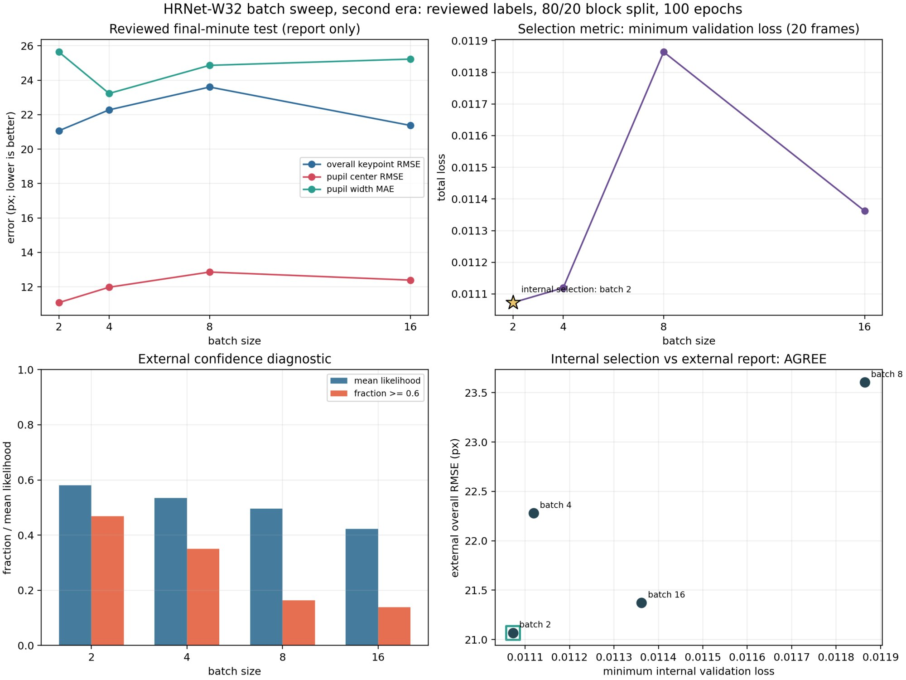
图 1-1：右上：内部验证损失，batch 2 最低（星号）。左上：测试集误差，蓝线在 batch 2 也最低（21.07 px）。右下：把两者画在一起，batch 2 在左下角，两个信号一致。左下：置信度 ≥ 0.6 的点的比例，batch 越大越低。Figure 1-1:Top right: internal validation loss, lowest at batch 2 (star). Top left: test error, the blue line is also lowest at batch 2 (21.07 px). Bottom right: both together, batch 2 sits in the lower-left corner, so the two signals agree. Bottom left: share of points with confidence ≥ 0.6 falls as the batch grows.
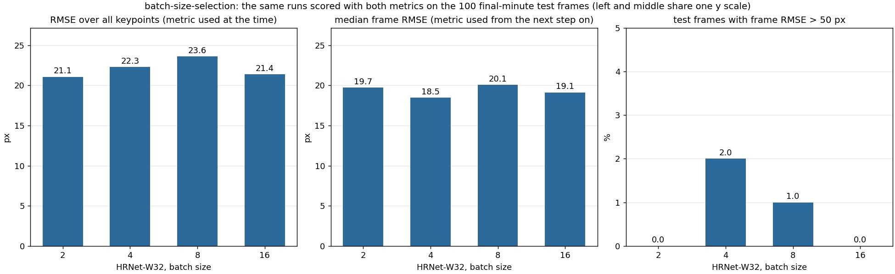
图 1-2：同样的四个模型，两种指标。左：全部关键点合在一起的 RMSE。中：中位帧 RMSE（第 3 步起用的指标，不受少数错得很远的帧影响），和左图同一个纵轴刻度。右：帧 RMSE 超过 50 px 的测试帧所占比例。按中位帧 RMSE，四个 batch size 是 19.7 / 18.5 / 20.1 / 19.1 px，都在 18.5–20.1 px 之间，batch 4 最低。Figure 1-2:The same four models, two metrics. Left: RMSE over all keypoints. Middle: median frame RMSE (the metric from step 3 on, not affected by a few far-off frames), on the same y scale as the left panel. Right: share of test frames with frame RMSE above 50 px. By median frame RMSE the four batch sizes give 19.7 / 18.5 / 20.1 / 19.1 px, all between 18.5 and 20.1 px, with batch 4 the lowest.
Conclusion:Batches 2, 4, 8 and 16 cannot be told apart: one run each, the validation loss on the 20 validation frames differs by only 7%, and the error on the 100 test frames is 21.1–23.6 px (RMSE over all keypoints) or 18.5–20.1 px (median frame RMSE). Batch 2 is taken as the one with the lowest validation loss and is used in every later step.
2选模型：ResNet-50Backbone: ResNet-50
基本信息Basic information
视频Video
第一只老鼠的 5 分钟眼睛视频（60 帧/秒，共 18,000 帧）。前 4 分钟用于挑帧和训练，最后 1 分钟只用于测试。The 5-minute eye video of the first mouse (60 fps, 18,000 frames). The first 4 minutes are used for frame selection and training, the final minute for testing only.
标注标准Label standard
第一阶段（瞳孔上点标在看得见的瞳孔的最高处）。Phase 1 (pupil top at the highest point of the visible pupil).
训练数据Training data
与第 1 步相同：前 4 分钟里人工标注的 100 帧按视频时间排序，最早的 80 帧（第 0–33 秒）训练。Same as step 1: the 100 hand-labeled frames of the first 4 minutes sorted by time in the video, the earliest 80 (0–33 s) for training.
验证数据Validation data
与第 1 步相同：同一批 100 帧里最晚的 20 帧（第 34–236 秒），与训练帧至少隔 1.2 秒。用来选模型。Same as step 1: the latest 20 of the same 100 frames (34–236 s), at least 1.2 s away from the training frames. Used to choose the model.
测试数据Test data
最后 1 分钟里按时间均匀取 100 帧，人工标注 8 个点。只用来报告成绩，不参与训练，也不参与任何选择。100 frames evenly spaced in time over the final minute, all 8 points labeled by hand. Used only to report the score, never for training or for any choice.
模型和配置Model and settings
5 种模型（ResNet-50、HRNet-W18、HRNet-W32、HRNet-W48、CSPNeXt-S），batch 2，各训练 100 轮，CPU，其余设置与第 1 步相同，每种训练一次。Five models (ResNet-50, HRNet-W18, HRNet-W32, HRNet-W48, CSPNeXt-S), batch 2, 100 epochs each on CPU, other settings as in step 1, one run each.
指标Metric
与第 1 步相同：全部关键点合在一起的 RMSE；图 2-2 同时给出中位帧 RMSE。Same as step 1: RMSE over all keypoints; Figure 2-2 also gives the median frame RMSE.
What was done:Same data and settings (batch 2, 100 epochs), five backbones: ResNet-50, HRNet-W18 / W32 / W48, CSPNeXt-S.
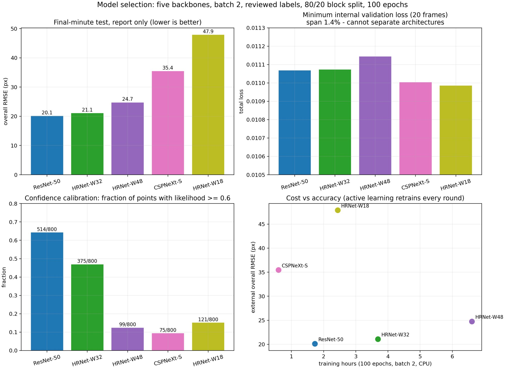
图 2-1：左上：测试集误差，ResNet-50 最低（20.1 px），HRNet-W32 接近（21.1 px）。右上：内部验证损失，5 个模型只差 1.4%，分不出高下。左下：置信度 ≥ 0.6 的点，ResNet-50 最多（800 个点里 514 个）。右下：训练时间对误差，ResNet-50 用时 1.7 小时，在左下角（误差低，用时短；只有误差高得多的 CSPNeXt-S 比它快）。Figure 2-1:Top left: test error, ResNet-50 lowest (20.1 px), HRNet-W32 close (21.1 px). Top right: internal validation loss, the five models differ by only 1.4% and cannot be separated. Bottom left: points with confidence ≥ 0.6, ResNet-50 has the most (514 of 800). Bottom right: training time vs error, ResNet-50 takes 1.7 h and sits in the lower-left corner (low error, short time; only CSPNeXt-S, with a much higher error, is faster).
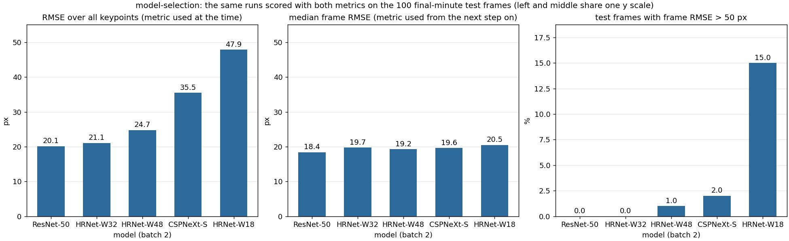
图 2-2：同样的五个模型，两种指标。左：全部关键点合在一起的 RMSE，从 20.1 到 47.9 px，差别很大。中：中位帧 RMSE，同一个纵轴刻度，五个模型里 ResNet-50 最低，18.4 px。右：帧 RMSE 超过 50 px 的测试帧比例，HRNet-W18 有 15%，CSPNeXt-S 有 2%，ResNet-50 和 HRNet-W32 是 0。左图的差别主要来自右图里这些错得很远的帧。Figure 2-2:The same five models, two metrics. Left: RMSE over all keypoints, from 20.1 to 47.9 px, a large spread. Middle: median frame RMSE on the same y scale; ResNet-50 is the lowest of the five, 18.4 px. Right: share of test frames with frame RMSE above 50 px: 15% for HRNet-W18, 2% for CSPNeXt-S, none for ResNet-50 and HRNet-W32. The spread in the left panel comes mainly from these far-off frames.
Conclusion:ResNet-50; all later experiments use ResNet-50 with batch 2.
Reasons: lowest test error by both metrics: RMSE over all keypoints 20.1 px, median frame RMSE 18.4 px; best use of confidence (514 of 800 points with confidence ≥ 0.6, against 75–375 for the other models), which helps when confidence is used later to detect blinks and tracking loss; cheapest training (1.7 h, against 3.7 h for HRNet-W32, the model with a similar error). The five models differ by only 1.4% in validation loss and about 2 px in median frame RMSE; none of the gaps is large.
Lesson on the metric: the RMSE over all keypoints is easily pulled up by a few far-off frames (the 47.9 px of HRNet-W18 come mainly from 15% of the frames); it reflects whether there are gross failures, not the error of a typical frame. From step 3 on the median frame RMSE is the main metric, with the share of frames above 50 px reported separately.
第一只老鼠的 5 分钟眼睛视频（60 帧/秒，共 18,000 帧）。前 4 分钟用于挑帧和训练，最后 1 分钟只用于测试。The 5-minute eye video of the first mouse (60 fps, 18,000 frames). The first 4 minutes are used for frame selection and training, the final minute for testing only.
标注标准Label standard
第一阶段。Phase 1.
训练数据Training data
起点是第 1 步的 80 帧。每一轮：模型预测前 4 分钟的全部 14,400 帧，由找帧算法标出可疑帧，再按画面外观聚类从中挑 20 帧，人工改正全部 8 个点后加入训练集。三种算法各自独立累加，11 轮后每条线 300 帧。Starts from the 80 frames of step 1. Each round the model predicts all 14,400 frames of the first 4 minutes, the detector flags suspicious frames, 20 of them are picked by clustering image appearance, all 8 points are corrected by hand and the frames are added to the training set. The three detectors accumulate independently; after 11 rounds each branch has 300 frames.
验证数据Validation data
第 1 步的 20 帧，始终不变。The 20 frames of step 1, never changed.
测试数据Test data
最后 1 分钟里按时间均匀取 100 帧，人工标注 8 个点。只用来报告成绩，不参与训练，也不参与任何选择。100 frames evenly spaced in time over the final minute, all 8 points labeled by hand. Used only to report the score, never for training or for any choice.
模型和配置Model and settings
ResNet-50，batch 2，100 轮，学习率在第 80、95 轮下降，Apple 芯片 GPU（MPS）训练。每一轮都从 ImageNet 预训练权重重新训练。图中每个点是内部验证 mAP 最高的存档，只训练一次。ResNet-50, batch 2, 100 epochs, learning rate drops at epochs 80 and 95, trained on the Apple GPU (MPS). Every round is trained anew from ImageNet-pretrained weights. Each point in the figure is the snapshot with the best internal validation mAP, from a single run.
指标Metric
中位帧 RMSE：对每一帧算 8 个点的 RMSE，再取 100 帧的中位数。Median frame RMSE: the RMSE over the 8 points of each frame, then the median over the 100 frames.
What was done:Choose an error-correction algorithm. Once a model is trained, an algorithm searches the video for frames where the model is probably wrong, a person corrects only those frames and the model is retrained; this is active learning. Three algorithms were compared to see whose picks reduce the error most.
Procedure. Start from 80 labels. Each round: the algorithm flags suspect frames in the prediction of the whole video → the flagged frames are clustered into 20 groups by image appearance, one frame per group → a person corrects these 20 frames and they are added to the training set → retrain. 11 rounds, from 80 to 300 labels. Each algorithm runs as its own branch.
The three algorithms (all built into DeepLabCut, extract_outlier_frames; input = the model's prediction of every frame of the video):
uncertain: frames in which any of the 8 points has confidence below 0.6.
jump: frames in which any point moved more than 20 px from the previous frame.
fitting: frames in which the 8 points deviate on average by more than 20 px from a time-series model (ARIMA, fitted on the confident frames only) of each point's trajectory.
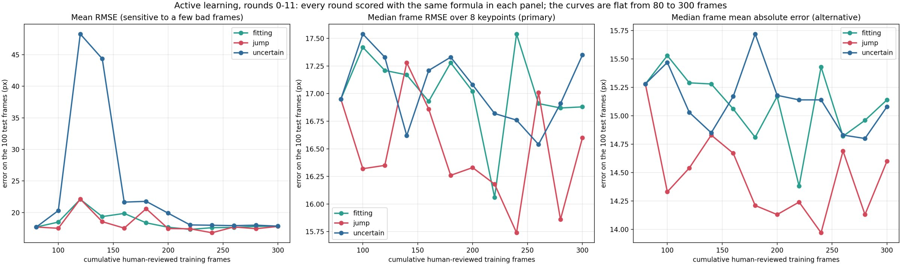
图 3-1：横轴是累计训练帧数，三种颜色是三种算法。图中每一轮都用同一个公式计算。中间一幅是主要指标（中位帧 RMSE）：三条线一直在 15.7–17.5 px 之间上下波动，没有下降趋势；红线（jump）多数时候略低；注意这幅图的纵轴只跨 2 px。左边一幅是均值，会被几帧严重错误拉高（蓝线在 120–140 帧的尖峰就是几帧眨眼造成的）。右边一幅是备选指标：每帧 8 个点误差的算术平均（不是均方根），再取中位数；个别偏得多的点不被放大，所以数值略低（14–15.7 px），形态和中间一幅相同。Figure 3-1:x = cumulative training frames, the three colours are the three detectors. Every round in the figure is scored with the same formula. The middle panel is the primary metric (median frame RMSE): all three lines wander between 15.7 and 17.5 px with no downward trend; the red line (jump) is slightly lower most of the time; note that its y axis spans only 2 px. The left panel is the mean, which a few badly wrong frames pull up (the blue spike at 120–140 frames comes from a few blink frames). The right panel is an alternative metric: the arithmetic mean (not the root mean square) of the 8 point errors of each frame, then the median; single far-off points are not amplified, so the values are slightly lower (14–15.7 px) and the shape matches the middle panel.
Conclusion:This step has two conclusions: jump is chosen as the error-correction algorithm, and on this video about 80 labels saturate.
jump is the error-correction algorithm and picks the frames in all later experiments. In this experiment jump has the lowest error: the mean of the median error over the 11 rounds is 16.4 px for jump, 17.0 px for uncertain and 17.0 px for fitting, and jump is the lowest in 8 of the 11 rounds. The lead is about 0.6 px, smaller than the variation when one setting is trained again (0.3–2 px), so we regard the three error-correction algorithms as close, with jump slightly ahead.
On the jump threshold: this step used a fixed 20 px. From step 5 on it is 3% of the video's median eye width; the algorithm is unchanged, and videos with different eye widths share one relative standard (eye widths 363–497 px, threshold about 11–15 px). Under the present corner definition this 5-minute video's eye is 497 px wide, so 20 px is about 4%: the step-5 threshold is slightly stricter than this one.
On this video about 80 labels saturate. From 80 to 300 labels the median error of all three branches stays between 15.7 and 17.5 px, with no decrease.
This result uses the keypoint definitions from before 2026-09-20.
After the definitions were made explicit on 2026-09-20, the same video was relabeled and the experiment repeated, with the same conclusion: the error stays between 12 and 13 px at 20, 40, 60, 80 and 100 labels and does not fall with the number of labels (step 5, video 0). What was made explicit is described in step 4; mainly, pupil top moved from "the highest point of the visible pupil" to "the true top of the pupil ellipse", and the two corners became the crossing of the continued eyelid margins.
The error values under the two sets of definitions cannot be compared directly; what agrees is that the video saturates within about 80 labels.
4点位定义的明确（2026 年 9 月 20 日起）：瞳孔按椭圆标，眼角取睑缘延长线的交点Keypoint definitions made explicit (from 2026-09-20): pupil as an ellipse, corners at the crossing of the eyelid margins
What was done:Where each of the 8 points is placed was written down, and all earlier videos were relabeled accordingly. From this step on every model and number uses these definitions. The full definitions, example figures and the common mistakes are in the folder keypoint_definitions/ of the repository. The points are described one group at a time below, each followed by its figure.
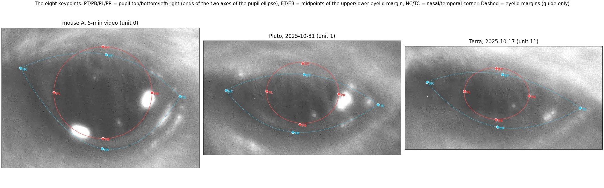
图 4-1：三只老鼠各一帧人工标注。红点是瞳孔的四个点，红线是过这四个点的椭圆；青色点是上下眼睑和两个眼角。图像为了看清做了提亮。 来源：左，第一只老鼠，视频 0（0_first5minvedio），第 15001 帧；中，Pluto，视频 1（1_20251031_Pluto_spont_1），第 68086 帧；右，Terra，视频 11（11_20251017_Terra_spont_1），第 68086 帧。都取自各视频的测试集，点是人工标注。Figure 4-1:One human-labeled frame of each of the three mice. Red dots are the four pupil points and the red line is the ellipse through them; cyan dots are the two eyelid points and the two corners. The frames are brightened for display. Source: left, first mouse, video 0 (0_first5minvedio), frame 15001; middle, Pluto, video 1 (1_20251031_Pluto_spont_1), frame 68086; right, Terra, video 11 (11_20251017_Terra_spont_1), frame 68086. All from the test set of the video; the points are human labels.
Pupil top, bottom, left, right (Fig. 4-2): the pupil is treated as an ellipse and the four points are the ends of its two axes. Parts hidden by the upper eyelid or by fur are completed with the ellipse, so the pupil-top point often lies above the upper-eyelid point, that is, at a position covered by the lid. In Fig. 4-2 the red dots are the present positions; the yellow crosses are the positions before 2026-09-20: at the topmost, bottommost, leftmost and rightmost visible points of the pupil, without fitting an ellipse. The pupil boundary is the outer edge of the darkened region; where the edge looks doubled the left contour is used; the brighter band around the dark core counts as pupil.
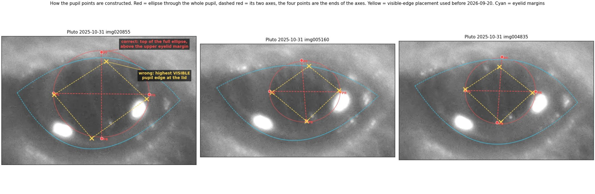
图 4-2：瞳孔四个点怎么来。红色椭圆盖住整个瞳孔，红色虚线是它的两条轴，四个点是轴的端点。黄色叉和黄色虚线是 2026 年 9 月 20 日之前的标法：当时没有刻意按椭圆去拟合，四个点标在看得见的瞳孔最靠上、最靠下、最靠左、最靠右的位置，所以四个点不一定是椭圆的端点，也不一定落在椭圆的两条轴线上。 来源：三幅都是 Pluto，视频 1（1_20251031_Pluto_spont_1），从左到右是第 20855、5160、4835 帧，取自第一批训练帧。红点是按 2026 年 9 月 20 日明确的定义重新标注的位置，黄色叉是同一帧在此之前的标注。Figure 4-2:How the four pupil points are obtained. The red ellipse covers the whole pupil, the dashed red lines are its two axes, and the four points are the ends of the axes. Yellow crosses and the dashed yellow outline show the placement before 2026-09-20: no ellipse was fitted on purpose and the four points were placed at the topmost, bottommost, leftmost and rightmost visible points of the pupil, so they are not necessarily the ends of an ellipse and do not necessarily lie on its two axes. Source: all three panels are Pluto, video 1 (1_20251031_Pluto_spont_1), frames 20855, 5160 and 4835 from left to right, taken from the first training batch. Red dots are the labels made under the definitions of 2026-09-20, yellow crosses the labels of the same frames before that.
Upper and lower eyelid (Fig. 4-1 above): the line between the eyelid skin and the eyeball is the eyelid margin. The upper-eyelid point is the midpoint of the upper margin, the lower-eyelid point the midpoint of the lower margin.
Left corner (nasal, medial canthus; Fig. 4-3, second row): there is a shadow at this corner; it gets narrower downwards and continues to near the lower eyelid. The outer border of the shadow is taken as the lower-left margin (solid red); it and the upper margin are each continued (dashed red), and the crossing of the two continuations (red circle) is the left corner; the cyan dot is the labeled position. Not used (dotted yellow line and yellow cross): following the inner border of the shadow, which puts the crossing inside the shadow. The hatched area is the shadow between the two constructions.
Right corner (temporal, lateral canthus; Fig. 4-3, third row): there are several bright reflections on this side, with a stretch of shadow below them. The lower margin is continued upwards along the outer line (dashed red), around the right of the reflections, and the point where it meets the upper margin (red circle) is the right corner; the cyan dot is the labeled position. Why the outer side: fur does not reflect, so the bright reflections on the right are still inside the eye and the corner must lie outside them. Not used (dotted yellow line and yellow cross): following the inner edge of the reflection and of the shadow below it, which puts the crossing on the inner line next to the reflection. The corner is not placed on a reflection either.
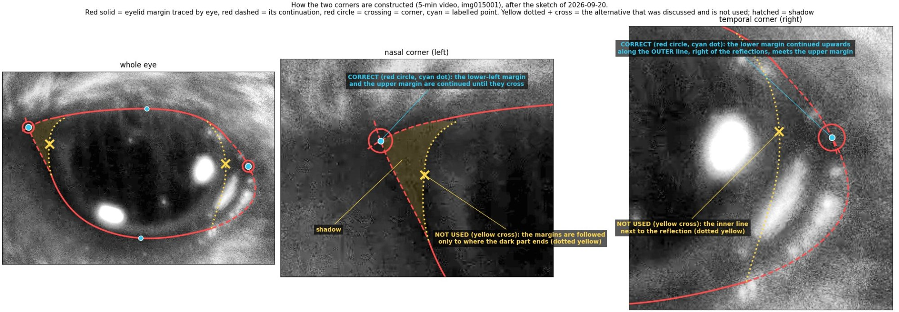
图 4-3：两个眼角怎么来。三行分别是整只眼睛、左眼角、右眼角；每一行左边是没有任何线的原图，右边是同一张图加上作图线。红色实线是沿图像描出的睑缘，红色虚线是它的延长线，红圈是交点，也就是眼角，青色点是标注的位置。黄色点线和黄色叉是不取的画法：左眼角沿阴影内侧的边，右眼角沿反光内沿和它下面阴影的内边缘，两条黄线都一直画到接近下眼睑点。斜线区域是左眼角处的阴影。 来源：三行都是第一只老鼠，视频 0（0_first5minvedio），第 15001 帧，取自测试集。青色点是人工标注；红线、黄线是对着图像画的作图线。Figure 4-3:How the two corners are obtained. The three rows are the whole eye, the left corner and the right corner; in each row the left image is the frame without any line and the right image is the same frame with the construction. Solid red = eyelid margin traced on the image, dashed red = its continuation, red circle = the crossing, which is the corner, cyan = the labeled point. Dotted yellow lines and yellow crosses show the construction not adopted: along the inner border of the shadow at the left corner, and along the inner edge of the reflection and of the shadow below it at the right corner; both yellow lines run down to near the lower-eyelid point. The hatched area is the shadow at the left corner. Source: all three rows are the first mouse, video 0 (0_first5minvedio), frame 15001, from the test set. Cyan dots are human labels; the red and yellow lines are construction lines drawn on the image.
看不清的点：所有 8 个点都一样，看得清楚就标；不能准确判断位置时，这个点留空不标。
Points that cannot be seen: the same for all 8 points: a point is labeled when it can be seen clearly and left empty when its position cannot be judged accurately.
之前的定义和现在的定义，逐点对照Earlier and present definitions, point by point
Where the numbers come from: two human label versions of the same frame, one under the earlier definition and one under the present one; the distance between the two is taken and the median over the frames reported (last column). No model is involved.
The four pupil points: 40 frames of the Pluto 2025-10-31 video, the earlier labels against the labels redone as an ellipse.
The two corners and the two eyelid points: 90 frames of the 5-minute video of the first mouse (test set 50, validation set 20, first batch 20), corners on the inner side against corners on the outer side.
Relative positions in the definition columns (e.g. "about 11 px above the upper-eyelid point") are differences of median coordinates over each set of labeled frames.
点point
2026 年 9 月 20 日之前的定义definition before 2026-09-20
现在的定义present definition
同一帧上两份标注的位移中位数（主要方向）median shift between the two label versions on the same frame (main direction)
瞳孔上点pupil top
看得见的瞳孔的最高处，停在眼睑边上；在上眼睑点下方约 25 pxhighest point of the visible pupil, stopping at the eyelid; about 25 px below the upper-eyelid point
瞳孔椭圆的顶端，被挡住时按椭圆估计；在上眼睑点上方约 11 pxtop of the pupil ellipse, estimated from the ellipse where hidden; about 11 px above the upper-eyelid point
52 px（向上 46 px） (46 px up)
瞳孔左点、右点pupil left, right
看得见的瞳孔最靠左、最靠右的位置，没有按椭圆拟合；左点比右点高约 37 pxleftmost and rightmost visible points of the pupil, no ellipse fitted; left about 37 px higher than right
椭圆横轴的两个端点；左右两点等高（相差 0 px）the two ends of the horizontal axis of the ellipse; left and right at the same height (0 px apart)
14 / 15 px（向上 10 / 15 px） (10 / 15 px up)
瞳孔下点pupil bottom
看得见的瞳孔的最低处lowest point of the visible pupil
椭圆的底端（下缘一般看得见，位置基本不变）bottom of the ellipse (the lower edge is usually visible, so the position hardly changes)
14 px（无固定方向） (no consistent direction)
左眼角left (nasal) corner
阴影的内侧inner side of the shadow
阴影的外侧：两条睑缘延长线的交点。原因：这片阴影是毛发遮挡造成的，眼角在阴影外侧更合理outer side of the shadow: crossing of the two continued eyelid margins. Reason: the shadow is fur covering the eye, so the corner is more plausibly on its outer side
40 px（向外 36 px） (36 px outwards)
右眼角right (temporal) corner
反光区域的内侧inner side of the reflections
反光区域的外侧：下睑缘沿外层线向上延伸与上睑缘的交点。原因：皮毛不会反光，反光亮带仍在眼睛内部outer side of the reflections: where the lower margin, continued upwards along the outer line, meets the upper margin. Reason: fur does not reflect, so the reflections are still inside the eye
56 px（向外 53 px） (53 px outwards)
上眼睑点upper eyelid
上睑缘弧线的中点midpoint of the upper eyelid margin
定义不变；眼角外移后位置略向上same definition; slightly higher after the corners moved
Were the earlier definitions applied consistently: yes. All human labels made on this video before 2026-09-20 follow one placement; the check per label set is below (keypoint_definitions/results/definition_by_label_set.csv, script keypoint_definitions/scripts/definition_check.py):
标注集label set
帧数frames
左眼角 xleft corner x
右眼角 xright corner x
瞳孔上点在上眼睑点上方 (px)pupil top above upper-eyelid point (px)
瞳孔左点比右点高 (px)pupil left higher than right (px)
之前：训练帧（第 1、2 步用）before: training frames (steps 1, 2)
每个数是该标注集里所有帧的中位数。负数表示瞳孔上点在上眼睑点的下方。之前的五组标注彼此一致（左眼角 x 404–419，右眼角 x 795–808，瞳孔上点在上眼睑点下方 25–27 px），和现在的标法明显不同。
Each number is the median over the frames of the label set. A negative value means pupil top lies below the upper-eyelid point. The five earlier label sets agree with one another (left corner x 404–419, right corner x 795–808, pupil top 25–27 px below the upper-eyelid point) and differ clearly from the present placement.
Conclusion:The largest changes are pupil top and the two corners.
What changed: pupil top moved from the highest visible point to the top of the ellipse; the two corners from the inner to the outer side; pupil left and right became the ends of the horizontal axis of the ellipse. Pupil bottom and the two eyelid points are unchanged.
Why the eyelids and corners are defined this way: these four points only serve to detect blinks, so a stable position that can be found in every frame is preferred.
Effect on the results before and after: the earlier definitions were used consistently in steps 1–3, the present ones from step 5 on; error numbers of the two parts cannot be compared directly. Model and batch size are carried over from steps 1 and 2 (ResNet-50, batch 2): where the points are placed changed, the images and the training procedure did not, so they were not compared again.
5主线：每个新视频要标多少帧Main line: labels needed per new video
基本信息Basic information
视频Video
视频 0：第一只老鼠的 5 分钟视频。视频 1–10：Pluto 的 19.9 分钟视频，其中视频 1、2、3 是同一天（2025-10-31）的三段，视频 4–10 每个录制日一段。视频 11 起：Terra 的 19.9 分钟视频，每个录制日一段。都是 60 帧/秒。Video 0: the 5-minute video of the first mouse. Videos 1–10: 19.9-minute videos of Pluto; videos 1, 2, 3 are three recordings of the same day (2025-10-31), videos 4–10 one per recording day. From video 11: 19.9-minute videos of Terra, one per recording day. All at 60 fps.
标注标准Label standard
第二阶段（第 4 步的定义）。Phase 2 (the definitions of step 4).
训练数据Training data
之前各视频带入的标注（见下表）加上这个视频自己的标注。自己的标注从视频前 80% 里挑：第一批 20 帧按画面外观聚类，之后每批 20 帧从 jump 规则标出的帧里聚类；每批先由模型预标，人再逐帧改正。The labels carried from earlier videos (table below) plus this video's own labels. Its own labels are picked from the first 80% of the video: the first 20 by clustering image appearance, each later batch of 20 by clustering among the frames with large jumps; the model pre-labels each batch and a person corrects every frame.
验证数据Validation data
视频第 80%–90% 的部分里取 20 帧，与前后各隔 2 秒。20 frames from the part between 80% and 90% of the video, with 2-second guards on both sides.
测试数据Test data
视频最后 10% 里按时间均匀取 50 帧，人工标注后冻结。只用来报告成绩。50 frames evenly spaced in time over the final 10% of the video, labeled by hand and frozen. Used only to report the score.
模型和配置Model and settings
ResNet-50，batch 2，120 轮，学习率在第 96、114 轮下降，MPS 训练，CPU 打分。每一步都从 ImageNet 预训练权重重新训练，只训练一次。成绩取最后一轮（第 120 轮）的存档。120 轮的原因：训练图只有 20–100 张，一轮只有 10–50 次迭代，第 1 步 100 轮时验证损失还在下降。取最后一轮而不是验证 mAP 最好的一轮的原因：验证集只有 20 帧，按它挑最好的一轮是在噪声里挑，成绩还会依赖验证集的标注；最后一轮不经过挑选，可重复。ResNet-50, batch 2, 120 epochs, learning rate drops at epochs 96 and 114, trained on MPS, scored on CPU. Every step is trained anew from ImageNet-pretrained weights, a single run. The final snapshot (epoch 120) is scored. Why 120 epochs: with only 20–100 training images an epoch is 10–50 iterations, and the 100-epoch run of step 1 was still improving on validation. Why the final snapshot rather than the one with the best validation mAP: the validation set has only 20 frames, so picking the best epoch by it is picking within noise and makes the score depend on the validation labels; the final snapshot involves no selection and is reproducible.
指标Metric
该视频 50 帧测试帧上的中位帧 RMSE（8 个点）。Median frame RMSE (8 points) on the 50 test frames of that video.
What was done:Videos are added one at a time, in this order.
Video 0: the 5-minute video of the first mouse.
Videos 1, 2, 3: the second mouse, Pluto; three recordings of the same day (2025-10-31), 19.9 minutes each.
Videos 4–10: Pluto, one recording per recording day, from the most recent backwards: 10-30, 10-29, 10-28, 10-27, 10-24, 10-23, 10-22 (there is no video of 10-26 or 10-25 in our set).
From video 11: the third mouse, Terra, one recording per recording day, from the most recent backwards: video 11 is 2025-10-17, video 12 is 10-16, then 10-15, 10-14, 10-13, 10-10, 10-09, 10-08 (videos 13–18).
Every video follows the same steps:
50 frames evenly spaced over the final 10% of the video become the test set; they are labeled and frozen.
The previous model is applied unchanged to get the "0 labels" error.
Each step adds 20 labels of this video (picked by the algorithm of section 5.1 and Figure 5-1 below; the model pre-labels each batch and a person corrects every frame), retrains together with the labels carried from earlier videos, and scores on the test set.
Plateau rule: stop when two consecutive steps each fail to improve the best error by more than 3%. The plateau point is the last step that did improve it. When the rule fires, a person confirms whether the video is finished. All 19 videos stopped when the rule fired, so all of them meet the definition of the plateau; for 18 of them the plateau point is the step the rule gives, and only for video 5 was the plateau point given further consideration. On video 5 the median error at 20 labels (15.85 px) and at 40 labels (16.58 px) is no better than at 0 labels (11.90 px), so the rule fired at 40; this meets the definition of the plateau, and by the rule the plateau point is 0 labels. But we took into account that the 0-label model is off by more than 50 px on 6 of the 50 test frames (12%), which are gross errors; with 20 labels there are 0 such frames, so all gross errors are removed; with 40 labels there are still 0, so the effect holds and nothing further is gained. The plateau point is therefore taken as 20 labels, and these 20 labels are what later videos carry.
The next video starts, carrying only this video's labels up to the plateau point (not every frame labeled on this video goes into the training of later videos: frames labeled after the plateau point are left out). This mirrors real use, where labeling stops at the plateau.
5.1 每一批 20 帧是怎么挑出来的（算法）5.1 How each batch of 20 frames is picked (algorithm)
Script: v2_new_pupil_top_video_scaling/scripts/select_frames.py. All numbers below are fixed parameters of the script; following them gives the same frames.
(a) The video is first split into three segments
Test segment: the final 10% of the video (at least 60 s). 50 frames evenly spaced in time are the test frames.
Validation segment: the 10% before it (at least 60 s). 20 evenly spaced frames are the validation frames.
Pool: all frames before the validation segment (about the first 80%; 57158 frames for a 19.9-min video). Training frames are picked from the pool only. 2 s are removed on both sides of the validation segment so that the three segments share no near-identical neighbouring frames.
(b) Batch 1: clustering by image appearance (no model)
Every 5th frame of the pool is taken.
An "appearance fingerprint" is computed for each frame: greyscale, downscaled to 128 × 96; a Gaussian blur with sigma 1 px minus a Gaussian blur with sigma 6 px (keeps edges and shape, removes slow lighting changes); downscaled to 32 × 24 and flattened to 768 numbers; mean subtracted and divided by the standard deviation.
k-means on the fingerprints with 20 clusters (scikit-learn KMeans, n_clusters=20, n_init=10, max_iter=300, random_state=42).
From each cluster the frame closest to the cluster centre (Euclidean distance) is taken, 20 frames in total, starting with the largest cluster.
Spacing: picked frames must be at least 1 s apart from each other and from every frame labeled earlier; frames that violate this are skipped. If fewer than 20 remain, the frames already taken are kept, the number of clusters is raised to 30, 40, … (at most 80) and re-clustered, and the new centre frames are taken in order of cluster size, those that satisfy the spacing, only until 20 are reached.
(c) From batch 2 on: candidates by the jump rule, then clustering by appearance
The model of the previous step predicts every frame of the whole video.
Threshold (one pixel number per video): eye width = median over the video of the distance between the two corners in each frame; threshold = 3% of it, about 11–15 px. The eye width only sets this number and plays no part in the selection.
Displacement of each frame: how many pixels each of the 8 points moved from the previous frame; the largest of the 8.
The rule: largest displacement of the 8 points > eye width × 3% → the frame is a candidate (a video's eye width is one fixed number, so the threshold is constant over the video; any one point jumping far counts). With more than 12000 candidates only about 12000 are kept, evenly spaced (to bound the clustering cost); with fewer than 40, the 2000 frames with the largest displacement are used instead.
The candidates go through exactly the steps of batch 1: fingerprints, k-means with 20 clusters, the frame closest to each centre, at least 1 s apart; if fewer than 20, the number of clusters is raised to 30, 40, … and re-clustered, topping up only the shortfall in order of cluster size.
If there are still fewer than 20 (this happens when the model is already good and the few candidates are bunched within a few seconds), the batch is filled from the candidates in order of decreasing jump, still 1 s apart.
Every batch is therefore "one frame per cluster": the jump rule decides where to look (frames on which the model is unstable), and the clustering makes sure the 20 picked frames look different from each other instead of being 20 nearly identical frames.
Figure 5-1:One selection sheet per video (batch 2, the first batch picked by the jump rule); scroll sideways. The sheets of every batch of every video are in the appendix at the end of the page.
Top-left scatter: one dot per candidate frame, placed by the first two principal components of its fingerprint, coloured by cluster; black stars are the 20 picked frames. Top-right bars: frames per cluster.
Second row: when the frames of each cluster occur in the video; stars are the picks.
Next rows: the model's traces (pupil centre x and y, eye opening, pupil area, lowest pupil confidence); thin vertical lines are the 20 picks.
Bottom row: the largest displacement of the 8 points from the previous frame (the quantity of the jump rule); the red dashed line is the threshold and frames above it are candidates.
What to see: stars spread over the scatter plot and vertical lines spread over the whole duration: the 20 frames cover different appearances and moments.
Note: two or three stars in one cluster mean that the centre frames of other clusters collided with the 1-second spacing and the shortfall was filled by re-clustering (section 5.1). Evenly spaced stars of one cluster are a continuous stretch of that cluster's frames split evenly, not a periodic event in the video. Example: cluster 1 of video 0, batch 2: 58 candidate frames lie continuously in seconds 0–20, the three stars fall at 2, 10 and 18 s.
Left: how many of its own labels each video used at its plateau. For example, video 0 used 60.
Right: the grey dashed line is the error at 0 labels (the previous video's model used unchanged), the red line the error at the plateau. The gap between them is what the video's own labels bought. Video 1 starts at 208 px, off scale, because the mouse changed.
Figure 5-3:The curves of every video, from video 0 to video 18; scroll sideways. Under each figure: video, mouse, date and plateau point. The three panels, with the first figure (video 0) as the example:
Left: x = this video's own labels, y = error. 12.9 px at 20 labels, 13.0 px at 40, 12.0 px at 60; the next two steps (13.1 px at 80, 12.3 px at 100) bring no gain, so the rule fired at 100 and the plateau point is 60.
Middle: error of each of the 8 points. On video 0 the nasal corner is the hardest (16–19 px), pupil top next (12–13 px).
Right: label-free signals. The purple line is the share of video frames flagged by the jump rule, falling from 7% at 20 labels to 2% from 60 labels on.
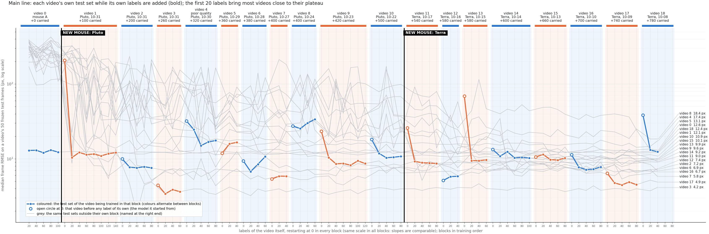
图 5-4：所有视频合在一张图里，突出主线（图很宽，可以左右拖动）。从左到右每个色块是一个视频，按训练先后排列，色块上方注明视频、日期和带入的标注数。色块内横轴是这个视频自己的标注帧数，纵轴是误差（对数刻度）。粗的彩色线是这个视频自己的测试集：空心圆是 0 帧（上一个模型直接用），之后每 20 帧一个点。要看的是：多数视频从 0 帧到 20 帧一步就降到接近平台的位置，之后基本持平。灰线是其他视频的测试集，右端注明是哪个视频。Figure 5-4:All videos in one figure, with the main line emphasized (wide; scroll sideways). From left to right each tinted block is one video, in training order; above it: video, date and carried labels. Inside a block x = that video's own labels and y = error (log scale). The bold coloured line is that video's own test set: the open circle is 0 labels (the previous model applied unchanged), then one point every 20 labels. What to see: most videos drop close to their plateau in the single step from 0 to 20 labels and stay flat afterwards. Grey lines are the test sets of the other videos, named at the right end.
每个视频的完整数字（由结果表自动生成）：
The full numbers of every video (generated from the result tables):
For videos 0–3 the column "carried into later videos" (100 / 100 / 60 / 60, 320 in all) exceeds their plateau points (60 / 20 / 20 / 20, 120 in all), and so does "labeled in total". Reason: when these four videos were done, the rule "stop at the plateau and carry only the labels up to it" was not yet fixed; what was carried is every label that existed when the next video started, and labeling continued a few steps past the plateau. From video 4 on the rule is applied strictly. These 320 labels are the same in the training set of every later model, so comparisons between the later videos are unaffected.
Videos 4, 5 and 8 have larger errors (15.0, 15.9 and 25.3 px at the plateau point). The labeler's judgement: these three videos are blurry, the pupil edge and the point positions are hard to identify even by eye, so the human labels themselves are less certain and the errors are not comparable with the other videos.
Video 5: the median error at 0 labels is already low, but 12% of test frames are off by more than 50 px; 20 labels remove all of them, so the plateau point is recorded as 20.
Video 8 stays above 25 px at every step with 12–16% of test frames above 50 px. The cause is a blurry image: the pupil edge and the points are hard to judge even by eye, so the labels themselves are uncertain.
Conclusion:The first video of a new mouse needs 20 labels; later videos of the same mouse mostly reach the plateau with 0–40.
Change of mouse: 208 px with no labels on the second mouse (the model had seen one mouse and 100 labels), 26 px on the third (two mice and 540 labels): the starting point improves. On the third mouse, however, neighbouring models score 17–33 px at 0 labels, so a single number is not stable. Both new mice reach about 10 px after 20 labels.
The 16 later videos of the same mouse: 14 reach the plateau with 0–40 labels (0 labels: 2, 20: 6, 40: 6); video 14 needs 60 and video 9 needs 80.
Error at the plateau: mostly 3–16 px; video 8 is the exception (25 px, blurry image).
6实验结束后回头看的问题：第一批只标 5 帧或 10 帧够不够A question asked after the experiments: would a first batch of 5 or 10 labels be enough
— We found that 20 labels per video generally bring the error close to saturation. Can the number of labels be reduced further? What is the result, is it enough, can it replace 20 labels, and why?
基本信息Basic information
视频Video
与第 5 步相同的各个视频。The same videos as in step 5.
标注标准Label standard
第二阶段（第 4 步的定义）。Phase 2 (the definitions of step 4).
训练数据Training data
与该视频第 1 步的训练集相同，只是该视频自己的 20 帧换成其中的 5 帧或 10 帧。子集按画面外观挑（把第一批的 20 个聚类合并成 5 组或 10 组，每组取一帧），不依赖任何模型；每种大小取两组（a、b）。The training set of that video's step 1, with the video's own 20 labels replaced by 5 or 10 of them. The subsets are picked by image appearance (the 20 clusters of the first batch are merged into 5 or 10 groups and one frame is taken from each) and depend on no model; two subsets (a, b) per size.
测试数据Test data
与第 5 步相同：该视频的 50 帧测试帧。Same as step 5: the 50 test frames of that video.
How exactly the 5 and 10 labels are taken (algorithm). Script: v2_new_pupil_top_video_scaling/scripts/make_label_subsets.py. It uses only the 20 labeled frames of the first batch and the clustering saved at the time; no model and no new labeling.
The 20 frames of the first batch come from 20 appearance clusters (batch-1 algorithm of section 5.1 in step 5); each cluster has a centre (a 768-number fingerprint) and a number of frames.
The 20 cluster centres are clustered again by k-means into 5 groups (for 5 labels) or 10 groups (for 10 labels), each centre weighted by the number of frames in its cluster (scikit-learn KMeans, n_clusters=5 or 10, n_init=20, random_state=0).
Each of the 20 labeled frames is assigned by its fingerprint to the nearest group.
Subset a: from each group, the labeled frame closest to the group centre. Subset b: from each group, the second closest (the same frame again when the group holds only one labeled frame).
If groups returned the same frame and fewer than 5 or 10 distinct frames result, the subset is filled from the unused labeled frames in order of increasing distance to any group centre.
This gives four lists: 5a, 5b, 10a, 10b. In training, the video's own 20 labels are replaced by the 5 or 10 listed frames; the carried labels of the earlier videos, the validation frames (20), the test frames (50), the model and the training settings are exactly those of that video's step 1 (scale_step.py --step 1 --subset list-file).
So the 5 and 10 labels are also "one frame per kind of appearance", only with a coarser grouping; a and b are two different sets of frames under the same grouping (the closest and the second closest frame of each group) In the 19 videos 5a and 5b have no frame in common (except 1 frame each on videos 12 and 14), and 10a and 10b share 2–5 frames.
Why this step was done afterwards:On the main line the first batch of every video has 20 labels. Figure 5-4 shows that for most videos these 20 labels bring the error directly close to the plateau. So after the videos of the main line were finished we went back to step 1 of each video and asked: what would the result have been with a first batch of only 5 or 10 labels?
What was done:5 or 10 of the 20 labels of each video's first batch were taken, everything else exactly as in that video's step 1, then retrained and scored; no new labeling is needed. With so few frames the result depends strongly on which frames happen to be taken, so to guard against chance two different subsets were taken for each size and trained separately: 5a, 5b and 10a, 10b. The shaded band in the figure is the range between the two results.
To be clear: the 5- and 10-label models were run afterwards only to look at the result; they were trained and scored, and were not used for jump selection or followed by more labeling. On the main line the jump rule is first used after the model of the first 20 labels. The results of this step therefore only answer "how large should the first batch be"; they do not represent a procedure of "5 labels first, then jump-selected labels".
Figure 6-1:The same figure as Figure 5-4, here with the 5- and 10-label models emphasized. The figure is wide; scroll sideways.
Black line: the regular procedure, 0 labels → 20 → 40 ….
Open circles: the two 5-label subsets (5a, 5b, at the same x) and the two 10-label subsets (10a, 10b).
Band: at 5 labels from the better to the worse of the two subsets, likewise at 10 labels, closing onto the 0-label and 20-label points. A narrow band means the two subsets agree; a wide one means another choice of frames gives a very different result (e.g. 5 labels on videos 1 and 6).
视频video
0 帧0 labels
5 帧 (a / b)5 labels (a / b)
10 帧 (a / b)10 labels (a / b)
20 帧20 labels
{{FEWER_ROWS}}
单位 px，中位帧 RMSE。"–" 表示没有这个点（视频 0 没有 0 帧模型）。
Median frame RMSE in px. "–" = no such point (video 0 has no 0-label model).
{{FEWER_STRIP}}
图 6-2：每个视频各一张，排成一行，可以左右拖动。每张图里蓝线是正常的 0、20、40… 帧，橙色点是 5 帧和 10 帧的两组；左图是中位误差，右图是误差超过 50 px 的测试帧比例。两个例子：视频 1（新老鼠的第一个视频），0 帧 208 px，5 帧的 a / b 两组 96 / 41 px，10 帧的两组 20 / 16 px，20 帧 10.4 px，标得越多越好，5 帧和 10 帧都不够；视频 5（之前的视频已经覆盖得比较好），中位误差在 0–20 帧之间都是 9–16 px，差别不大，但误差超过 50 px 的测试帧从 0 帧时的 12% 降到 5 帧时的 0–4%。Figure 6-2:One figure per video in one row; scroll sideways. In each, the blue line is the regular 0, 20, 40, … labels and the orange points are the two subsets of 5 and of 10 labels; left = median error, right = share of test frames above 50 px. Two examples: video 1 (first video of a new mouse): 208 px at 0 labels, 96 / 41 px for the two 5-label subsets a / b, 20 / 16 px for the two 10-label subsets, 10.4 px at 20; more labels are better and neither 5 nor 10 is enough. Video 5 (well covered by the earlier videos): the median error is 9–16 px anywhere between 0 and 20 labels, but the share of test frames above 50 px falls from 12% at 0 labels to 0–4% at 5.
Conclusion:5 or 10 labels are enough on a few videos but cannot replace 20.
The result: of the 19 videos only 5 have both 5-label subsets no more than 10% worse than the 20-label model (videos 5, 7, 11, 14, 15), and 7 have both 10-label subsets no more than 10% worse (videos 5, 7, 8, 11, 12, 14, 15); on video 3 the difference is only 0.1–0.5 px. On the other videos 5 or 10 labels are worse: e.g. video 0: 79 / 82 px (the two 5-label subsets a / b) and 20 / 21 px (the two 10-label subsets) against 12.9 px (20); video 1: 96 / 41 px and 20 / 16 px against 10.4 px; the last video, 18: 28 / 31 px and 23 / 23 px against 13.1 px. The 20-label model is better than both 5-label subsets on 15 videos and better than both 10-label subsets on 11.
Is it enough: on videos already well covered by the earlier videos, yes. Their error is low at 0 labels (videos 3, 5, 7: 4.4, 11.9, 5.4 px at 0 labels), so labels make little difference either way. Video 11 is the exception: the first video of the third mouse, 26 px at 0 labels, 9.7 / 10.0 px with 5 and 9.2 px with 20.
Can it replace 20 labels: no, for three reasons. (a) On most videos the error with 5 or 10 labels is clearly higher than with 20. (b) One cannot tell in advance which kind a new video is: both are a change of mouse, yet 5 labels give 96 / 41 px on video 1 and 9.7 / 10.0 px on video 11. (c) With few frames the result depends on which frames happen to be taken: two 5-label subsets of the same video can differ a lot (video 1: 96 vs 41 px; video 6: 6.7 vs 12.8 px); 20 labels do not have this problem.
Cost against benefit: 5 or 10 labels save only 15 or 10 labels per video, at the price of an unstable result. So the first batch of every video stays at 20 labels, then 20 per step.
Anomaly: on video 4, 10 labels (45 px, both subsets) are worse than 0 labels (32 px). Conjectured cause: video 4 is blurry and these 10 labels are themselves uncertain, so a few inaccurate labels pull the model off, worse than keeping the earlier videos' model; from 20 labels on the error returns to about 15 px.
7加入新视频会不会让旧视频变差：不会Do new videos hurt old ones: no
基本信息Basic information
视频Video
第 5 步的全部视频。All videos of step 5.
标注标准Label standard
第二阶段（第 4 步的定义）。Phase 2 (the definitions of step 4).
数据Data
第 5、6 步训练出的每一个模型（最后一个快照），在每一个视频的 50 帧测试帧上打分。没有新的训练，也没有新的标注。Every model trained in steps 5 and 6 (final snapshot) is scored on the 50 test frames of every video. No new training and no new labels.
指标Metric
与第 5 步相同：中位帧 RMSE。Same as step 5: median frame RMSE.
做了什么：把这条线上训练过的每一个模型，拿到每一个视频的测试集上打分（回测）。
What was done:Every model trained along the sequence was scored on the test set of every video (back-test).
Figure 7-1:The same figure as Figure 5-4, here with the back-test emphasized. The figure is wide; scroll sideways.
One colour per video. Its test set is bold after its own block (later models also contain labels of other videos), thin inside its own block, and grey before its own block (its labels not yet in the training set).
First thing to see: the bold lines are essentially flat. Adding other videos later does not make an earlier video worse.
Second: at the far left, with labels of the first mouse only, every Pluto video (grey) is at 150–430 px. As soon as video 1's labels enter, videos 2, 3, 5, 7 drop to 5–20 px and videos 4, 8, 9, 10 to 20–40 px; among video 1's seven models a few still score 100–220 px on videos 4, 6, 8, 9, 10.
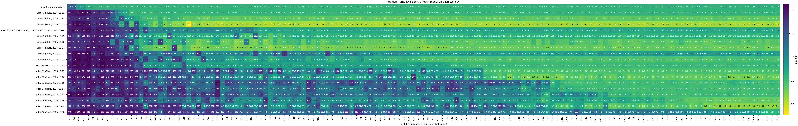
图 7-2：同样的数据用表格显示：行是测试视频，列是模型，格子里是误差 (px)，颜色越黄越好、越紫越差。左边一片紫色是只有第一只老鼠标注的模型；往右每一行颜色稳定，没有重新变紫。149 个模型并排，图很宽，横向滚动看。Figure 7-2:The same data as a table: rows = test videos, columns = models, cells = error (px); yellow is good, purple is bad. The purple block on the left is the models with labels of the first mouse only; to the right each row keeps its colour and never turns purple again. With 149 models side by side the figure is wide; scroll sideways.
Conclusion:One model can keep accumulating videos without hurting the old ones. Videos of the same day transfer directly (video 3 was at 4.4 px before any of its own labels); a new day needs its 0-label error checked before deciding how much to label. A 0-label score from a single model is not reliable; individual models can be far off.
8每个点的误差和置信度：瞳孔上点最不准；置信度低的点误差更大Error and confidence of each keypoint: pupil top is the least accurate; low confidence goes with larger error
基本信息Basic information
视频Videos
全部 19 个视频（视频 0–18）。All 19 videos (videos 0–18).
标注标准Label standard
2026 年 9 月 20 日明确的点位定义（第 4 步）。The keypoint definitions made explicit on 2026-09-20 (step 4).
数据Data
每个视频的 50 帧测试帧（视频最后 10%，不参与训练）；每一步打分时已经存下的逐点误差和置信度表。The 50 test frames of each video (final 10% of the video, never used for training); the per-point error and confidence tables saved when each step was scored.
模型Model
每个视频每一步的模型（ResNet-50，batch 2，120 epochs，最后一个快照）；合并的图和表用每个视频平台点的模型（视频 7 和 12 用各自的 20 帧模型）。The model of every step of every video (ResNet-50, batch 2, 120 epochs, final snapshot); the pooled figure and table use each video's plateau-point model (videos 7 and 12: their 20-label models).
指标Metric
一个点的误差 = 模型预测位置与人工标注位置之间的直线距离（像素），不按置信度筛点，人没有标的点不算；置信度 = 模型给这个点的置信度（0 到 1）。每个点位报告误差的中位数、第 90 百分位数和平均置信度。Error of a point = straight-line distance (px) between the prediction and the human label, no confidence cut-off, points without a human label excluded; confidence = the model's confidence of the point (0 to 1). Per keypoint: median and 90th percentile of the error, and mean confidence.
脚本和结果Script and results
v2_new_pupil_top_video_scaling/scripts/keypoint_confidence_error.py；结果在 v2_new_pupil_top_video_scaling/results/keypoint_confidence_error/。v2_new_pupil_top_video_scaling/scripts/keypoint_confidence_error.py; results in v2_new_pupil_top_video_scaling/results/keypoint_confidence_error/.
Why this comes here:The pupil area that follows uses the four pupil points, and the frames without a visible pupil are found from the confidence. So first: how accurate is each point, and can its confidence be trusted.
What was done:On the 50 test frames of each video, the error (straight-line distance between prediction and human label, px) and the model's confidence were summarized for each of the 8 points. The data are the per-point error tables saved when each step was scored. There is one figure per video (results/keypoint_confidence_error/keypoint_confidence_error_videoNN.png); below is the figure for the 19 videos together, with each video's plateau-point model.
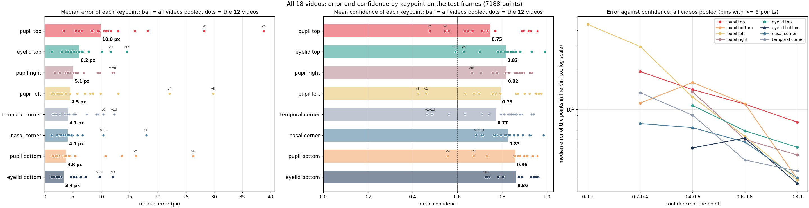
图 8-1：左：每个点位一行，按误差从大到小排。横条是 19 个视频合并后的误差中位数（数字写在条的末端），小圆点是 19 个视频各自的值，标了编号的是误差最大的两个视频（例如 v8 是视频 8）。要看的是：瞳孔上点的横条最长（10.2 px），其余 7 个点都在 3.5–6.0 px；远离横条的圆点多数是视频 4 和视频 8。中：同样的画法，换成平均置信度，竖虚线是 0.6，标了编号的是置信度最低的两个视频。右：把所有点按置信度分成 5 档，每一档里误差的中位数（纵轴是对数刻度），一条线一个点位；线从左到右下降，说明置信度越高误差越小。Figure 8-1:Left: one row per keypoint, sorted from the largest error. The bar is the median error of the 19 videos pooled (number at its end), the dots are the 19 videos one by one; the two videos with the largest error are named (e.g. v8 = video 8). What to see: pupil top has the longest bar (10.2 px), the other 7 points are at 3.5–6.0 px; the dots far from the bars are mostly videos 4 and 8. Middle: the same for the mean confidence; dashed line = 0.6; the two videos with the lowest confidence are named. Right: all points split into 5 confidence bins, median error within each bin (log scale), one line per keypoint; the lines fall from left to right: the higher the confidence, the smaller the error.
{{KP_STRIP}}
图 8-2：每个视频各一张，排成一行，可以左右拖动。每张图：左，8 个点各一条线，横轴是这个视频自己的标注帧数（20、40、60…），纵轴是误差中位数，线越低越准，竖点线是平台点，右端写着最后一步的数值；瞳孔的四个点是实线，眼睑和眼角是虚线。中，同样的画法，纵轴换成平均置信度，线越高越好。右，平台点模型在 50 帧测试帧上的每一个点，横轴是置信度，纵轴是误差（对数刻度），颜色是点位，竖虚线是置信度 0.6；点越往左上，表示置信度低而且误差大。Figure 8-2:One figure per video in one row; scroll sideways. In each: left, one line per keypoint, x = labels of this video (20, 40, 60, …), y = median error; lower is more accurate; the dotted line is the plateau point and the value of the last step is written at the right end; the four pupil points are solid, eyelids and corners dashed. Middle, the same with the mean confidence on the y axis; higher is better. Right, every point of the plateau-point model on the 50 test frames, x = confidence, y = error (log scale), colour = keypoint, dashed line = confidence 0.6; points towards the upper left have low confidence and a large error.
Conclusion:Pupil top is the least accurate point, and points with low confidence have larger errors.
Pooled over the 19 videos the median error of pupil top is 10.2 px, the other 7 points 3.5–6.0 px; pupil top has the lowest mean confidence (0.75), followed by the temporal corner (0.78) and pupil left (0.79); pupil top also has the largest 90th-percentile error (33 px), followed by pupil left (27 px).
For every point a lower confidence goes with a larger error (rank correlation −0.30 to −0.51): points with confidence 0.8–1 have a median error of 2.8–4.9 px (pupil top 8.3 px), points with confidence 0.2–0.4 have 7.8–108 px.
Pupil top has an error of 8.3 px even at high confidence, so its confidence does not show that a prediction is accurate the way it does for the other points.
Videos differ: on videos 4 and 8 all four pupil points are poor (9.7–29.8 px), on video 5 only pupil top (38.8 px).
9主动学习把误差降到饱和以后，整段视频里哪些帧的预测仍不可信，怎么找出来，怎么用最少的人力修好Once active learning has brought the error to its plateau, which frames of a whole video are still not to be trusted, how to find them, and how to repair them with the least human effort
The question: once a video's model has reached its plateau and the whole video is predicted, a few frames are still clearly wrong. The question is: (1) which frames cannot be trusted, to be found without labels, and (2) how to repair them with the least human effort. 9.1 defines a wrong frame, 9.2 finds them, 9.3 repairs and checks.
基本信息（9.1–9.3 共用）Basic information (shared by 9.1–9.3)
视频Videos
全部 19 个视频（视频 0–18；老鼠 A 1 个，Pluto 10 个，Terra 8 个）。All 19 videos (videos 0–18; 1 of mouse A, 10 of Pluto, 8 of Terra).
模型Model
每个视频用它自己平台点的那个模型（第 5 步的表），对整段视频每一帧做预测。For each video the model at its own plateau point (table of step 5), predicting every frame of the whole video.
真值帧Truth frames
每个视频冻结的 50 帧测试帧和 20 帧验证帧，取自视频最后 4 分钟，模型没有用它们训练；19 个视频共 1330 帧。Each video's frozen 50 test and 20 validation frames, from the last 4 minutes of the video, never trained on; 1330 frames over the 19 videos.
误差Error
帧 RMSE（预测的 8 个点和人工标注的 8 个点之间的距离，公式见页面开头）除以该视频的眼宽。眼宽 = 两个眼角距离在整段视频预测里的中位数，不用标注；19 个视频 392–497 px。Frame RMSE (distance between the 8 predicted and the 8 labeled points, formula at the top of the page) divided by the video's eye width. Eye width = the median corner-to-corner distance over the video's predictions, no labels needed; 392–497 px on the 19 videos.
脚本和结果Scripts and results
v2_new_pupil_top_video_scaling/scripts/error_tier.py、fit_threshold.py、acceptance_thresholds.py、flag_and_repair.py、finder_comparison.py、pca_threshold.py；结果在同名的 results/ 子目录。v2_new_pupil_top_video_scaling/scripts/error_tier.py, fit_threshold.py, acceptance_thresholds.py, flag_and_repair.py, finder_comparison.py, pca_threshold.py; results in the results/ folders of the same names.
9.1 定义错帧阈值：误差以眼宽为单位，线在眼宽的 14%9.1 Defining the wrong-frame threshold: error in units of eye width, the line at 14% of the eye width
Errors are in units of eye width rather than pixels so that the same numbers hold on another camera or at another distance. The histogram of the 1330 errors (Figure 9-1) has one main group that ends at about 13% of the eye width and, to its right, a sparse tail. The line is at 14% of the eye width; there is no frame between 12.7% and 15.4%. Frames above the line are wrong frames, every other frame counts as right. The line was read off the histogram, as the blink threshold of step 11 was.
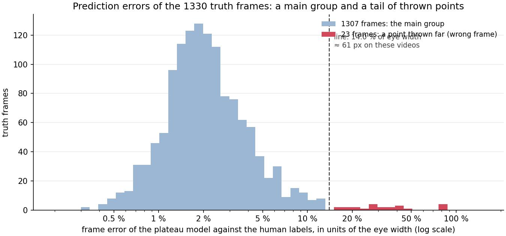
图 9-1：1330 帧真值帧的帧误差，以眼宽为单位，横轴对数刻度。蓝色是主体，红色是线右边的 23 帧错帧，虚线是眼宽 14% 的线。Figure 9-1:Frame error of the 1330 truth frames in units of the eye width, log scale. Blue: the main group; red: the 23 wrong frames to the right of the line; dashed: the line at 14% of the eye width.
Below the line: the model's points are still on the structure they belong to and the deviation is only a slide along it: for a pupil point which ring of the edge it sits on, for a corner or lid point a shift along the lid margin, so it cannot exceed the size of that structure. Taking the pupil points as the example, in the 1307 frames of the main group the model's worst pupil point is at a median 1.16 pupil radii from the pupil centre, nine in ten within 1.4.
Above the line: the heatmap's highest peak has jumped to another structure: a pupil point to a corner, an eyelid, a glint or the image border, a corner or lid point to the fur, the image border or the other corner. Of the 23 wrong frames, 13 have only pupil points thrown, 3 only points of the eye outline, 7 both; taking the pupil points as the example, the worst point is at a median 5 radii from the pupil centre.
Nothing in between: the model scores high only where the image looks like the point it has learned. The pupil edge, the corners, the lid margins and the glints each have their own look, and peaks appear only there. Between the right place and the next structure lies a uniform stretch of iris, skin or fur in which no point was ever placed, so the model gives it no high score and no peak forms there. A point therefore either stays where it belongs or jumps to another structure far away; it does not stop just off its place. This holds for the pupil points and for the corner and lid points alike, and the heatmap examples of step 9.3 (figure 9-7) show it: of the two peaks one sits at the right place and one on the fur or the frame border, with nothing between them.
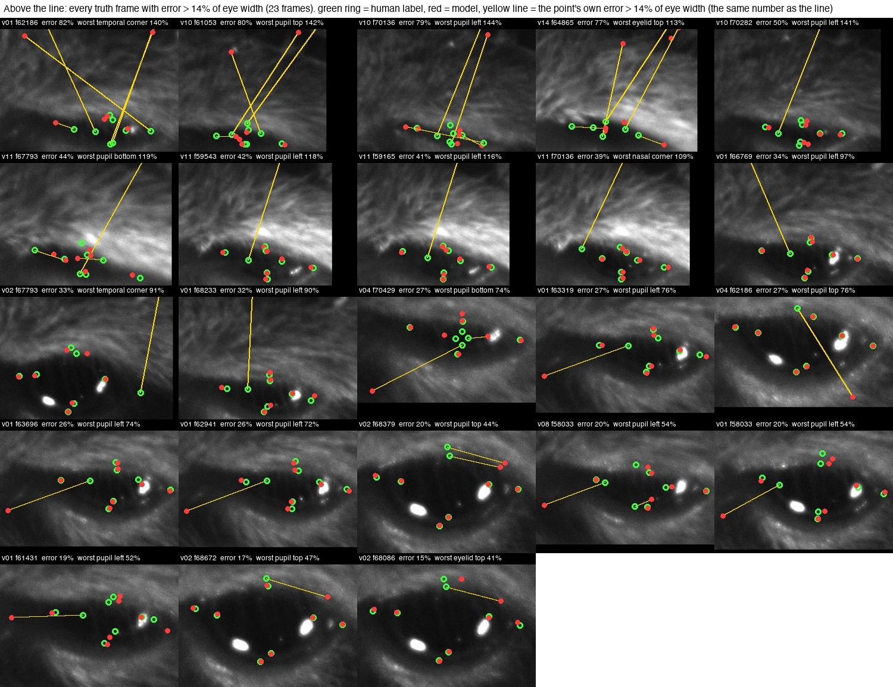
图 9-2a：线以上的全部 23 帧，帧误差从大到小。绿圈 = 人工标注，红点 = 模型；黄线连起自己的误差也超过眼宽 14% 的点，和帧的线是同一个数。每一帧都有点跳到了别的结构上。Figure 9-2a:All 23 frames above the line, largest frame error first. Green ring = human label, red = model; a yellow line joins the two where the point's own error also exceeds 14% of the eye width, the same number as the line. In every frame a point has jumped to another structure.
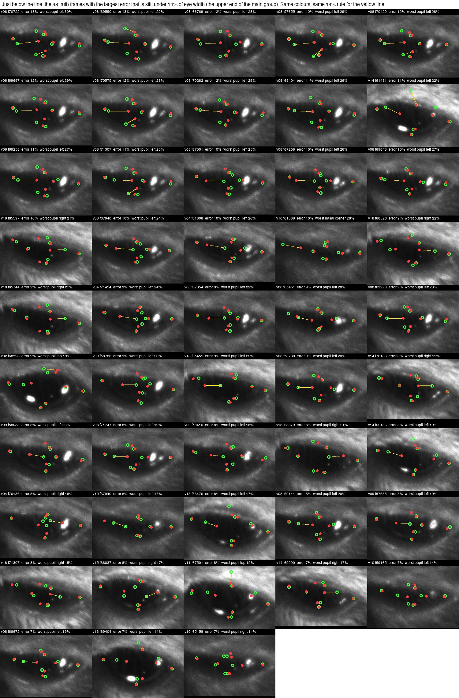
图 9-2b：线以下、紧挨着线的 48 帧，也就是主体的上端，同样的颜色和同样的 14% 规则。单个点可以超过 14%，但 8 个点合起来的帧误差没有超过线；点都还在自己的结构附近；超过 14% 的几乎全是瞳孔点，视频 8 模糊的瞳孔占了大半。Figure 9-2b:The 48 frames just below the line, the upper end of the main group, same colours and the same 14% rule. A single point can exceed 14% while the frame error over the 8 points stays under the line; the points are all still near their own structure; those over 14% are almost all pupil points, and the blurry pupil of video 8 makes up most of them.
Conclusion on wrong frames:one line, 14% of the eye width.
23 of the 1330 frames are above it (videos 1: 8, 2: 4, 4: 2, 8: 1, 10: 3, 11: 4, 14: 1); on these videos the line is about 55–69 px.
Below the line the points are still on their own structure, above it a point has jumped to another structure; the gap between the two makes the exact position of the line uncritical.
Every threshold that follows uses the same unit and the same line.
9.2 找错帧的方法确定：fitting 看时间上的突变，PCA 看形状上的异常，两者互补9.2 Settling the method for finding wrong frames: fitting sees jumps in time, the PCA sees implausible shapes, the two complement each other
A finder looks only at the model's predictions, gives every frame one number and flags the frame when the number crosses a threshold. The candidates were compared at the 14% line (Figure 9-3); this page uses two: fitting sees jumps in time, the PCA sees implausible shapes. Both find all 23 wrong frames, but not the same frames.
jump: the displacement of the point that moved farthest since the previous frame, divided by the eye width.
uncertain: the lowest confidence of the 8 points.
fitting: a time-series model (SARIMAX, one fit per whole video, points with confidence below 0.01 treated as missing) fitted to each point's x and y trajectory predicts the point's position in this frame from the preceding frames; a point's deviation = distance between predicted and actual position, divided by the eye width. DeepLabCut's default takes the mean deviation of the 8 points, order (3,0,1); this page takes the largest of the 8, order (2,0,0).
PCA: the human-labeled poses the video's model was trained on (8 points, 16 coordinates, the 17–73 frames up to the plateau) go through a principal component analysis keeping 99% of the variance, which gives the subspace of "normal poses"; the predicted pose of every frame is projected onto it and reconstructed, and the RMS of the 8 points' reconstruction residuals divided by the eye width is the frame's score; a single point's residual says which point to repair. It does not look at neighbouring frames, so a single frame suffices, but it needs the video's own training labels.
Threshold of fitting = the line, 14% of the eye width.
The line of the histogram in 9.1 (Figure 9-1): there a frame whose error exceeds 14% of the eye width is a wrong frame, here a frame whose farthest point deviates by more than 14% of the eye width is flagged; the same number with the same meaning.
Threshold of the PCA = 3.9 × the video's median. The rule has two numbers:
The median: computed per video, the median PCA score of all its frames. Most frames are normal, so it is the video's own background; it comes from the predictions, needs no labels, and is there for any new video. A fixed share of the eye width, as for fitting, will not do, because the size of the PCA score depends on how many training labels it saw: a fixed share flags most of a video when labels are few and still 17% of the worst video when they are many; as a multiple of the median the share flagged no longer depends on the number of labels and the worst video is at 9% (Figure 9-4).
3.9: one number shared by all videos, set once on the truth frames. Dividing each of the 23 wrong frames' scores by its video's median, the smallest is 7.2, so a threshold at 7.2 × the median just encloses all 23; widened by the same factor by which the fitting line at 14% sits below its nearest wrong frame at 25.7%, 1.84, that gives 7.2 / 1.84 = 3.9. Set on 18 videos and tested on the held-out 19th, it finds all of them in every round.
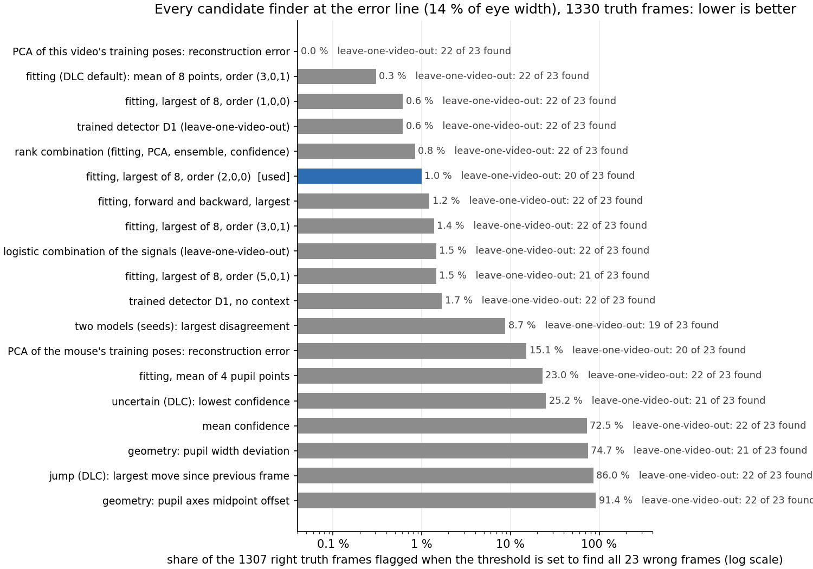
图 9-3：阈值定到刚好找全 23 帧错帧时，各族信号误标的对帧比例，对数刻度，越左越好。短横线是同族其他形式的范围；红、蓝是本页采用的两种，PCA 不误标所以只有标记。Figure 9-3:Share of right truth frames each family of signals flags when its threshold just finds all 23 wrong frames, log scale, further left is better. Whiskers span the other forms of a family; red and blue are the two used here, the PCA flags none and so has only a marker.
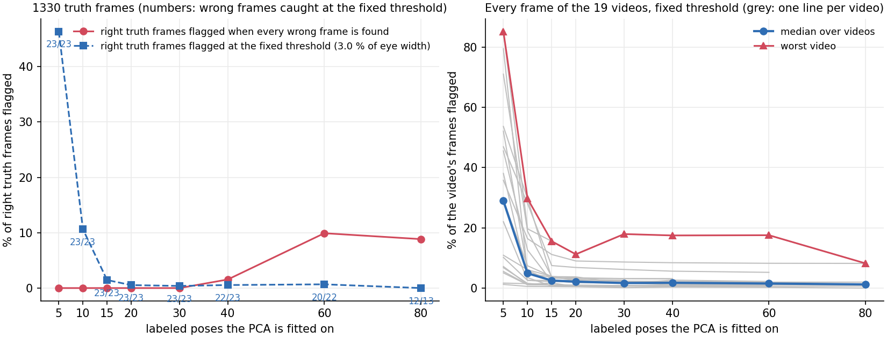
图 9-4：两种 PCA 阈值在最坏的视频上各标出多少帧，横轴是 PCA 用几帧标注拟合。红：所有视频同一个数，分数超过眼宽的 3% 就标出。蓝：每个视频先取自己全部帧分数的中位数，超过它的 3.9 倍才标出。眼宽只抵消相机远近，中位数还抵消标注多少带来的分数大小差异。两者找到的错帧数一样（蓝色数字）。Figure 9-4:Share of frames two PCA thresholds flag in the worst video, against the number of labels the PCA is fitted on. Red: one number for every video, flagged when the score exceeds 3% of the eye width. Blue: each video takes the median score of all its frames and flags above 3.9 times it. The eye width only cancels camera distance; the median also cancels the change in score size with the number of labels. Both find the same wrong frames (blue numbers).
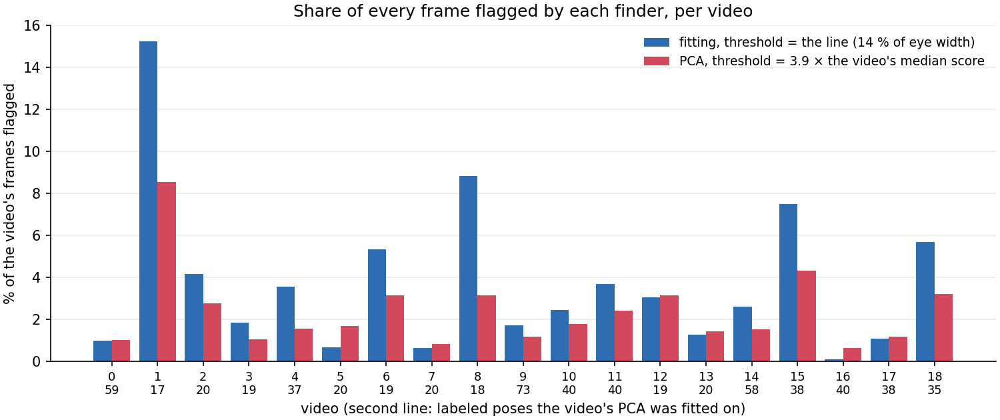
图 9-5：按定好的阈值，两种信号在每段视频上标出的帧的比例；两者都找全了每个视频的错帧。横轴第二行是该视频 PCA 用的标注数。Figure 9-5:Share of frames each signal flags per video at its threshold; both find every wrong truth frame of every video. Second line of the axis: labels the video's PCA used.
Check by eye: when the two signals disagree, which is right? On the whole videos the two signals flag different frames. The frames one flags and the other does not have no labels, so only the eye can say whether they are real errors or false alarms.
帧Frames
两组：只有 PCA 标出的、只有 fitting 标出的；每个视频每组随机抽最多 4 帧，共 117 帧。Two groups: flagged by the PCA only, flagged by fitting only; up to 4 frames per video and group drawn at random, 117 in all.
判法How judged
盲判：每帧只给原帧和模型的 8 个点，不显示是哪个信号标的。三个选项：有一个点真错了 / 都对 / 看不清。Blind: each frame shown as the raw frame and the model's 8 points, without saying which signal flagged it. Three choices: a point is really wrong / all points fine / cannot tell.
什么算错What counts as wrong
有一个点离开了它该在的位置，偏差明显超出标注本身的噪声；在噪声范围内的偏差不算错。A point away from where it belongs by clearly more than the noise of the labels themselves; a deviation within that noise is not wrong.
Result: of the 51 frames flagged by the PCA only, 33 are really wrong and 13 fine; of the 66 flagged by fitting only, 3 are wrong and 56 fine. That is, most frames the PCA alone flags are errors fitting missed; most frames fitting alone flags are not errors.
Conclusion on finding:fitting and the PCA both find every wrong truth frame; on the whole videos most frames the PCA alone flags are errors fitting missed, and most frames fitting alone flags are not errors.
Which signals are good (Figure 9-3): of the signals that need no training and no combination, fitting and the PCA flag only a dozen right frames when finding all 23 wrong ones; the others flag hundreds.
How each is set, and what it gives
Fitting: largest of the 8 points, which measures how far one point strayed in eye widths, so the threshold is the line of 9.1, 14% of the eye width. All 23 found, 28 of the 1307 right frames flagged; 3.8% of all frames flagged on the whole videos (Figure 9-5).
PCA: the size of its score depends on the number of training labels, a fixed share will not do, so the threshold is 3.9 × the video's median (Figure 9-4). All 23 found, 14 right frames flagged; every held-out video finds all of them; 2.4% of all frames flagged.
The two compared
Frames they disagree on (Figure 9-6): of 51 flagged by the PCA alone 33 are really wrong; of 66 flagged by fitting alone 3 are wrong. Frames flagged by both were not checked separately.
What each needs: the PCA needs the video's own training labels, and its background settles after 20 of them; a normal pose absent from the training labels is flagged wholesale, as the narrowed-eye frames of video 18 are, and only the median-multiple threshold brings that down. Fitting needs no labels; the frames it alone flags are mostly not errors.
The record of every comparison is in results/finder_comparison/.
9.3 修复和验收错帧：热图方法表现好9.3 Repairing and checking wrong frames: the heatmap method performs well
Repair: in a flagged frame not judged closed, every pupil point whose deviation exceeds the line is replaced by the second peak of that point's heatmap (the peak's cell times the stride, plus the point's median offset between regressed coordinate and first-peak cell). The model outputs a heatmap for every point; the first peak is the position it reports, and when a point is thrown the second peak is often at the right place. In a frame flagged by the PCA the pupil point with the largest residual is replaced: the residual spreads over all 8 points, picking points over the threshold repairs nothing, and of four rules tried on four videos replacing the single largest repaired the most and did as well as fitting on the truth frames; in a frame flagged by either finder the union of both candidate sets is replaced.
Check: after the replacement something has to judge whether the new position looks like a pupil point: pass = repaired, fail = nothing changed, the frame stays flagged. No frame is deleted; frames that cannot be repaired stay flagged, and leaving them out is a decision for whoever uses the data. There is only this one repair; the frames fitting flags and the frames the PCA flags each go through it and are counted separately, and what is compared is which check suits.
Acceptance tests compared (seven; (c) is defined only for the frames fitting flags):
(a) human-label range: twelve scale-free quantities of the four pupil points in the frame's own eye frame (position along the corners, position inside the eyelid band, ratio to the other three points) must all lie in the range spanned by the 1330 human labels. The range is widened on each side by 42% of its width, the smallest margin at which the range of any 18 videos contains all labels of the 19th. The frame is first checked as it is and left alone if already plausible.
(b) geometry rule: the same quantities with hand-set bands: video median ± 5 MAD, inside the corners and the eyelid band, correct left/right and top/bottom order.
(c) the same fitting score: the replaced point's distance to the same prediction falls below the line.
(d) second-peak confidence at least 0.238.
(e) jump: displacement of the replaced point to the previous and next frame at most 0.485 eye widths.
(f) label range without margin and without the plausibility check first.
(g) label range without margin, with the check first.
The numbers in (d) and (e) were chosen on the 37 candidate repairs to maximise "right repairs accepted" minus "wrong repairs accepted".
Why the second peak. For each point the model outputs not a coordinate but a heatmap: the image in cells of 8 px, one score per cell for how likely the point is there; the reported coordinate is the highest cell plus an offset inside the cell that the network outputs as well, so it is precise to the pixel rather than to 8 px, and the reported confidence is that highest score. A thrown point is a frame in which the highest cell landed elsewhere, on a corner, the fur or the image border, while the pupil edge usually still holds a local high cell: the second peak. How the second peak is taken is our rule: among the local maxima of the heatmap at least 3 cells away from the highest cell, the one with the highest score; the 3 cells are an exclusion radius we set, so that a cell on the slope of the highest peak is not taken as the second peak. The repair moves the thrown point to the second peak, and the check then decides whether that place looks like a pupil point. The second peak is known only as a cell, the network's offset holds only for the highest cell, so a repaired coordinate is precise to the cell, within half a cell, which does not matter for a right-or-wrong decision at the scale of tens of px. Figure 9-7 shows three frames the check by eye judged repaired correctly: the two peaks score almost the same, 0.27 against 0.25, 0.21 against 0.21, 0.42 against 0.38, so the model cannot tell which one is right and the confidence cannot replace the check.
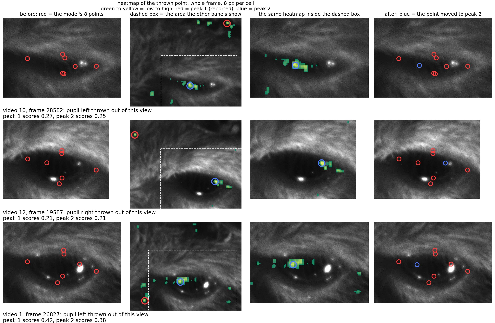
图 9-7：三帧修复的实例。从左到右：修复前（红 = 模型的点，被甩的点在视野外）；该点的热图画在整帧上，红圈 = 峰 1，蓝圈 = 峰 2，虚线框 = 第三格放大的范围；虚线框放大，峰 2 在瞳孔边缘上；修复后（蓝 = 挪到峰 2 的点）。Figure 9-7:Three repaired frames. Left to right: before (red = the model's points, the thrown point outside the view); the point's heatmap over the whole frame, red ring = peak 1, blue ring = peak 2, dashed box = the area the third panel enlarges; the box enlarged, peak 2 on the pupil edge; after (blue = the point moved to peak 2).
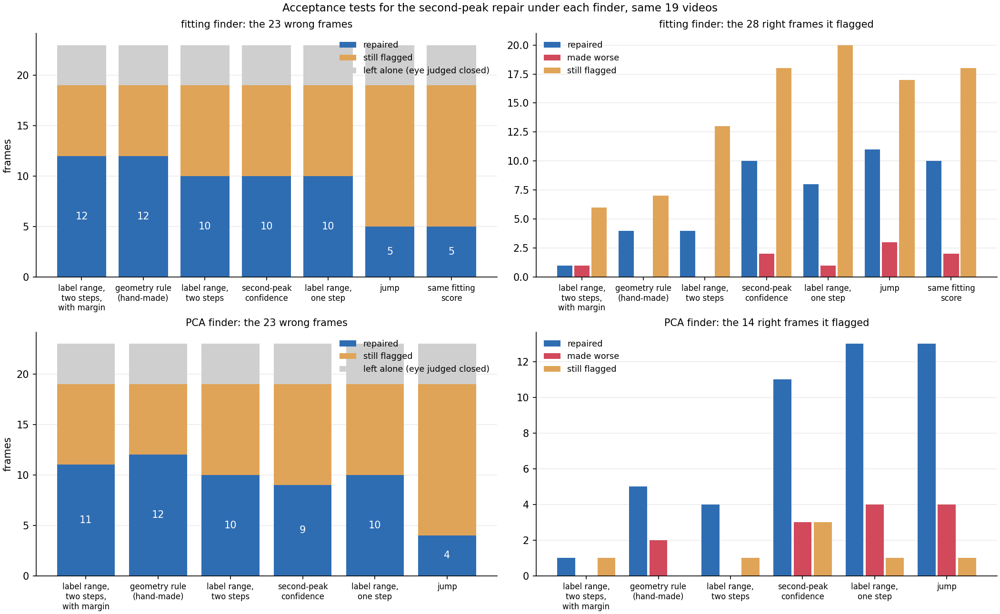
图 9-8：（只修复 pupil 版本）验收标准的比较，(a)–(g) 对应上文；上排 fitting 找出的帧，下排 PCA 找出的帧。左：23 帧错帧里修好的（蓝）、仍标出的（橙）、判为闭眼未动的（灰）。右：被标出的对帧里被修的（蓝，其中修坏的为红）、仍标出的（橙）、两步验收判为本来合理而不动的（灰），三类加起来等于被标出的对帧数。Figure 9-8:(pupil points only) The acceptance tests, (a)–(g) as in the text; top row on the frames fitting flags, bottom row on the frames the PCA flags. Left: of the 23 wrong frames, repaired (blue), still flagged (orange), left alone as closed-eye (grey). Right: of the flagged right frames, repaired (blue, of which made worse in red), still flagged (orange), judged plausible as they are by a two-step test and left alone (grey); the three add up to the flagged right frames.
Another finder, the same repair and check. Fitting, the PCA and either of the two were each run on the 19 videos (Figure 9-9). On the truth frames the three are nearly the same: all 23 wrong frames found, 12, 11 and 12 repaired, 1, 0 and 1 right frames made worse. On the whole videos the PCA flags 2.4% of the frames and repairs 0.72%, fitting flags 3.8% and repairs 0.78%, the union flags 4.2% and repairs 0.80%. The extra frames the union flags are almost all beyond repair: for the errors the PCA alone finds the second peak fails the check, so they stay flagged and unrepaired. The gain in finding does not turn into a gain in repair; these frames need another repair.
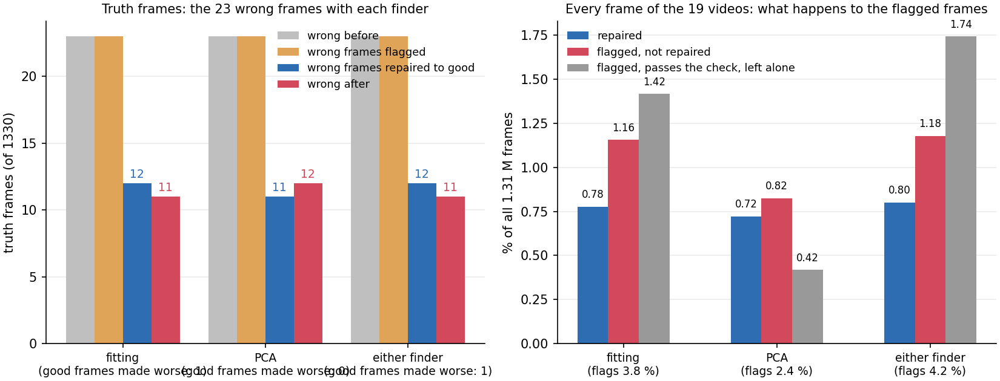
图 9-9：（只修复 pupil 版本）三种找法下的修复，验收都是人工标注范围。左：23 帧错帧里被标出、修好、修后仍错的；右：整段视频上修好、标出未修、标出但本来合理的比例。Figure 9-9:(pupil points only) The repair with each finder, acceptance = the human-label range. Left: of the 23 wrong frames, flagged, repaired, still wrong; right: on whole videos, repaired, flagged and not repaired, flagged but plausible.
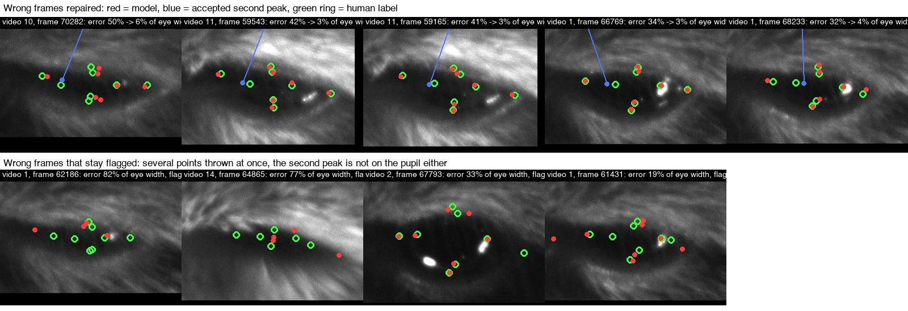
图 9-10：上排：修好的错帧，红 = 模型，蓝 = 接受的第二峰，绿圈 = 人工标注。下排：没修好、仍标出的错帧。Figure 9-10:Top: repaired wrong frames; red = model, blue = accepted second peak, green ring = human label. Bottom: wrong frames that stay flagged.
Check by eye: is the repair right on the whole videos? There are only 1330 truth frames; nearly all frames the repair touches have no labels. Whether the point put in sits where it belongs, and whether a still-flagged frame is really wrong, only the eye can say.
帧Frames
两组：修复帧、仍标出帧；每个视频每组最多 10 帧，每段连续被动的帧只抽一帧，共 358 帧，判了 355 帧。找帧用 fitting，验收用人工标注范围。Two groups: repaired frames, still-flagged frames; up to 10 per video and group, one per run of touched frames, 358 in all, 355 judged. Finder fitting, acceptance the human-label range.
判法How judged
修复帧三张图：原帧、修复前（红 = 模型的 8 个点）、修复后（蓝 = 换上去的点）；问蓝点是不是在瞳孔该在的位置，四个选项：是 / 近了但还不对 / 否 / 看不清。仍标出帧两张图：原帧、模型的点；问红点是不是真的错了，三个选项：是 / 否 / 看不清。Repaired frame, three panels: the frame, before (red = the model's 8 points), after (blue = the point put in); is the blue point where the pupil point belongs: yes / better but still not right / no / cannot tell. Still-flagged frame, two panels: the frame, the model's points; is a red point really wrong: yes / no / cannot tell.
什么算对What counts as right
蓝点落在瞳孔边缘上该点的位置才算对；比原来近了但不在瞳孔上算"近了但还不对"。The blue point counts as right only on the pupil edge where that point belongs; closer than before but not on the pupil is "better but still not right".
图 9-11：（只修复 pupil 版本）整段视频修复的人眼核对结果。左：修复帧；右：仍标出帧。Figure 9-11:(pupil points only) Verdicts by eye on the repair over the whole videos. Left: repaired frames; right: still-flagged frames.
Result: of 174 repaired frames the point put in is on the pupil where it belongs in 149, closer but still not right in 19 (mostly videos 14, 17, 18), not better in 4; of 184 still-flagged frames 101 really have a wrong point, 69 are false alarms, 14 cannot be told. None of these frames took part in setting the line, the threshold or the label range. Figure 9-12 shows examples.
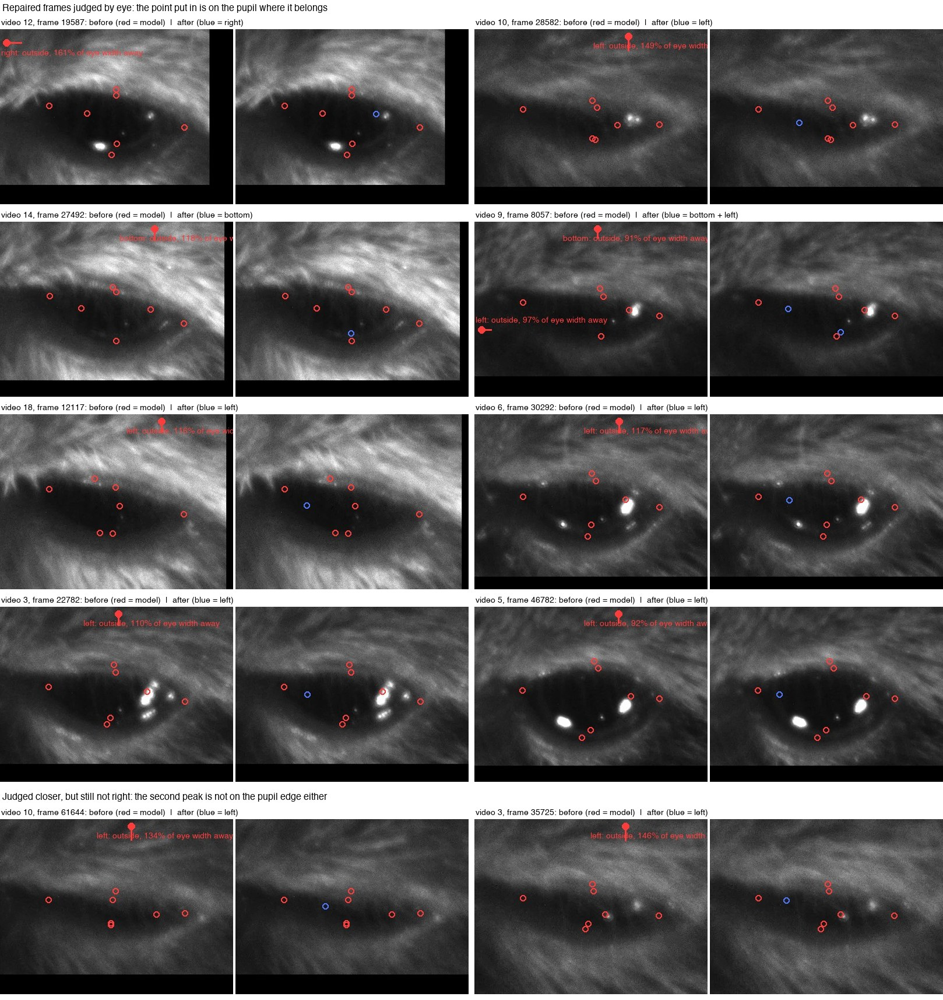
图 9-12：（只修复 pupil 版本）人眼核对里的修复帧，修复前（红 = 模型）和修复后（蓝 = 换上去的点）并排。上面八帧判为换上去的点在瞳孔该在的位置，每个视频一帧；下面两帧判为近了但还不对，第二峰也不在瞳孔边缘上。被甩到视野外的点在边上用红色实心点标出。Figure 9-12:(pupil points only) Repaired frames from the check by eye, before (red = model) and after (blue = the point put in) side by side. The eight frames above were judged to have the point on the pupil where it belongs, one per video; the two below were judged closer but still not right, the second peak not on the pupil edge either. A point thrown outside the view is marked by a filled red dot at the border.
Conclusion on repair and check (pupil points only):the human-label range and the hand-made geometry rule are jointly best, 12 frames repaired each; the finder's own score is the worst check.
The 23 wrong frames, flagged by fitting: the human-label range repairs 12, leaves 7 flagged and 4 untouched as closed-eye; the geometry rule the same; confidence 10, jump 5, the same fitting score 5. Flagged by the PCA: label range 11, geometry rule 12, confidence 9, jump 4.
The flagged right frames, 28 by fitting: the human-label range repairs 1 (1 made worse) and leaves 6 flagged; the geometry rule repairs 4 (none worse), 7 flagged; the fitting score repairs 10 (2 worse), 18 flagged. 14 by the PCA: label range repairs 1 (none worse), geometry rule 5 (2 worse), confidence 11 (3 worse), jump 13 (4 worse). No test pushes a right frame over the line.
On both routes the human-label range and the hand-made geometry rule are jointly best; the label range has no hand-set number and makes fewer frames worse, so it is the one used; the geometry rule is kept as the comparison.
Why fitting cannot double as the check: inside a run of wrong frames the prediction follows the wrong trajectory and the correct second peak is refused; a right frame flagged because the eye moved fast has a lagging prediction and a wrong second peak near it is accepted. Finding asks whether the frame disagrees with the past; the check needs evidence from the frame itself.
The 7 frames still flagged are frames in which several points were thrown at once and the second peak is not on the pupil either (videos 1, 2, 14, and one frame of video 8); the 4 untouched frames are those the eyelid rule calls closed (videos 10, 11), in two of which the model's eyelid points are themselves wrong.
Whole videos: the human-label range repairs 0.8% and leaves 1.2% of the frames flagged, most in videos 1 and 8; by eye (Figure 9-11) about six of seven repairs are right and about three of five still-flagged frames are real errors.
With the PCA or the union as finder the number repaired does not change (Figure 9-9): the errors the PCA adds cannot be repaired by the second peak and are the next thing to repair.
拓展到全部 8 个点：眼睑和眼角也修，按最小子集替换Extension to all 8 points: eyelids and corners repaired too, the smallest subset replaced
The repair above replaces pupil points only: when the point over the line in a flagged frame is an eyelid or a corner, the frame stays flagged untouched, and most still-flagged frames are exactly those. So the repair was extended to all 8 points, the check was given a way to judge eyelids and corners, and after the check by eye the replacement was changed to the smallest subset of points. This version is the repair every later section uses and the starting point of the loop of 9.4.
基本信息Basic information
数据Data
19 个视频，找帧用 fitting 和 PCA 任一（9.2），真值帧 1330 帧（错帧 23 帧），和上面相同。19 videos, finder either fitting or PCA (9.2), the 1330 truth frames (23 wrong), as above.
可换的点Points that may be replaced
之前：瞳孔上、下、左、右；现在：全部 8 个点。候选点 = fitting 超线的每个点，PCA 残差最大的那个点（不管是哪个点），两者的并集。Before: pupil top, bottom, left, right; now: all 8. Candidate points = every point over the line (fitting), the point with the largest residual whichever it is (PCA), the union of the two.
验收Check
两部分都要过：瞳孔四点的 12 个量在人工标注范围内（上面的 (a)，余量 0.42），加上眼睑和眼角的 8 个轮廓量在各自的人工标注范围内（余量 0.23）。Both parts must pass: the 12 pupil quantities inside the human-label range (test (a) above, margin 0.42) and 8 outline quantities of the eyelids and corners inside their own human-label range (margin 0.23).
替换方式How points are replaced
先试整组换（候选点一起换，通过就收，不通过整帧退回），再改为最小子集（能让帧通过的最小的候选点子集，先试轮廓点、后试瞳孔点，先单点、后两点）。First the whole replacement (all candidates at once, accepted or the whole frame reverted), then the smallest subset (the smallest subset of candidates that makes the frame pass; outline points tried first, pupil points after, singles before pairs).
人眼核对Check by eye
整组换版本：每个视频 5 帧换过眼睑或眼角的修复帧，共 90 帧 139 个换上去的点，每个点一个判断（对 / 近了但还不对 / 否 / 本来就对不该动 / 看不清）。最小子集版本没有重做人眼核对。Whole-replacement version: 5 repaired frames per video with an eyelid or corner replaced, 90 frames, 139 points put in, one verdict per point (right / closer but still not right / no / was right before and should not have moved / cannot tell). The smallest-subset version was not checked by eye again.
脚本和结果Scripts and results
flag_and_repair.py --finder either --accept labelregion --points all --replace smallest, outline_region.py, outline_review.py; results/flag_and_repair/videoNN_either_labelregion_all_smallest/, all_videos/full_repair.csv, outline_review/, results/acceptance_thresholds/label_region_outline.csv
拓展后的算法（每一步都写到可以照着算）The extended algorithm (each step written so that it can be recomputed)
Candidate points. In a flagged frame not judged closed: flagged by fitting, candidates = every point with deviation ; flagged by the PCA, candidate = the one point with the largest residual (the residual spreads over all 8 points, picking points over a threshold repairs nothing; of four rules tried on four videos, replacing the single largest repaired the most); flagged by both, the union. Any of the 8 points can be a candidate.
Second peak. A candidate is replaced by the second peak of its heatmap: the peak's cell times the stride of 8 px, plus the point's median offset between regressed coordinate and first-peak cell over the whole video. Second peak = among the local maxima of the heatmap at least 3 cells from the highest cell, the one with the highest score.
Check, pupil part. The frame's own eye frame is built from the corners N (nasal) and T (temporal): u = T − N, Wf = ‖u‖, e = u/Wf, n = e rotated 90° counter-clockwise, origin C = (N + T)/2; the eye coordinates of any point p areWith the four pupil points (atop, btop), (abot, bbot), (aleft, bleft), (aright, bright), the eyelid points' coordinates along nblid,top and blid,bot, pupil height h = |bbot − btop|, pupil width w = |aright − aleft|, the midline of top and bottom mtb = (atop + abot)/2 and of left and right mlr = (bleft + bright)/2, each pupil point k gives three quantities, 12 in all: its position along the corners ak; its position inside the eyelid bandand its ratio to the other three pointswhere s, s′ are the video's left-right and top-bottom signs (the signs of the medians of aright − aleft and bbot − btop over the whole-video prediction), so that the ratios are positive on normal frames. Each quantity's range = minimum to maximum over the 1330 human labels, widened on each side by 0.42 of its width; 0.42 is the smallest margin at which the range of any 18 videos contains all labels of the 19th (ranges in label_region_margin.csv, for example aleft −0.65 to 0.20, ρtop 0.02 to 1.00). The part passes when all 12 are inside.
Check, outline part. References are medians of the plateau model's whole-video prediction (no labels): median eye width Wm, median angle of the corner line θm, median corner midpoint Cm, with u = T − N. Three corner quantities:Five eyelid quantities in the frame's eye frame: the components of the upper eyelid point Et and the lower eyelid point Eb along e and along n (4 quantities), and the opening = the difference of the two eyelid points' components along n. Ranges again from the minimum and maximum over the 1330 labels, each part with its own margin by the same construction, 0.23 for the outline (for example eye-width ratio 0.56 to 1.22, angle deviation −8.3° to 10.2°, opening 0.013 to 0.76; values in label_region_outline.csv). All 8 are scale-free and carry over to another camera.
The frame as it is first. A frame is first checked unchanged; if both parts pass it is judged plausible and left alone; only otherwise are points replaced. A replaced corner moves the eye frame, so the 12 pupil quantities are recomputed and re-checked in the new frame.
Smallest subset. With the candidate set S, its subsets are tried in order: single outline points, pairs of outline points, single pupil points, pairs containing a pupil point, and so on; each subset puts in the second peak of its points and keeps the rest as they are; the first subset that passes both parts is the repair; if none passes, the frame is reverted and stays flagged.
Each frame's status is one of: not flagged, plausible as it is (flagged, check passed, untouched), repaired, flagged and not repaired, closed. Whole videos are counted in these five classes; on the truth frames the error before and after says repaired to good or made worse.
结果：只换瞳孔点和换全部 8 个点的对比Results: pupil points only against all 8 points
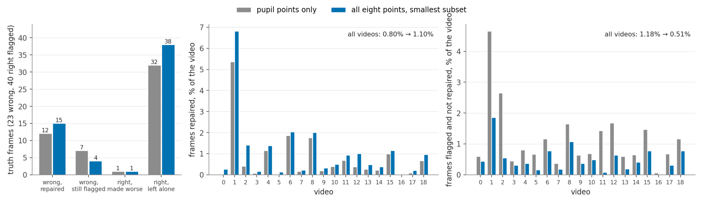
图 9-13：只换瞳孔点（灰）和换全部 8 个点、最小子集（蓝）的对比。左：真值帧，23 帧错帧里修好的和仍标出的，被标出的 40 帧对帧里修坏的和判为本来合理不动的。中：19 个视频各自修复的帧占比。右：各自标出未修的帧占比。换全部 8 个点后每个视频修好的更多、留下未修的更少，视频 1 标出未修的帧从 4.7% 降到 1.9%。Figure 9-13:Pupil points only (grey) against all eight points with the smallest subset (blue). Left: truth frames, of the 23 wrong frames the repaired and the still flagged, of the 40 flagged right frames the made worse and the left alone as plausible. Middle: frames repaired per video, % of the video. Right: frames flagged and not repaired per video. With all eight points every video repairs more and leaves fewer unrepaired; on video 1 the still-flagged share falls from 4.7% to 1.9%.
表 9-3-1：只修瞳孔点、修全部 8 个点整组换、修全部 8 个点最小子集换Table 9-3-1: pupil points only, all eight points with whole replacement, all eight points with the smallest subset
只修瞳孔点Pupil points only
8 个点，整组换All 8, whole replacement
8 个点，最小子集（采用）All 8, smallest subset (used)
23 帧错帧：修好 / 仍标出 / 判为闭眼未动23 wrong truth frames: repaired / still flagged / left as closed-eye
12 / 7 / 4
12 / 7 / 4
15 / 4 / 4
其中最差点是眼睑的 4 帧：修好of them the 4 whose worst point is an eyelid: repaired
1
1
3
其中最差点是眼角的 3 帧：修好of them the 3 whose worst point is a corner: repaired
0
0
1
被标出的 40 帧对帧：修了 / 修坏 / 判为本来合理不动40 right truth frames flagged: repaired / made worse / left as plausible
2 / 1 / 32
2 / 1 / 38
2 / 1 / 38
整段视频（% 帧）：修复 / 仍标出 / 本来合理不动Whole videos (% of frames): repaired / still flagged / left as plausible
All 23 wrong frames are flagged: 15 repaired (error back under the line), 4 still flagged, 4 left alone as closed-eye. By the worst point: of the 16 frames whose worst point is a pupil point 11 are repaired, of the 4 with an eyelid worst 3, of the 3 with a corner worst 1. The 4 still flagged are frames in which several points were thrown at once and the second peak is not where the point belongs either: video 1 frames 61431 and 62186, video 2 frame 67793, video 14 frame 64865; the 4 closed-eye frames are in videos 10 and 11, in two of which the model's eyelid points are themselves wrong. Of the 40 flagged right frames 38 pass the check as they are and are left alone, 2 are repaired, one of them pushed over the line (made worse).
表 9-3-2：19 个视频整段的帧状态（% 帧）Table 9-3-2: frame statuses over the whole of the 19 videos (% of frames)
4.2% of all frames are flagged by either finder: 1.10% repaired, 0.51% flagged and not repaired, 2.11% plausible as they are, 0.59% closed. Videos 1 and 8 have the most (flagged 15.3% and 8.9%, repaired 6.8% and 2.0%). Points put in: 15,159 in all, 11,571 pupil points, 1295 eyelid, 2293 corner; among the pupil points mostly pupil_left. Of the frames flagged and not repaired about two in five are false alarms (check by eye, below).
人眼核对换过眼睑或眼角的修复帧Check by eye of the eyelid and corner replacements
表 9-3-3：人眼核对换过眼睑或眼角的修复帧（整组换版本，139 个换上去的点）Table 9-3-3: check by eye of repaired frames with an eyelid or corner replaced (whole-replacement version, 139 points put in)
换上去的点Point put in
对Right
近了但还不对Closer, not right
本来就对，不该动Was right, moved for nothing
看不清Cannot tell
合计Total
眼睑eyelid
39
2
0
2
43
眼角corner
31
2
2
18
53
同一帧里一起换的瞳孔点pupil points replaced in the same frames
18
4
10
11
43
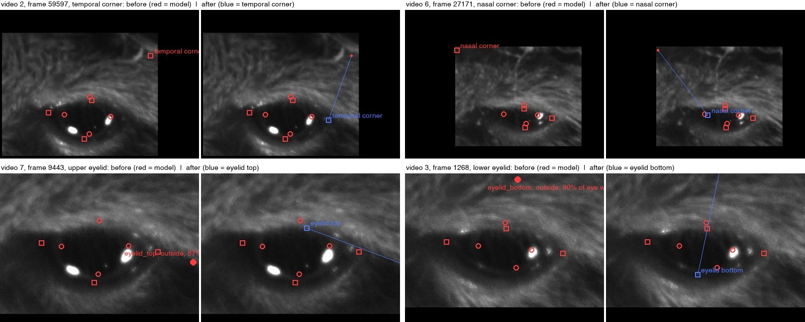
图 9-14：换过眼角或眼睑的修复帧四例（人眼核对判为对），修复前（红 = 模型，方 = 眼睑或眼角点，圆 = 瞳孔点）和修复后（蓝 = 换上去的点，细线从原位置指向新位置）并排：颞侧眼角甩到毛发上、鼻侧眼角甩出视野、上眼睑甩出视野、下眼睑甩出视野。Figure 9-14:Four repaired frames with a corner or eyelid point replaced (judged right by eye), before (red = model, squares = eyelid and corner points, circles = pupil points) and after (blue = the point put in, a thin line from the old to the new position) side by side: a temporal corner thrown onto the fur, a nasal corner thrown out of the view, an upper eyelid out of the view, a lower eyelid out of the view.
Conclusion on the extension:with eyelids and corners repaired too and the smallest subset replaced, 15 of the 23 wrong frames are repaired (12 with pupil points only), the rest stay flagged, nothing is deleted.
Frames with a wrong eyelid or corner are repaired; frames flagged because of an outline point but plausible as they are no longer wait for a person; nothing more is made worse.
Points are replaced by the smallest subset, not all at once: the whole replacement moves right pupil points of the same frame for nothing, the smallest subset keeps them and repairs more frames, never fewer.
This version is the repair every later section uses and the starting point of the loop of 9.4. Not done yet: the check by eye on the smallest-subset run.
9.4 把这套纠错修复做成 loop：没被标出的帧和修复过的帧进入训练集重新训练模型，结果会变好9.4 Closing the loop: the unflagged frames and the repaired frames retrain the model, and the model gets better
The question: after 9.2 finds the wrong frames and 9.3 repairs part of them, the unflagged frames (neither finder flagged them, no point touched) and the repaired frames have trustworthy coordinates nobody has looked at. Using them as new training labels together with the existing human labels, retraining the model with the same recipe and predicting the whole video again is a loop. The question is whether the model that comes out has fewer wrong frames than the starting model (the plateau model).
How: starting model → find, repair, check (9.2, 9.3) → the unflagged and the repaired frames enter the training set as labels → retrain → predict the whole video again → find and repair again, next turn. The three experiments differ only in which frames enter the training set:
进入训练集的帧Frames added to the training set
圈数Turns
视频Videos
实验一Experiment 1
没被标出、没改动的帧，每 30 帧取一帧unflagged frames unchanged, every 30th
1（视频 1、8 另试了第二圈） (a second turn tried on videos 1, 8)
0 1 2 4 6 7 8 12 15 18
实验二Experiment 2
只用修复过的帧，帧数不超过实验一repaired frames only, count capped at experiment 1's
1
1 8 15 6
实验三Experiment 3
没被标出的帧每 30 帧取一帧（同实验一），加全部修复过的帧，不设上限the unflagged frames every 30th (as in experiment 1) plus all repaired frames, no cap
转到饱和：标出帧不再比上一圈少 10%，或盲测错帧不再减少。目前只跑了第一圈（视频 1、8、15；视频 6 训练完、未预测），后面的圈还没跑until saturation: flagged frames not 10% below the previous turn, or wrong blind frames not fewer. So far only turn 1 (videos 1, 8, 15; video 6 trained, not yet predicted); later turns not run yet
1 8 15 6
共用的配置和公式（三个实验相同，下面不再重复）Shared configuration and formulas (the same for the three experiments, not repeated below)
起点模型Starting model
每个视频平台点的模型（第 5 步），整段视频的预测和 9.2、9.3 用的是同一份；9.3 修全部 8 个点、最小子集替换的那次运行就是 loop 的第 0 圈。人工训练帧：视频 1 共 120 帧（视频 0 的 100 帧加本视频 20 帧），视频 8 共 420 帧（之前视频 400 帧加本视频 20 帧），视频 15 共 700 帧（660 加 40），视频 6 共 400 帧（380 加 20）；每个视频另有 20 帧验证帧。The plateau model of each video (step 5); its whole-video prediction is the one used in 9.2 and 9.3; the all-eight-points, smallest-subset run of 9.3 is turn 0 of the loop. Human training frames: video 1 120 (100 of video 0 plus 20 of itself), video 8 420 (400 of earlier videos plus 20), video 15 700 (660 plus 40), video 6 400 (380 plus 20); 20 validation frames each.
新模型The new model
和起点模型同一套配方（ResNet-50，ImageNet 预训练权重，batch size 2，种子 42），训练集 = 起点模型的人工帧 + 进入训练集的帧，验证集 = 起点模型的 20 帧验证帧，迭代次数和起点模型相同（实验三：轮次取实验一在该视频的轮次，迭代次数随帧数增加）；最后一轮的存档预测整段视频。实验三的每一圈都从 ImageNet 权重重新训练，不在上一圈的模型上续训。Same recipe as the starting model (ResNet-50, ImageNet-pretrained weights, batch size 2, seed 42); training set = the starting model's human frames + the frames added to the training set; validation = the starting model's 20 validation frames; the same number of iterations as the starting model (experiment 3: the epochs of experiment 1 on that video, so the iterations grow with the frame count); the last epoch's snapshot predicts the whole video. Every turn of experiment 3 trains afresh from the ImageNet weights, not on top of the previous turn's model.
真值帧Truth frames
每个视频冻结的 50 帧测试帧和 20 帧验证帧（视频最后 4 分钟），任何模型都没有用它们训练；进入训练集的帧避开它们前后各 60 帧。Each video's frozen 50 test and 20 validation frames (last 4 minutes of the video), never trained on by any model; the frames added to the training set stay 60 frames away from them.
盲测帧Blind frames
每个视频 24 帧，从整段视频里按起点模型和实验一模型的标出结果分四层抽出（A：起点模型标出、实验一没标出；B：都标出；C：都没标出；D：只有实验一标出），事后由标注者只看图片标注，看不到帧号和任何模型的点。另外每个视频 10 帧补充帧：两个实验的模型标出结果不同的帧，只在实验二从未训练的留出时段里抽，四个视频共 40 帧，同样事后标注。实验三的每一圈都把全部盲测帧（50 帧已抽帧加 10 帧补充帧）前后各 60 帧排除在进入训练集的帧之外，所以 34 帧盲测帧对每一圈都有效。24 frames per video, drawn from the whole video in four strata by the flags of the starting model and of the experiment-1 model (A: starting model flagged, experiment 1 not; B: both; C: neither; D: experiment 1 only), labeled afterwards by a person who saw only the image, no frame number and no model's points. In addition 10 supplementary frames per video: frames on which the two experiments' models disagree, drawn only in the held-out time blocks experiment 2 never trained on, 40 frames over the four videos, labeled the same way afterwards. Every turn of experiment 3 keeps all blind frames (the 50 drawn plus the 10 supplementary) and 60 frames on each side of them out of the frames added to the training set, so the 34 blind frames remain valid for every turn.
指标Metrics
帧误差 = 预测点和人工点的 RMSE 除以眼宽（9.1 的定义，线在 14%）；整段视频被两种信号任一标出的帧占比（9.2 的两种信号，PCA 阈值按该模型自己的中位数定）；盲测帧上每个模型和起点模型的逐帧配对比较。Frame error = RMSE between predicted and human points divided by the eye width (definition of 9.1, line at 14%); share of the whole video flagged by either finder (the two finders of 9.2, PCA threshold from the model's own median); on the blind frames a paired per-frame comparison of every model against the starting model.
How it is judged: three things, all frames the models never trained on.
Truth frames: 70 per video, error over 14% of the eye width = wrong frame.
Flagged share: the share of the whole video flagged by the two finders.
Blind frames: 34 per video, labeled after the experiments by a person who saw only the image. 24 drawn in four strata by which of the starting and the loop model flags them, 10 drawn among frames on which the two experiments disagree. They are concentrated on hard frames, so their wrong share is higher than the truth frames'.
Per-point rule of an unflagged frame: a point the repair replaced is kept; any other point is kept when (likelihood), (fitting deviation) and (PCA residual), otherwise left blank; a frame is used when its four pupil points and at least 6 points remain. A repaired frame keeps all 8 points at their repaired coordinates, a point not replaced is blank only when its likelihood is under 0.01.
Epochs: the starting model trained 120 epochs; experiments 1 and 2 match the iteration count, rounded to a multiple of max(1, ⌊E/12⌋):with human frames and frames added to the training set.
Truth-frame error: , with the points labeled in that frame, h the human points, W the eye width; wrong = e > 0.14.
Flagged share: the two finders of 9.2 recomputed on the new model's prediction, same PCA multiple, the median the new model's own; the share flagged by either.
Blind frames: how they are drawn (strata, k-means, seed) and the weighted estimate of the whole-video wrong share are in the details block; paired comparison: on the same frame a model counts as better or worse only when the two errors differ by more than 1% of the eye width, sign test and Wilcoxon test.
实验一：没被标出的帧进入训练集Experiment 1: the unflagged frames enter the training set
进入训练集的帧Frames added to the training set
状态为没被标出或修复的帧，每 30 帧取一帧，按共用的逐点规则留点（修复前超线的点留空，所以修复帧几乎进不来：实验一用的实际上是起点模型自己预测、没被标出的帧）。Frames with status unflagged or repaired, every 30th, points kept by the shared per-point rule (points over the line before the repair are left blank, so repaired frames almost never enter: experiment 1 in effect uses the starting model's own unflagged predictions).
视频和帧数Videos and counts
十个视频：0、1、2、4、6、7、8、12、15、18；每个视频进入训练集 368 到 2030 帧，轮次按迭代次数和起点模型相同来定（表 9-4-4、9-4-7）。Ten videos: 0, 1, 2, 4, 6, 7, 8, 12, 15, 18; 368 to 2030 frames added to the training set per video, epochs by iteration matching with the starting model (Tables 9-4-4, 9-4-7).
第二圈Second turn
视频 1、8 上用新模型的预测再取一次每 30 帧的未标出帧，再训练一次。On videos 1 and 8 the new model's prediction gave a second batch of every-30th unflagged frames and one more training.
图 9-15：实验一，每个视频起点模型（灰）对 loop 模型（橙），视频 1、8 另有第二圈（粉）：70 帧真值帧里预测错的、真值帧中位误差、整段标出率、24 帧盲测帧里预测错的（只有标注了盲测帧的四个视频）。Figure 9-15:Experiment 1, starting model (grey) against the loop model (orange) per video, with the second turn (pink) on videos 1 and 8: wrong predictions among the 70 truth frames, median truth error, flagged share of the video, wrong predictions among the 24 blind frames (the four videos with blind labels only).
表 9-4-1：实验一，十个视频，起点模型 → loop 模型Table 9-4-1: experiment 1 on ten videos, starting model → loop model
Conclusion: nine of the ten videos beat the starting model, video 0 gets worse.
Truth frames: on the four videos with wrong frames they go from 8 / 4 / 2 / 1 to 2 / 1 / 0 / 0, the other videos were at 0 already; the median error is unchanged (within 0.3%).
Flagged share: falls on nine videos, mostly below a third.
Blind frames: the wrong count falls to about a third on all four videos.
Video 0: wrong frames 0 → 5. Its starting model has only 60 human frames and is not at its plateau; the loop has to start from the plateau model.
Second turn = experiment 1 once more with experiment 1's model as the new starting point (videos 1, 8): video 1 wrong truth frames 2 → 1, wrong blind frames 4 → 1, flagged share 1.3% → 1.0%; video 8 truth and blind unchanged, flagged share 3.2% → 2.1%.
实验二：只有修复过的帧进入训练集Experiment 2: only the repaired frames enter the training set
进入训练集的帧Frames added to the training set
状态为修复的全部帧，8 个点都取修复后的坐标；帧数不超过实验一在该视频用的帧数（超过时按时间均匀抽）；留出时段 4、9、14、19（视频分 20 段）不进入训练集，补充盲测帧只从留出时段抽。All frames with status repaired, all 8 points at their repaired coordinates; count capped at experiment 1's on the video (evenly spread over time when above); the held-out blocks 4, 9, 14, 19 (of 20) never enter the training set, and the supplementary blind frames are drawn only there.
视频和帧数Videos and counts
视频 1 / 8 / 15 / 6 进入训练集 1784 / 616 / 548 / 1130 帧（只有视频 1 碰到上限），轮次 8 / 48 / 65 / 32，迭代次数和起点模型相同（表 9-4-5、9-4-7）。修复帧绝大多数是换了 pupil_left 的帧（视频 6：1107 / 1130）。Videos 1 / 8 / 15 / 6: 1784 / 616 / 548 / 1130 frames added to the training set (only video 1 hits the cap), 8 / 48 / 65 / 32 epochs, iterations equal to the starting model's (Tables 9-4-5, 9-4-7). Most repaired frames are pupil_left replacements (video 6: 1107 of 1130).
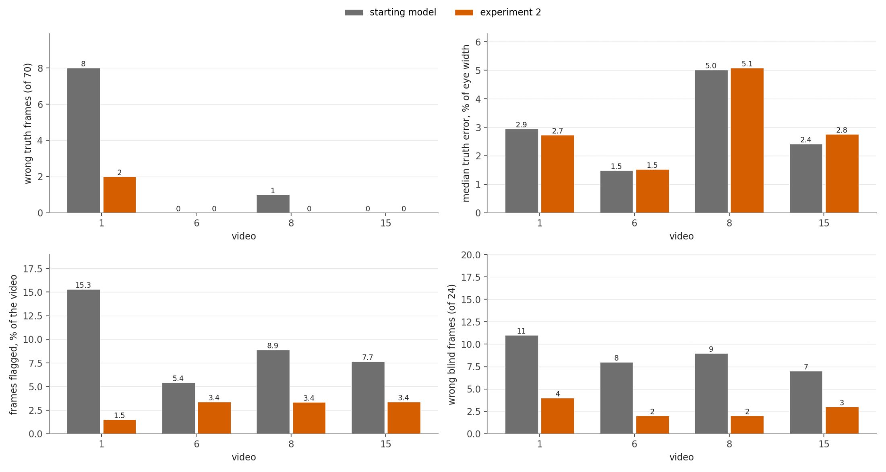
图 9-16：实验二，每个视频起点模型（灰）对 loop 模型（红）：70 帧真值帧里预测错的、真值帧中位误差、整段标出率、24 帧盲测帧里预测错的。Figure 9-16:Experiment 2, starting model (grey) against the loop model (red) per video: wrong predictions among the 70 truth frames, median truth error, flagged share of the video, wrong predictions among the 24 blind frames.
表 9-4-2：实验二，四个视频，起点模型 → loop 模型Table 9-4-2: experiment 2 on four videos, starting model → loop model
视频Video
进入训练集的帧Frames added to the training set
中位误差（% 眼宽）Median error (% eye width)
70 帧真值帧里预测错的：起点 → loop（修好，新错）Wrong predictions among the 70 truth frames: start → loop (fixed, newly wrong)
整段标出率（%）Flagged share (%)
24 帧盲测帧里预测错的Wrong predictions among the 24 blind frames
Conclusion: all four videos beat the starting model.
Truth frames: wrong frames 8 → 2 (video 1) and 1 → 0 (video 8), the others were at 0 already; the median error is unchanged (within 0.3%).
Flagged share and wrong blind frames: both to about a third.
Limit: the repaired frames are of one kind (almost all pupil_left replacements), so the repair's own small bias is learned: on video 6 three supplementary blind frames have pupil_left misplaced. That is why experiment 3 adds the unflagged frames to the training set.
实验三：两种帧一起进入训练集，转到饱和Experiment 3: both kinds enter the training set, turn after turn until saturation
进入训练集的帧Frames added to the training set
没被标出的帧每 30 帧取一帧（同实验一）加全部修复帧（同实验二），不设上限、不留出时段；避开真值帧和全部 60 帧盲测帧前后各 60 帧，所以 34 帧盲测帧对每一圈都有效。Every 30th unflagged frame (as in experiment 1) plus all repaired frames (as in experiment 2), no cap, no held-out blocks; 60 frames on each side of the truth frames and of all 60 blind frames are kept out, so the 34 blind frames stay valid for every turn.
视频和帧数Videos and counts
视频 1 / 8 / 15 / 6 第一圈进入训练集 5347 / 2508 / 2254 / 2921 帧；轮次取实验一在该视频的轮次（8 / 22 / 34 / 21），迭代次数随帧数增加，每张人工帧被看到的次数和实验一相同；每一圈都从 ImageNet 权重重新训练（表 9-4-6、9-4-7）。Videos 1 / 8 / 15 / 6: 5347 / 2508 / 2254 / 2921 frames added to the training set in turn 1; epochs = experiment 1's on the video (8 / 22 / 34 / 21), so the iterations grow with the set and every human frame is seen as often as in experiment 1; every turn trains afresh from the ImageNet weights (Tables 9-4-6, 9-4-7).
下一圈Next turn
新模型取代起点模型：用它的整段预测重新找帧（PCA 阈值用它自己的中位数），被标出和接近阈值的帧用它自己的热图算第二峰、按 9.3 修复验收，再按同样的规则选帧、同样的轮次训练下一个模型。The new model takes the place of the starting model: its whole-video prediction is flagged again (PCA threshold from its own median), the flagged and near-threshold frames get second peaks from its own heatmaps, repaired and checked as in 9.3, then the same frame rule and the same epochs train the next model.
饱和（停止）Saturation (stop)
一圈之后，标出的帧数不低于上一圈的 90%，或 34 帧盲测帧里预测错的没有减少，就算饱和、停止；圈数不是条件。After a turn, flagged frames not below 90% of the previous turn's, or wrong predictions among the 34 blind frames not fewer = saturated, stop; the number of turns is not a criterion.
进度Progress
第一圈：视频 1、8、15 完成；视频 6 训练完、尚未预测。第二圈起还没跑。Turn 1: videos 1, 8, 15 done; video 6 trained, not yet predicted. Turn 2 onward not run yet.
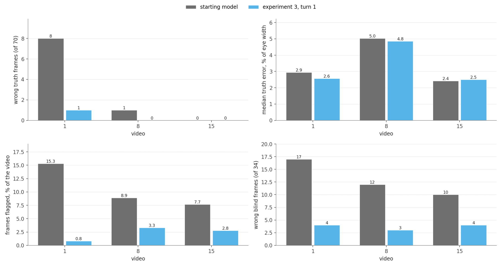
图 9-17：实验三第一圈，每个视频起点模型（灰）对 loop 模型（蓝）：70 帧真值帧里预测错的、真值帧中位误差、整段标出率、34 帧盲测帧里预测错的。Figure 9-17:Experiment 3, turn 1, starting model (grey) against the loop model (blue) per video: wrong predictions among the 70 truth frames, median truth error, flagged share of the video, wrong predictions among the 34 blind frames.
表 9-4-3：实验三每一圈的数字和饱和判定（第 0 圈 = 起点模型）Table 9-4-3: experiment 3 turn by turn and the saturation decision (turn 0 = the starting model)
视频Video
圈Turn
进入训练集的帧Frames added to the training set
标出的帧（帧数，占整段 %）Flagged frames (count, % of the video)
真值错帧（/70）Wrong truth frames (of 70)
34 帧盲测帧里预测错的Wrong predictions among the 34 blind frames
判定Decision
1
0
10987 (15.3)
8
17
1
5347
598 (0.8)
1
4
继续continue
8
0
6383 (8.9)
1
12
1
2508
2365 (3.3)
0
3
继续continue
15
0
5500 (7.7)
0
10
1
2254
1988 (2.8)
0
4
继续continue
6
0
3883 (5.4)
0
9
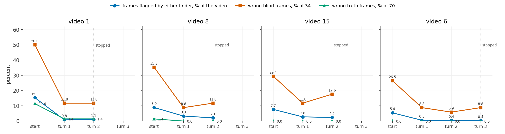
图 9-18：实验三在四个视频上一圈一圈的变化：整段视频被任一信号标出的帧占比（蓝圆）、34 帧盲测帧上的错帧占比（橙方）、70 帧真值帧上的错帧占比（绿三角）；横轴第 0 圈是起点模型。停止的那一圈用竖虚线标出。Figure 9-18:Experiment 3 turn by turn on the four videos: share of the whole video flagged by either finder (blue circles), wrong share of the 34 blind frames (orange squares), wrong share of the 70 truth frames (green triangles); turn 0 is the starting model. A dotted vertical line marks the turn at which the loop stopped.
结论：第一圈后三个视频都好于起点模型，都还没饱和。
真值帧：错帧 8 → 1、1 → 0、0 → 0；中位误差不变（相差 0.3% 以内）。
整段标出率：降到起点模型的 5% 到 37%。
盲测帧（34 帧）：预测错的从 17 / 12 / 10 降到 4 / 3 / 4。
三个视频都满足再转一圈的条件；第二圈起还没跑。
Conclusion: after turn 1 all three videos beat the starting model, and none is saturated yet.
Truth frames: wrong frames 8 → 1, 1 → 0, 0 → 0; the median error is unchanged (within 0.3%).
Flagged share: down to 5% to 37% of the starting model's.
Blind frames (34): wrong predictions from 17 / 12 / 10 down to 4 / 3 / 4.
All three videos meet the condition for another turn; turn 2 onward has not been run.
Conclusion on the loop:finding, repairing and checking made into a loop gives a retrained model with fewer wrong frames than the starting model on all four videos.
All three experiments beat the starting model: wrong truth frames 8 → 1 to 2 and 1 → 0, wrong blind frames to a third or less, the flagged share to a third or less, the median error unchanged. The repair of 9.3 does not reach this: on the same hard blind frames 15 are still wrong after the repair, 0 to 3 for the loop models.
The unflagged frames and the repaired frames each improve the model when added to the training set, and so do both together, so no ranking between them is made and both enter the training set; experiment 3 is the form for actual use (every 30th unflagged frame plus all repaired frames enter the training set, turn after turn until saturation).
The remaining wrong frames are squinting frames both finders flag and the second peak cannot repair; the loop neither learns from them nor fixes them.
The starting model has to be at its plateau: on video 0, with 60 human frames, the loop makes things worse (0 → 5 wrong).
The whole chain is automatic for a new video: every threshold comes from the video's own labels, no further labels needed.
细节（可复现）：每一步的算法、进入训练集的帧数和轮次、逐模型的真值帧表、盲测帧分层和配对比较、补充盲测帧、例子图Details (reproducible): every step of the algorithm, frames added to the training set and epochs, the per-model truth-frame table, blind-frame strata and paired comparisons, supplementary blind frames, example frames
怎么做（每一步都写到可以照着算）How it is done (each step written so that it can be recomputed)
Starting prediction. The starting model gives, for every frame , the coordinates and likelihoods of the 8 points (). Eye width over the starting model's prediction; every model of a video uses this one W (videos 1 / 8 / 15 / 6: 433 / 428 / 429 / 454 px).
Finder one, fitting. For each coordinate series of each point, frames with likelihood below 0.01 are set missing, the mean is subtracted and a second-order autoregressive model AR(2) is fitted over the whole video; is its one-step-ahead prediction (from the frames before t only). Deviation The frame is flagged when (9.2; the same number as the wrong-frame line).
Finder two, PCA. The video's own human-labeled poses (frames with all 8 points: 17 / 18 / 38 / 19 on videos 1 / 8 / 15 / 6) as 16-vectors go into a principal component analysis keeping the components that explain 99% of the variance (11 / 9 / 9 / 9). Every predicted pose is projected onto these components and reconstructed, giving ; point residual and frame scoreThe frame is flagged when (the multiple of 9.2; the starting model's threshold is 0.037 / 0.036 / 0.044 / 0.039 eye widths on the four videos). A frame flagged by either finder goes to the repair of 9.3.
Repair and check as in the all-eight-points, smallest-subset version of 9.3: the heatmap's second peak replaces the point, the human-label ranges of the pupil and of the outline accept or reject. Every frame then has one status: passed the check (unchanged), repaired, flagged and not repaired, or closed.
Frames of experiment 1.
Candidates: status passed or repaired, frame number a multiple of 30, more than 60 frames from each of the 70 truth frames.
Each point on its own: a point the repair replaced is kept; any other point is kept when , and (the video's PCA threshold), otherwise left blank.
A frame is used when its four pupil points and at least 6 points remain.
Note: d and r are the starting model's values before the repair, so repaired frames almost never pass (18 entered on video 1, 1 on video 8, none on 15 and 6); experiment 1 in effect uses the starting model's own unflagged predictions.
Frames of experiment 2.
Candidates: all frames with status repaired.
Removed: within 60 frames of a truth frame; within 60 frames of one of the 50 drawn blind frames; inside the held-out blocks (the video is cut into 20 time blocks, frame t is in block ⌊20t/n⌋, blocks 4, 9, 14 and 19 are held out, 20% of the timeline, and the supplementary blind frames are drawn only there).
Each point: all 8 kept at their repaired coordinates; a point the repair did not replace is left blank only when .
Cap: the number experiment 1 used on the video, . When the m candidates sorted by frame number exceed it, the frames at indices are taken, evenly spread over time; only video 1 exceeds the cap (1784 of 3240).
Frames of experiment 3.
Candidates: the frames the rule of experiment 1 selects (every 30th, per-point filter) ∪ all repaired frames (all 8 points at their repaired coordinates, point rule as in experiment 2); a frame in both takes the repaired coordinates.
Removed: within 60 of one of the 70 truth frames; within 60 of any of the 60 blind frames (the 50 drawn plus the 10 supplementary). No cap, no held-out blocks.
A frame is used when its four pupil points and at least 6 points remain. Counts in Table 9-4-6.
Training.
Training set: human frames (all human training frames of the starting model, earlier videos included) plus frames added to the training set; validation = the starting model's 20 validation frames.
Recipe: DeepLabCut 3.0.1 (PyTorch), ResNet-50 backbone with ImageNet-pretrained weights, heatmap head, batch size 2, seed 42, AdamW, learning rate 5×10−4 dropping to 10−4 and 10−5 at 80% and 95% of the epochs, default augmentation. The last epoch's snapshot predicts the whole video.
Epochs, experiments 1 and 2: the starting model trained 120 epochs; the epochs are set so that the number of iterations is the same, then rounded to a multiple of max(1, ⌊E/12⌋):
Epochs, experiment 3: the epochs of experiment 1 on that video, (8 / 22 / 34 / 21); iterations = , growing with the frames added to the training set; every human frame is seen as often as in experiment 1 on every turn and is not diluted by a larger set. Table 9-4-7 gives every model's frame counts and epochs.
Evaluation.
(a) The 70 truth frames:with the points labeled in that frame and h the human points; wrong = e > 0.14. Reported: median error, 90th percentile, wrong frames.
(b) The whole video: the two finders of steps 2 and 3 recomputed on the new model's prediction, same PCA multiple, the median the new model's own; the share flagged by either is reported.
(c) How the blind frames are drawn: eligible = more than 60 frames from a truth frame and more than 5 frames from every human-labeled frame and every frame added to the training set. Within each stratum k-means on the starting model's 8-point pose divided by W (13 clusters for A and C, 12 for B and D), one frame per cluster at random (seed 42), then the first 10 / 3 / 8 / 3 by cluster id. Images in random order without frame numbers; an AI places first points from the image alone, the labeler checks every point.
(d) How the blind frames are scored: estimated wrong share of the whole video(share = the stratum's share of the eligible frames). Paired comparison: on the same frame a model counts as better or worse only when the two errors differ by more than 1% of the eye width, otherwise as the same; sign test and Wilcoxon test.
A second turn.
Experiment 1, second turn (videos 1 and 8 only): the new model takes the place of the starting model, the two finders are recomputed on its whole-video prediction (PCA median its own), every 30th unflagged frame is the next batch added to the training set, and the same recipe trains once more.
Experiment 3, turn r + 1: the model of turn r, , takes the place of the starting model; the two finders are recomputed on its whole-video prediction (AR(2) as before; the PCA components still come from the human labels, threshold = 3.93 × the median score of itself).
Heatmaps only where needed: the flagged frames plus the frames within 10% of either threshold (fitting deviation or PCA score above 0.9 of its threshold) get second peaks from the heatmaps of itself, repair and acceptance as in 9.3, giving the new frame statuses.
The frame rule of experiment 3 then selects the frames and is trained from the ImageNet weights with the same epochs .
Stop rule: with the number of frames of the whole video flagged by either finder on and its wrong frames on the 34 blind frames (24 plus 10; , are the starting model's), the loop is saturated and stops after turn r when either of the following holds, and is the video's model:The number of turns is not a criterion; the loop runs until saturation. Only turn 1 has been run so far.
表 9-4-4：实验一进入训练集的帧Table 9-4-4: frames added to the training set in experiment 1
视频Video
候选帧Candidates
用的帧Frames used
留空的点：fitting / PCAPoints left blank: fitting / PCA
其中修复过的帧Repaired frames among them
1
1935
1784
8 / 825
18
8
1988
1829
2 / 431
1
15
1909
1776
1 / 260
0
6
2022
1859
4 / 457
0
表 9-4-5：实验二进入训练集的帧Table 9-4-5: frames added to the training set in experiment 2
视频Video
整段的修复帧Repaired frames in the video
去掉：留出 / 近真值 / 近盲测Removed: held out / near truth / near blind
剩余Left
用的帧Frames used
换过的点里 pupil_leftpupil_left among replaced points
1
4885
559 / 515 / 571
3240
1784
1408 / 1817
8
1433
511 / 181 / 125
616
616
467 / 623
15
826
71 / 16 / 191
548
548
483 / 570
6
1460
100 / 4 / 226
1130
1130
1107 / 1130
表 9-4-6：实验三第一圈进入训练集的帧Table 9-4-6: frames added to the training set in the first turn of experiment 3
视频Video
去掉：近真值 / 近盲测Removed: near truth / near blind
实验一规则的帧Frames by the rule of experiment 1
修复帧Repaired frames
两边都有In both
用的帧（通过验收 + 修复）Frames used (checked + repaired)
换 pupil_left 的修复帧Repaired frames with pupil_left replaced
The frames used are a few dozen below the two columns minus the overlap: frames without all four pupil points or with fewer than 6 points. On video 1 the repaired frames are more than twice experiment 2's (which had a cap and held-out blocks); on the other three videos the extra frames are the repaired frames inside the held-out blocks.
表 9-4-7：训练集和轮次Table 9-4-7: training sets and epochs
On video 1 the two experiments have the same frame count and the same epochs; only the kind of frame differs. On videos 8, 15 and 6 there are fewer repaired frames than the cap, so experiment 2 has fewer frames and more epochs, with the iteration count still equal to the starting model's. Experiment 3 keeps experiment 1's epochs, so its iterations grow with the frames: three times the starting model's on video 1, 1.2 to 1.3 times on videos 8 and 15.
真值帧和整段视频，逐模型Truth frames and whole videos, per model
表 9-4-8：70 帧真值帧的误差和整段视频的标出率Table 9-4-8: error on the 70 truth frames and flagged share of the whole video
On the truth frames the median error of all three experiments is almost the starting model's; the difference is in the gross errors: most of the starting model's wrong frames are gone, and the one or two left are the frames the repair pipeline cannot fix either. The flagged share of the whole videos falls below a third of the starting model's on every video. A low flagged share is not accuracy, since a model trained on its own predictions agrees more easily with its own shape model, hence the blind frames.
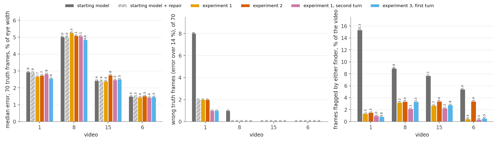
图 9-19：四个视频上每个模型的三个数：70 帧真值帧的中位误差（左）、错帧数（中）、整段视频被任一信号标出的帧占比（右）。灰 = 起点模型，斜纹 = 起点模型 + 9.3 的修复（没有自己的整段标出率），橙 = 实验一，红 = 实验二，粉 = 实验一的第二圈，蓝 = 实验三的第一圈。Figure 9-19:Three numbers per model on the four videos: median error on the 70 truth frames (left), wrong truth frames (middle), share of the whole video flagged by either finder (right). Grey = starting model, hatched = starting model + the repair of 9.3 (no flagged share of its own), orange = experiment 1, red = experiment 2, pink = the second turn of experiment 1, blue = the first turn of experiment 3.
盲测帧，按层Blind frames by stratum
表 9-4-9：24 帧盲测帧上的错帧，按层（A 10 帧、B 3 帧、C 8 帧、D 3 帧），和每个模型对起点模型的配对比较Table 9-4-9: wrong frames on the 24 blind frames by stratum (A 10, B 3, C 8, D 3) and the paired comparison of each model against the starting model
视频Video
模型Model
错帧 A / B / C / DWrong A / B / C / D
整段错帧占比估计（%）Estimated wrong share of the video (%)
好 / 差 / 相同（对起点模型）Better / worse / same (vs the starting model)
符号检验 pSign test p
1
起点模型starting model
8 / 3 / 0 / 0
16.4
起点模型 + 修复starting model + repair
7 / 3 / 0 / 0
14.5
2 / 0 / 22
0.50
实验一experiment 1
0 / 3 / 0 / 1
1.3
14 / 1 / 9
0.001
实验二experiment 2
1 / 1 / 0 / 2
2.5
13 / 2 / 9
0.007
实验一第二圈experiment 1, second turn
0 / 1 / 0 / 0
0.4
15 / 0 / 9
0.0001
实验三第一圈experiment 3, first turn
0 / 1 / 0 / 1
0.5
13 / 1 / 10
0.002
8
起点模型starting model
7 / 2 / 0 / 0
7.3
起点模型 + 修复starting model + repair
2 / 2 / 0 / 0
3.3
5 / 0 / 19
0.06
实验一experiment 1
0 / 2 / 0 / 0
1.8
9 / 2 / 13
0.07
实验二experiment 2
0 / 2 / 0 / 0
1.8
9 / 4 / 11
0.27
实验一第二圈experiment 1, second turn
0 / 2 / 0 / 0
1.8
8 / 3 / 13
0.23
实验三第一圈experiment 3, first turn
0 / 2 / 0 / 0
1.8
9 / 2 / 13
0.07
15
起点模型starting model
5 / 2 / 0 / 0
6.0
起点模型 + 修复starting model + repair
2 / 2 / 0 / 0
3.6
4 / 0 / 20
0.13
实验一experiment 1
0 / 2 / 0 / 0
2.0
8 / 3 / 13
0.23
实验二experiment 2
1 / 2 / 0 / 0
2.8
8 / 6 / 10
0.79
实验三第一圈experiment 3, first turn
0 / 2 / 0 / 0
2.0
8 / 3 / 13
0.23
6
起点模型starting model
7 / 1 / 0 / 0
5.4
起点模型 + 修复starting model + repair
4 / 1 / 0 / 0
3.2
3 / 0 / 21
0.25
实验一experiment 1
0 / 2 / 0 / 1
0.4
11 / 2 / 11
0.02
实验二experiment 2
1 / 1 / 0 / 0
0.9
12 / 1 / 11
0.003
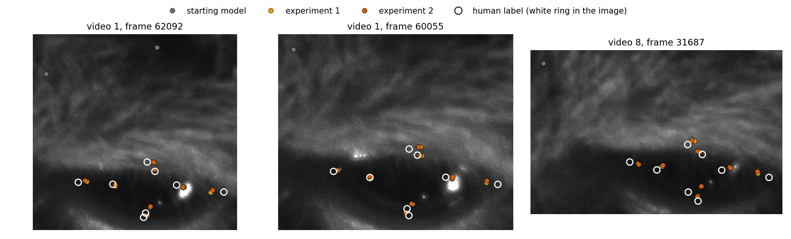
图 9-20：三帧 A 层盲测帧（视频 1 的 62092、60055，视频 8 的 31687）：白圈 = 人工标注，灰 = 起点模型，橙 = 实验一，红 = 实验二，蓝 = 实验三第一圈。起点模型有一个点甩到了画面左上的毛发上，三个 loop 模型的 8 个点都在人工标注旁边。Figure 9-20:Three stratum-A blind frames (video 1: 62092, 60055; video 8: 31687): white rings = human labels, grey = starting model, orange = experiment 1, red = experiment 2, blue = experiment 3, first turn. The starting model has one point thrown onto the fur at the upper left; the 8 points of the three loop models sit next to the human labels.
Stratum A holds the frames the starting model flagged and the experiment-1 model did not, 40 over the four videos: the starting model is wrong on 27, after the repair of 9.3 still on 15, experiment 1 on 0, experiment 2 on 3. In stratum A both experiments are only better, never worse, than the starting model (experiment 1: 9/0, 7/0, 6/0, 9/0; experiment 2: 9/0, 8/0, 5/1, 9/0). In stratum C (neither flagged), 32 frames, no model is wrong on any; in stratum B (both flagged) the loop models are mostly still wrong, like the starting model. Weighted by the strata, the starting model's wrong share of the whole video is about 5% to 16%, the loop models' about 0.4% to 3%.
Experiment 3, first turn, on the same frames: all 30 stratum-A frames of videos 1, 8 and 15 right. On video 1 the two stratum-B frames 51680 and 51710 that experiment 1 gets wrong (31%, 35%) are right for experiments 2 and 3 (7%); video 1's remaining wrong frames are the stratum-B frame 66265 (18%, starting model 89%) and the stratum-D frame 21552 (15%, starting model 6%). On video 8 the wrong frames are the two stratum-B frames every model gets wrong; on video 15 the two wrong stratum-B frames (36915, 36917, 32%) are wrong for experiments 1 and 2 as well. Paired against the starting model: video 1 13 better / 1 worse, video 8 9 / 2, video 15 8 / 3. Paired against experiment 1 frame by frame: video 1 5 better / 3 worse, video 8 3 / 4, video 15 3 / 3; against experiment 2: 4 / 1, 2 / 2, 5 / 3, all within a few frames.
Experiment 1 against experiment 2. Paired frame by frame on the same 24 frames: on video 1 experiment 2 is better on 2 frames and worse on 7, on video 8 better on 4 and worse on 2, on videos 15 and 6 better on 3 and worse on 5 each; the other frames differ by less than 1% of eye width; not significant on any video (sign test p 0.18 to 0.73). Stratum A was selected by experiment 1's flags, which favours experiment 1 slightly in this comparison. The frames on which the two models disagree were drawn as supplementary blind frames (10 per video, only in the held-out blocks experiment 2 never trained on; the two models disagree on 1.2% to 4.3% of a whole video). Wrong frames on the 40: starting model 13, starting model + repair 7, experiment 1 6, experiment 2 4 (Table 9-4-10). On video 1 experiment 2 is ahead: among the 5 frames experiment 1 flags and experiment 2 does not, the starting model is wrong on 4, experiment 1 on 3 (errors 42% to 52%), experiment 2 on none (6% to 9%); experiment 2 against the starting model 7 better, 0 worse (p 0.016). On video 8 experiment 2 is wrong on 0 and experiment 1 on 1, differences within 1%. On video 15 both are wrong on the same one frame. On video 6 it is the other way round: experiment 2 is wrong on 3 frames (errors about 40%, all frames it flags itself and experiment 1 does not, pupil_left misplaced) where the starting model and experiment 1 are right; experiment 2 against experiment 1 1 better, 7 worse (p 0.07). The repaired frames added to the training set on video 6 are almost all pupil_left replacements (1107 of 1130).
Experiment 3 on the supplementary frames. Video 1: wrong on 2 frames (51627, 51628, cell E_t, errors 25% and 42%); experiment 1 is wrong on both as well (52%, 42%), experiment 2 right (6%); on frame 51658 experiment 1 is wrong (48%) and experiment 3 right (10%). Against the starting model 7 better / 0 worse (p 0.016), against experiment 1 2 / 2, against experiment 2 0 / 5 (by 2% to 35%). Video 8: wrong on 1 frame (53673, cell F_t, 16%; experiment 1 13%, experiment 2 12%, all near the line). Video 15: wrong on 2 frames: 35624 (cell F_t) at 68%, the same error as the starting model (69%), where experiments 1 and 2 are right (5%, 4%); 51116 at about 17% for all four models. So experiment 3 sits between experiments 1 and 2 on video 1, equals them on video 8 and is one frame worse than both on video 15.
表 9-4-10：补充盲测帧（两个模型意见不同的帧，每个视频 10 帧）上的错帧Table 9-4-10: wrong frames on the supplementary blind frames (frames the two models disagree on, 10 per video)
视频Video
意见不同的帧（整段）Disagreement frames (whole video)
起点模型Starting model
起点模型 + 修复Starting model + repair
实验一Experiment 1
实验二Experiment 2
实验二对实验一：好 / 差 / 相同Experiment 2 vs 1: better / worse / same
实验三第一圈Experiment 3, first turn
实验三对实验一 / 对实验二：好 / 差 / 相同Experiment 3 vs 1 / vs 2: better / worse / same
1
856
6
4
3
0
3 / 2 / 5
2
2 / 2 / 6 · 0 / 5 / 5
8
3050
3
1
1
0
4 / 2 / 4
1
3 / 1 / 6 · 2 / 1 / 7
15
1899
3
2
1
1
5 / 3 / 2
2
1 / 4 / 5 · 0 / 4 / 6
6
2264
1
0
1
3
1 / 7 / 2
合计Total
13
7
6
4
13 / 14 / 13
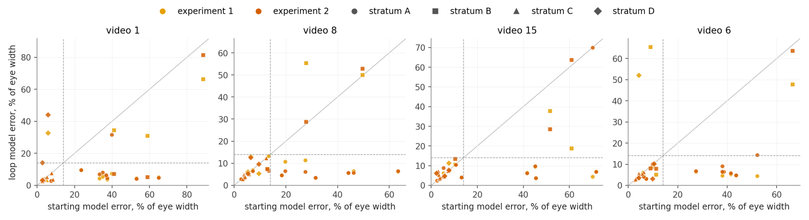
图 9-21：四个视频的 24 帧盲测帧，每个点是一帧：横轴起点模型的误差，纵轴 loop 模型的误差（橙 = 实验一，红 = 实验二，蓝 = 实验三第一圈），形状是层（圆 A，方 B，三角 C，菱形 D），虚线是 14% 的错帧线，对角线以下 = 比起点模型好。A 层（起点模型标出、实验一没标出）的帧几乎都在右下：起点模型错、两个 loop 模型对。Figure 9-21:The 24 blind frames of the four videos, one point per frame: the starting model's error on the x axis, the loop model's error on the y axis (orange = experiment 1, red = experiment 2, blue = experiment 3, first turn), marker by stratum (circle A, square B, triangle C, diamond D), dashed lines at the 14% wrong-frame line, below the diagonal = better than the starting model. The stratum-A frames (starting model flagged, experiment 1 not) sit almost all at the lower right: the starting model is wrong, both loop models are right.
实验四：关于闭眼状态的修复Experiment 4: repair of the closed-eye frames
Experiments 1 to 3 showed that the model improves when the unflagged and the repaired frames enter the training set. One kind of frame is left: the frames called closed. In 9.3 closed frames are not repaired, and a frame is called closed when its eyelid opening is below half the video's median. But when the model misplaces the eyelid points the opening collapses too, so an open eye is called closed and never repaired.
Question: can these frames be repaired?
4a find the closed-eye criterion on frames judged by eye.
4b repair under this criterion and check the repairs by eye.
4c train a student with the repaired frames and compare it with its starting model.
4a 判闭眼：用瞳孔置信度，线取 0.404a Calling an eye closed: the pupil confidence, line at 0.40
真值Truth
标注者逐帧判定的 80 帧：从开度规则判闭眼的帧里，按开度高低和眼睑点是否被标出分层抽取；每帧看原帧和模型的点，判为全闭、半开但瞳孔能标、睁着但眼睑点错三类之一。80 frames judged one by one by the labeler: drawn from the frames the opening rule calls closed, stratified by opening and by whether an eyelid point was flagged; each shown as the frame with the model's points and judged fully closed, half open with a labelable pupil, or open with wrong eyelid points.
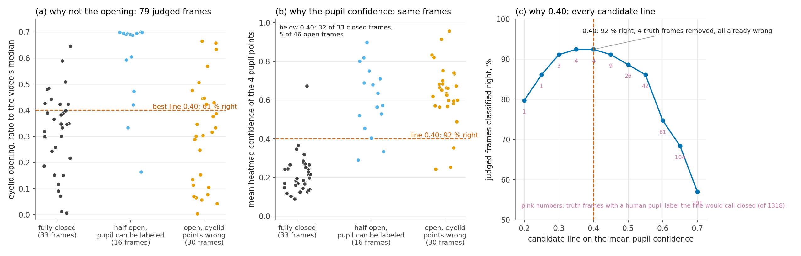
图 9-22：(a) 按眼睑开度：全闭（深灰）和睁着但眼睑点错（橙）的帧混在一起，分不开。(b) 同样的帧按瞳孔四点平均置信度：全闭的在线下，睁着的在线上，分得开。(c) 每条候选线的准确率（蓝）和它会把多少帧人能标瞳孔的真值帧判成闭眼（粉色数字）：0.40 最准，再往上把能标的帧也判成闭眼。Figure 9-22:(a) By eyelid opening: fully closed frames (dark grey) and open frames with wrong eyelid points (orange) overlap and cannot be separated. (b) The same frames by the mean confidence of the four pupil points: closed below the line, open above it. (c) Accuracy of each candidate line (blue) and how many truth frames with a labelable pupil it would call closed (pink numbers): 0.40 is the most accurate, higher lines start calling labelable frames closed.
Conclusion of 4a:an eye should be called closed by the pupil confidence, not by the eyelid opening: when the eyelid points are misplaced the opening collapses with them and cannot tell a closed eye from an open one, while the pupil confidence can. The line is 0.40: the most accurate on the judged frames, and higher lines start calling frames with a labelable pupil closed.
4b 按这条判据修复：修得对4b Repairing under this criterion: the repairs are right
做法Procedure
按 4a 的判据，不是全闭的帧不再挡在闭眼状态外，照 9.3 的流程修复。Under the criterion of 4a, frames that are not fully closed are no longer held back as closed and are repaired by the procedure of 9.3.
真值Truth
标注者逐帧判定的 20 帧：从这样放出来并修好的帧里抽取，每段连续帧取一帧，每个视频至多 5 帧；每帧看原帧、修复前和修复后的点，判修得对不对。20 frames judged one by one by the labeler: drawn from the frames repaired this way, one per run of consecutive frames, at most 5 per video; each shown with the points before and after the repair and judged right or not.
Conclusion of 4b:in 19 of the 20 frames the replaced points are right, and none is a truly closed eye. These frames can enter the training set like any other repaired frame.
4c 这些帧进训练集：学生对起点模型4c These frames in the training set: student against starting model
训练集Training set
起点模型的人工标注，加上只有 4b 的那些修好的帧（8 个点都取修复后的坐标，没换的点只在置信度低于 0.01 时去掉），避开真值帧和盲测帧前后各 60 帧，不设上限；迭代次数和起点模型相同（和实验一到三同一配方）。在放出来的帧最多的三个视频上做：视频 15 进入 660 帧，视频 11 进入 512 帧，视频 1 进入 98 帧（视频 1 放出来的帧大多离盲测帧太近，被排除）。The starting model's human labels plus only the repaired frames of 4b (all 8 points at their repaired coordinates, a non-replaced point dropped only below likelihood 0.01), excluding 60 frames around every truth and blind frame, no cap; iterations as the starting model's (the recipe of experiments 1 to 3). On the three videos with most reopened frames: video 15, 660 frames; video 11, 512; video 1, 98 (most of video 1's reopened frames lie too close to blind frames and are excluded).
真值是什么What counts as truth
和实验一到三相同：每个视频 70 帧人工标注的真值帧（错帧 = 误差超过 0.14 眼宽）、34 帧人工标注的盲测帧（视频 15 和 1 有，视频 11 没有）、整段标出率；另看没进训练集的那部分放出来的帧（离真值帧或盲测帧 60 帧以内、被排除在训练集外的）：起点模型在这些帧上全部被标出（修复帧都是被标出的帧），学生如果学会了这类帧，应该不再标出它们。As in experiments 1 to 3: the 70 human-labeled truth frames of each video (wrong = error above 0.14 eye widths), the 34 human-labeled blind frames (videos 15 and 1 have them, video 11 does not), the flagged share of the video; plus the reopened frames left out of the training set (within 60 frames of a truth or blind frame): the starting model flags every one of them (a repaired frame is a flagged frame), and a student that has learned this kind of frame should no longer flag them.
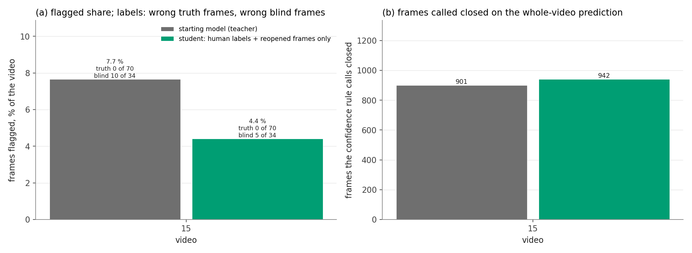
图 9-23：实验四 4c，每个视频起点模型（灰）对学生（绿）。(a) 整段标出率，柱上标 70 帧真值帧和 34 帧盲测帧里预测错的。(b) 没进训练集的那部分放出来的帧里，仍被标出的帧数。视频 11 和 1 的结果出来后加入。Figure 9-23:Experiment 4c, starting model (grey) against the student (green) per video. (a) Flagged share of the video, with the wrong frames of the 70 truth frames and of the 34 blind frames. (b) Of the reopened frames left out of the training set, how many are still flagged. Videos 11 and 1 are added as they finish.
Conclusion of 4c:on all three videos, adding only these reopened and repaired frames gives a student better than its starting model: fewer wrong truth and blind frames, a lower flagged share; and the student hardly flags the frames of this kind it was not trained on, so it has learned them rather than memorised the training frames. The cause of the wrong closed call differs by video: in video 15 a narrowed eye with the left pupil point thrown outside the eye; in videos 11 and 1 a corner point thrown away, which widens the eye and makes the opening look collapsed. Video 1 improves with only 98 frames. The repaired closed-eye frames belong in the training set of the final version.
Experiments 1 to 4 showed that the unflagged frames, the repaired frames, and the frames wrongly called closed and then repaired each improve the model when added to the training set. Experiment 5 trains with all three together.
5a before training, settles the replacement rule by experiment: when several points of a frame could be replaced and several replacements pass the acceptance, which points to replace.
5b runs the loop again from the starting models with that rule and the closed-eye criterion of experiment 4.
5a 实验：修复方法选择5a Experiment: choosing the repair method
替换方式Rule
候选点的试换顺序Order in which candidates are tried
几种换法都通过验收时用哪个When several replacements pass
A
先眼睑眼角、后瞳孔（9.3 的顺序）outline points first, then pupil points (the order of 9.3)
换的点数最少的里面，第一个通过的the first that passes among the fewest points
B
按偏差 s 从大到小by deviation s, largest first
换的点数最少的里面，第一个通过的the first that passes among the fewest points
C
按偏差 s 从大到小by deviation s, largest first
换的点数最少的里面，余量 M 最大的the largest margin M among the fewest points
D
按偏差 s 从大到小by deviation s, largest first
所有通过的里面，余量 M 最大的（可能多换点）the largest margin M among all that pass (may replace more points)
定义（照此可以复现）Definitions (enough to reproduce)
眼坐标Eye coordinates
一帧的 8 个点记为 pb（像素）。N = 鼻侧眼角，T = 颞侧眼角，C = (N + T) / 2，W = |T − N|，u = (T − N) / W，v = u 逆时针转 90°。点 b 的眼坐标 ab = (pb − C) · u / W（沿眼角连线），eb = (pb − C) · v / W（垂直于连线）。W̄、θ̄、C̄ 分别是本视频预测的 W、连线角度、C 的中位数。The 8 points of a frame are pb (pixels). N = nasal corner, T = temporal corner, C = (N + T) / 2, W = |T − N|, u = (T − N) / W, v = u turned by 90°. Eye coordinates of point b: ab = (pb − C) · u / W (along the corner line), eb = (pb − C) · v / W (across it). W̄, θ̄, C̄: the video's medians of W, of the corner-line angle and of C over its prediction.
偏差和候选点Deviation and candidates
时序偏差 db = |pb(t) − p̂b(t)| / W̄，p̂ 是 x、y 各自在整段视频上拟合 SARIMAX(2,0,0) 的一步预测（置信度 < 0.01 的点当缺失）。形状残差 rb = |pb − p̃b| / W̄，p̃ 是把 16 维姿态投到本视频人工标注姿态的 PCA（保留 99% 方差，至少 2 个成分）再重建。fitting 标出（maxb db > 0.14）时，候选点 = 所有 db > 0.14 的点；PCA 标出（r 的均方根 > 本视频中位数 × 3.93 = τ）时，候选点 = rb 最大的点；两者都标出取并集。只保留有第二峰的候选点。偏差 sb = max(db / 0.14, rb / τ)。Temporal deviation db = |pb(t) − p̂b(t)| / W̄, p̂ the one-step prediction of SARIMAX(2,0,0) fitted separately to x and y over the whole video (points with confidence < 0.01 treated as missing). Shape residual rb = |pb − p̃b| / W̄, p̃ the reconstruction of the 16-dimensional pose by the PCA of the video's human-labeled poses (99% of the variance, at least 2 components). When fitting flags the frame (maxb db > 0.14) the candidates are all points with db > 0.14; when PCA flags it (root mean square of r > 3.93 × the video's median = τ) the candidate is the point of largest rb; the union when both flag. Only candidates with a second peak are kept. Deviation sb = max(db / 0.14, rb / τ).
替换Replacement
把点 b 移到它热图的第二峰：离最高点（欧氏距离）至少 3 格的、3 × 3 邻域里的局部最大值中最高的那个；像素位置 = 格子坐标 × 步长（8）+ 该点在本视频的中位偏移（模型输出位置减最高点格子坐标 × 步长）。Point b is moved to the second peak of its heatmap: the highest 3 × 3 local maximum at least 3 cells (Euclidean) from the highest cell; pixel position = cell × stride (8) + the point's median offset in the video (model output minus highest cell × stride).
验收量：瞳孔 12 个Acceptance quantities: pupil, 12
对瞳孔上、下、左、右四个点 b 各算三个：位置 ab；在眼睑间的相对高度 (eb − e上眼睑) / (e下眼睑 − e上眼睑)；相对瞳孔中线的伸出比。伸出比：h = |e下 − e上|，w = |a右 − a左|，m1 = (a上 + a下) / 2，m2 = (e左 + e右) / 2；左 = σ1(m1 − a左) / h，右 = σ1(a右 − m1) / h，上 = σ2(m2 − e上) / w，下 = σ2(e下 − m2) / w；σ1、σ2 = ±1，取本视频 a右 − a左 和 e下 − e上 中位数的符号（下标都指瞳孔点）。For each of the four pupil points b (top, bottom, left, right), three: position ab; relative height between the eyelids (eb − elid top) / (elid bottom − elid top); reach from the pupil's midline. Reach: h = |ebottom − etop|, w = |aright − aleft|, m1 = (atop + abottom) / 2, m2 = (eleft + eright) / 2; left = σ1(m1 − aleft) / h, right = σ1(aright − m1) / h, top = σ2(m2 − etop) / w, bottom = σ2(ebottom − m2) / w; σ1, σ2 = ±1, the sign of the video's median of aright − aleft and of ebottom − etop (subscripts are pupil points).
验收量：轮廓 8 个Acceptance quantities: outline, 8
眼宽比 W / W̄；连线角度与 θ̄ 之差（度，折到 −180 到 180）；中心偏移 |C − C̄| / W̄；上眼睑点的 a、e；下眼睑点的 a、e；开度 σ3(e下眼睑 − e上眼睑)，σ3 取本视频该差中位数的符号。Width ratio W / W̄; corner-line angle minus θ̄ (degrees, wrapped to −180 to 180); centre shift |C − C̄| / W̄; a and e of the top eyelid point; a and e of the bottom eyelid point; opening σ3(elid bottom − elid top), σ3 the sign of the video's median of that difference.
验收范围Acceptance ranges
每个量 q 在 1330 帧人工标注上的最小值 loq、最大值 hiq，两边各放宽 m(hiq − loq)：Lq = loq − m(hiq − loq)，Uq = hiq + m(hiq − loq)。m 是使"每个视频的标注都落在其余 18 个视频标注算出的范围里"的最小值（步长 0.01）：瞳孔 m = 0.42，轮廓 m = 0.23。20 个量全在 [Lq, Uq] 内即通过验收；本来就通过的帧不换。For each quantity q, the minimum loq and maximum hiq over the 1330 human labels, widened by m(hiq − loq) on each side: Lq = loq − m(hiq − loq), Uq = hiq + m(hiq − loq). m is the smallest value (steps of 0.01) at which every video's labels fall inside the range built from the other 18 videos' labels: m = 0.42 for the pupil, 0.23 for the outline. A frame passes when all 20 quantities lie in [Lq, Uq]; a frame that already passes is not changed.
余量 MMargin M
M = minq min(xq − Lq, Uq − xq) / (Uq − Lq)，xq 是换完之后这帧的 20 个量。M ≥ 0 等价于通过验收；所有量都在范围正中时 M = 0.5。M 越大，这帧换完的形状越在人工标注的范围里面，而不是压线通过。M = minq min(xq − Lq, Uq − xq) / (Uq − Lq), xq the frame's 20 quantities after the replacement. M ≥ 0 is the same as passing; M = 0.5 when every quantity is at the centre of its range. A larger M means the replaced frame sits well inside the human-label ranges rather than passing at the edge.
搜索Search
候选点按上表的顺序排成一列，依次枚举换 1 个点、2 个点……的所有组合（同样点数内按这一列的字典序）。A、B 在点数最少的那一层取第一个通过的；C 在点数最少的那一层取 M 最大的；D 枚举完所有点数，取 M 最大的。都不通过则不换，这帧留作标出未修。The candidates are put in a list in the order of the table above, and every subset of 1, 2, … points is tried (within a size in the list's lexicographic order). A and B take the first passing subset of the smallest passing size; C takes the largest M within that size; D tries every size and takes the largest M. If none passes, nothing is replaced and the frame stays flagged.
真值Truth
1330 帧真值帧；加上标注者逐帧判定的 55 帧：变体之间换法不同的帧（A、B、C 不同的全部 35 帧，C、D 不同的帧里抽 20 帧），每帧并排看各变体的结果，判哪个的 8 个点全对。The 1330 truth frames; plus 55 frames judged one by one by the labeler where the variants replace different points (all 35 where A, B, C differ, 20 drawn where C and D differ), each showing the variants' results side by side, judged for which has all 8 points right.
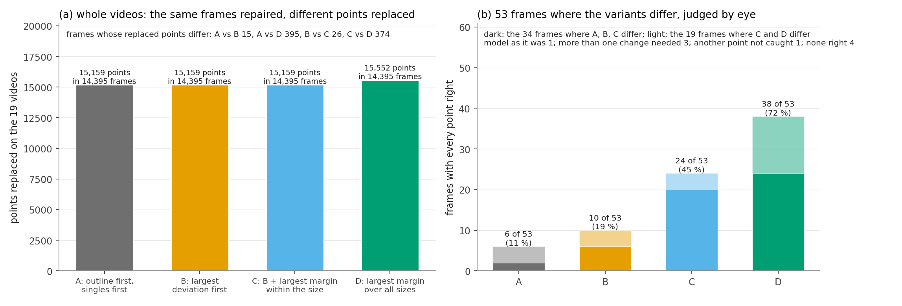
图 9-24：(a) 19 个视频整段：四个变体修复的是同样的帧，只是换的点略有不同。(b) 判定帧上每个变体 8 个点全对的帧数，深色是 A、B、C 不同的帧，浅色是 C、D 不同的帧。Figure 9-24:(a) The 19 whole videos: the four variants repair the same frames and differ only slightly in the points replaced. (b) Judged frames with every point right per variant, dark for the frames where A, B, C differ, light for those where C and D differ.
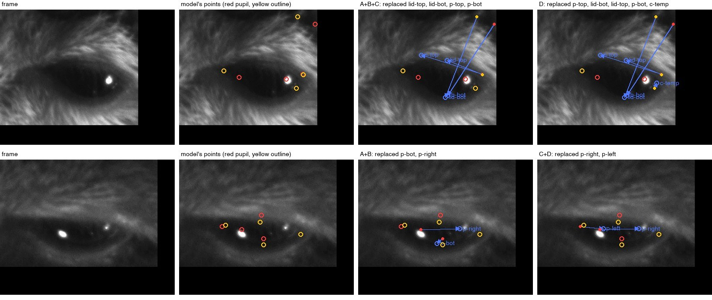
图 9-25：两帧判定帧。蓝圈是换上去的点，箭头从模型原来的位置指过去。上：D 多换了一个眼角点，判 D 全对。下：C、D 换法相同，判 C、D 全对。Figure 9-25:Two judged frames. Blue circles are the replaced points, arrows from the model's position. Top: D replaces one corner point more and is judged right. Bottom: C and D agree and are judged right.
5a 的结论：真值帧上四个变体结果相同；换法不同的帧上人眼判定 D 最好。最终版本用 D。
Conclusion of 5a:the four variants give the same result on the truth frames; where they differ, the judgment by eye favours D. The final version uses D.
5b 最终版本的 loop5b The loop in its final version
做法Procedure
实验三的流程；修复用 5a 的 D 和实验四的置信度判据，其余规则不变。The procedure of experiment 3; the repair uses D of 5a and the confidence criterion of experiment 4; every other rule unchanged.
停止Stop
标出帧数不低于上一圈的 90% 就停。90% 的依据：同一圈只换随机种子重训，标出率就会差约 9%。Stop when the flagged frames are not below 90% of the previous turn's. Basis: the same turn retrained with another random seed differs by about 9% in flagged share.
看什么What to read
在实验三的视频 1、8、15 上和实验三第一圈比。视频 8 几乎没有放出来的闭眼帧，它的变化是 D 的效果；视频 15、1 多出来的变化是闭眼帧的效果。Against experiment 3's first turn on its videos 1, 8 and 15. Video 8 has almost no reopened frames, so its change is D's effect; what videos 15 and 1 change beyond that is the effect of the reopened frames.
进度Progress
第一圈运行中（视频 1、8、15、6，从 2026-11-08 起）。每圈另记录两项 loop 本身不用的检测指标：8 个点里最低置信度低于起点模型 5% 分位的帧占比，相邻帧最大位移超过起点模型 95% 分位的帧占比；用来检查标出率下降是不是错误真的变少。Turn 1 running (videos 1, 8, 15, 6, from 2026-11-08). Each turn also records two detectors the loop never uses: the share of frames whose lowest point confidence is below the starting model's 5% quantile, and the share whose largest frame-to-frame move exceeds its 95% quantile; a check that a falling flagged share means fewer errors.
10瞳孔面积：四点法误差最低；视频 4 和 8 上面积仍然不准Pupil area: the four-point rule has the lowest error; on videos 4 and 8 the area is still not accurate
基本信息Basic information
视频Videos
全部 19 个视频（视频 0–18；老鼠 A 1 个，Pluto 10 个，Terra 8 个）。All 19 videos (videos 0–18; 1 of mouse A, 10 of Pluto, 8 of Terra).
标注标准Label standard
2026 年 9 月 20 日明确的点位定义（第 4 步）。The keypoint definitions made explicit on 2026-09-20 (step 4).
模型Model
每个视频用它自己平台点的那个模型（第 5 步的表；视频 7 和 12 的平台点是 0 帧，用它们各自的 20 帧模型）。ResNet-50，batch 2，120 epochs，取最后一个快照；对整段视频每一帧做预测，不按置信度筛点。For each video the model at its own plateau point (table of step 5; videos 7 and 12, whose plateau is at 0 labels, use their 20-label models). ResNet-50, batch 2, 120 epochs, final snapshot; every frame of the whole video is predicted, with no confidence cut-off.
用的帧Frames used
每个视频冻结的 50 帧测试帧里，四个瞳孔点都有人工标注的帧，共 940 帧。测试帧取自视频最后 10%，模型没有用它们训练。The frames among each video's 50 frozen test frames in which all four pupil points have human labels, 940 frames in total. Test frames come from the final 10% of the video; no model was trained on them.
脚本和结果Script and results
v2_new_pupil_top_video_scaling/scripts/blink_and_area.py（A 部分）；结果在 v2_new_pupil_top_video_scaling/results/blink_and_area/。v2_new_pupil_top_video_scaling/scripts/blink_and_area.py (part A); results in v2_new_pupil_top_video_scaling/results/blink_and_area/.
记瞳孔四个点为上 T、下 B、左 L、右 R，坐标 (x, y) 以像素为单位，图像的 y 轴向下。
The four pupil points are top T, bottom B, left L, right R, with coordinates (x, y) in pixels; the image y axis points down.
Truth (human labels): the four points are the endpoints of the two axes of an ellipse, so the area is
Four-point rule (model): the same formula on the model's four points.
Three-point rule (top unused): the width is unchanged and the height is twice the distance from the bottom point to the midline of the left and right points,The rules without the bottom, left or right point are built the same way (twice the distance from the opposite point to the midpoint of the other axis).
The other rules: "drop lowest confidence": per frame, leave out the pupil point with the lowest model confidence; "four, fallback": the four-point rule when all four confidences are at least 0.6, otherwise drop the lowest; "four + median filter": first the four-point area of every frame of the whole video, A1, A2, …; with a window of k frames (5 or 31; 31 frames = 0.5 s at 60 frames/s) the filtered area of frame i is the median of the k frames centred on it: Ãi = median(Ai−(k−1)/2, …, Ai+(k−1)/2); at the start and end of the video, where fewer than k frames exist, the median of the frames that do exist (pandas rolling(k, center=True, min_periods=1).median()). A median only replaces a frame by the middle value of its neighbours, so it corrects isolated wrong frames and cannot correct a run of wrong frames longer than (k−1)/2.
Area error of a frame (%):where is the area on the model side and the truth. Per video and for the 19 videos pooled, the median and the 90th percentile of are reported.
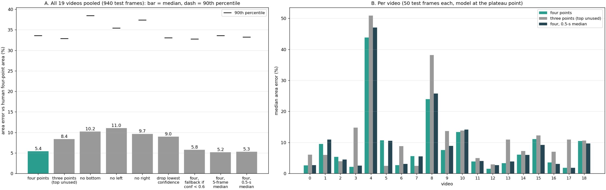
图 10-1：左图：19 个视频的 940 帧测试帧合并，每根柱子是一种算法的面积误差中位数（%，越低越好），横线是第 90 百分位数。右图：每个视频各 50 帧测试帧上，四点法（绿）、三点法（灰）和四点法加 31 帧中位数滤波（深色）的误差中位数。Figure 10-1:Left: the 940 test frames of the 19 videos pooled; one bar per rule = median area error (%, lower is better), dash = 90th percentile. Right: on the 50 test frames of each video, the median error of the four-point rule (green), the three-point rule (grey) and the four-point rule with a 31-frame median filter (dark).
Conclusion on the area:Among these rules the four-point rule has the lowest error, but on some videos the area is still not accurate.
Pooled over the 19 videos the four-point rule has a median error of 5.4%, the lowest group of the 9 rules; the three-point rule 8.4%; leaving out the bottom, left or right point 9.7–11.0%.
Per video the four-point rule is lower than the three-point rule on 15 of the 19 videos; on videos 1, 2, 5 and 7 the three-point rule is lower.
A median filter over time does not help (5 frames 5.2%, 31 frames 5.3%): the error is mostly not frame-to-frame jitter but runs of consecutive frames that are off together, which a median cannot correct.
The error differs a lot between videos: 1.5–10% on 13 videos, 10.5–13.3% on 4 (videos 5, 10, 15, 18), 43.8% on video 4 and 24.0% on video 8, video 8 is also the video with the largest keypoint error (step 5: 25.34 px) and video 4 the third (15.01 px; video 5 is at 15.85 px but its area error is only 10.7%). The pooled 90th percentile is 34%: in one frame of ten the area is off by about a third or more.
Why the four-point rule is better: both rules use the same width; they differ in the height. The four-point rule measures the height directly from top to bottom. The three-point rule has no top point, so it assumes that the left and right points lie exactly at mid-height of the ellipse and takes twice the distance from the bottom point to the line through them. A labeler cannot place the left and right points exactly at mid-height; they are always a few pixels too high or too low. The four-point rule uses only the x coordinates of these two points and is not affected, whereas the three-point rule doubles this offset into the height. Applying the three-point formula to the human points themselves (no model involved) differs from the human four-point area by a median of 5.0% over the 940 frames (13.0% on video 3, 9.0% on video 6). The model learns from the human labels and carries the same offset.
11眨眼，静态按帧分析：非睁眼 = 眼睛闭上或眼睑盖住部分瞳孔；判据是上下眼睑距离低于该老鼠的阈值（Pluto 147.5 px、Terra 150.5 px），在 327 帧判断帧（眼睑点正常的 289 帧）上准确率 Pluto 94%、Terra 89%；9 个视频有 20–79% 的帧低于阈值Blinks, static per-frame analysis: not open = the eye is closed or the lid covers part of the pupil; the criterion is an eyelid distance below the mouse's threshold (Pluto 147.5 px, Terra 150.5 px), 94% (Pluto) and 89% (Terra) accurate on the 327 judged frames (the 289 with plausible eyelid points); 9 videos have 20–79% of their frames below the threshold
范围：静态按帧分析，每一帧分睁开 / 非睁眼两种状态。
Scope: a static per-frame analysis with two states per frame, open / not open.
基本信息Basic information
视频Videos
全部 19 个视频（视频 0–18；老鼠 A 1 个，Pluto 10 个，Terra 8 个）。All 19 videos (videos 0–18; 1 of mouse A, 10 of Pluto, 8 of Terra).
标注标准Label standard
2026 年 9 月 20 日明确的点位定义（第 4 步）。The keypoint definitions made explicit on 2026-09-20 (step 4).
模型Model
每个视频用它自己平台点的那个模型（第 5 步的表），对整段视频每一帧做预测。For each video the model at its own plateau point (table of step 5); every frame of the whole video is predicted.
每帧的量Per-frame quantity
睁开高度 O = 下眼睑点的 y − 上眼睑点的 y（像素，图像 y 轴向下）。眼睑点满足以下任一条算失效：O < 0（上点在下点下方）、两点横向错开超过眼宽 W 的 30%（W = 该视频两个眼角距离的中位数）、任一点置信度低于 0.3。失效帧每个视频占 0.02–1.6%。Eye opening O = y of the lower eyelid point − y of the upper one (pixels, image y axis pointing down). The eyelid points are implausible when O < 0 (upper point below the lower one), the two points are more than 30% of the eye width W apart horizontally (W = the median distance between the two eye corners of the video), or either confidence is below 0.3. Implausible frames are 0.02–1.6% of each video.
真值Truth
标注者逐帧判断的 327 帧（下文称判断帧）。19 个视频每个最多 18 帧，按模型给出的 r（O ÷ 该视频 O 的中位数）分层随机抽：r < 0.70、0.70–0.85、0.85–1.00、≥ 1.00 各 4 帧，眼睑点失效 2 帧，同一视频内两帧至少相隔 60 帧；眼睛全程睁大的视频 0、5、7 没有 r < 0.70 的帧，各 14 帧。330 帧抽出，327 帧有判断。标注者只看单帧原图，看不到任何数值，三选一：睁开 / 非睁眼 / 看不清；没有"看不清"。327 帧里 141 帧非睁眼；眼睑点正常的 289 帧用于选阈值。原图和判断见附录 2。327 frames judged one by one by the labeler (called judged frames below). At most 18 frames per video for the 19 videos, drawn at random in strata of the model's r (O ÷ the video's median O): 4 frames each at r < 0.70, 0.70–0.85, 0.85–1.00, ≥ 1.00, plus 2 frames with implausible eyelid points, any two frames of a video at least 60 frames apart; videos 0, 5 and 7, whose eye is wide open throughout, have no frame with r < 0.70 and so 14 frames each. 330 drawn, 327 judged. The labeler saw only the single raw frame and no number; three choices: open / not open / cannot tell; no "cannot tell" was given. 141 of the 327 frames are not open; the 289 frames with plausible eyelid points are used for the threshold. Frames and verdicts in appendix 2.
脚本和结果Scripts and results
scripts/blink_notopen_frames_sample.py、blink_notopen_frames_sample_r2.py（抽样和判断页面）、blink_per_mouse_threshold_px_v2.py（阈值扫描、每视频比例、例子图、时序图）、blink_px_validation.py（两项验证）。结果 results/blink_eyelid_distance/results/every_mouse/px/，判断帧的判断结果 results/blink_eyelid_distance/labels/frames/。scripts/blink_notopen_frames_sample.py, blink_notopen_frames_sample_r2.py (sampling and the judgement sheets), blink_per_mouse_threshold_px_v2.py (threshold scan, per-video shares, example sheets, time courses), blink_px_validation.py (the two checks). Results in results/blink_eyelid_distance/results/every_mouse/px/, verdicts in results/blink_eyelid_distance/labels/frames/.
Definition. Each frame is in one of two states: open, or not open (the eye is closed, or the eyelid covers part of the pupil). Blink / long closure / squint come with the systematic analysis of the dynamics later.
Why a pixel distance and one value per mouse. The question is when the eye is narrowed.
The camera is fixed and the mouse is placed at the same position every day (checked below), so the pixel distance between the two eyelid points is itself comparable across days and needs no division by the eye width.
Eye size differs between mice, so each mouse gets its own threshold.
Example frames at the threshold and at 180 px were drawn so that the eye opening at the threshold can be checked by eye (Figure 11-2).
Criterion (per frame). One threshold T per mouse: Pluto 147.5 px, Terra 150.5 px (shown as 148 / 150 in the figures). Mouse A cannot be set: all 12 of its judged frames are open.
Frames with plausible eyelid points: O < T → not open; O ≥ T → open.
Frames with implausible eyelid points (0.02–1.6% of each video): no usable O, so the pupil is used instead. Mean confidence of the model's four pupil points < 0.527 → not open, otherwise open. Basis: when the eye is closed the pupil is not visible and the model's confidence in the pupil points is low.
0.527 was chosen the same way as T: on the 2371 human-labeled frames the model was not trained on, with the 43 frames the labeler checked by eye and judged not open (record: results/blink_eyelid_distance/labels/frames/pupil_empty_frames_to_verify/) and the 2328 open frames as truth, every threshold was tried and the one with the largest recall − false-alarm rate taken (part B of scripts/blink_and_area.py). 0.527 was chosen on the frames of videos 0–16; on the 2371 frames of all 19 videos the same criterion gives 0.412. On these 2371 frames, 0.527 finds 42 of the 43 not-open frames and misjudges 87 of the 2328 open frames (3.7%) as not open; 0.412 also finds 42 and misjudges 23 (1.0%). The two values differ only on the 0.02–1.6% of frames with implausible eyelid points; the scripts keep 0.527.
Where the threshold is (Figure 11-1). Conclusion: Pluto 147.5 px, Terra 150.5 px, the candidate with the highest recall − false-alarm rate; leave-one-video-out ranges Pluto 147.5–160.5 px, Terra 143.5–154.5 px. The computation follows the figure.
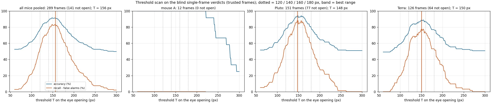
图 11-1：每只老鼠在哪个阈值 T 上和标注者最一致。每格一只老鼠，第一格是三只合并，仅供参考，阈值按单只老鼠定。
Figure 11-1:At which threshold T each mouse agrees best with the labeler. One panel per mouse; the first pools all three, for reference only, thresholds are set per mouse.
x: candidate threshold T in pixels.
Blue: agreement, the share of all judged frames on which "O < T → not open" agrees with the labeler.
Orange: recall minus false-alarm rate (formulas under "How the threshold is chosen" above). The orange vertical line is the chosen threshold, the orange band the range of equally good values, the dotted lines the candidates 120 / 140 / 160 / 180 px.
Three things to read: where the peak is (the threshold); how wide it is (Pluto is almost flat from 147 to 160, Terra's peak is sharper); whether the two mice agree (148 against 150).
The mouse-A panel carries no information: all 12 frames are open, so a higher threshold can only misjudge wide-open eyes.
How the threshold is chosen (Figure 11-1). Each mouse uses only its own judged frames. Candidate T runs from 60 to 300 px in steps of 1 px.
Each T splits the frames into four cells:
hit: truth not open, O < T
miss: truth not open, O ≥ T
false alarm: truth open, O < T
correct rejection: truth open, O ≥ T
Three rates:
recall = hits ÷ frames whose truth is not open
false-alarm rate = false alarms ÷ frames whose truth is open
agreement (accuracy) = (hits + correct rejections) ÷ all frames
Choice: the orange line is recall − false-alarm rate, the blue line the agreement. The T with the highest orange value is taken, the middle of a tied range.
Why orange rather than blue: the agreement pools the two classes and leans toward whichever is more frequent. In the extreme, with 90% of the frames open, a threshold of 0 that flags nothing still agrees 90%. Recall − false-alarm rate takes one rate per class and subtracts, so it does not depend on the class proportions. Here the classes are nearly balanced (Pluto 77 against 74, Terra 64 against 62) and both lines peak at the same T.
Stability: leave-one-video-out. The choice is repeated with each video's frames removed in turn, and the range of T is reported (see the conclusion of this step).
What the eye looks like at the threshold (Figure 11-2). Conclusion: the upper lid already covers the top of the pupil, which is the definition of not open; at 180 px the eye is fully open.
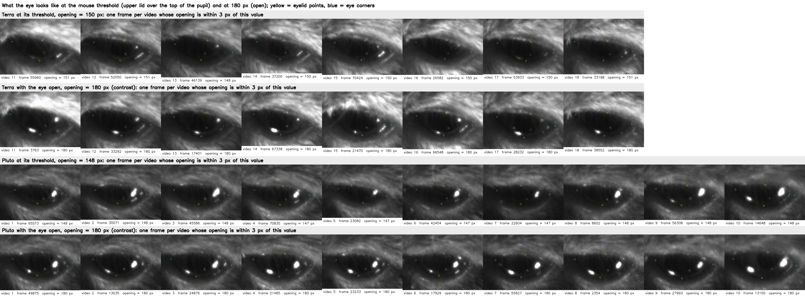
图 11-2：阈值处的眼睛：上眼睑已盖住瞳孔上缘，符合非睁眼的定义；180 px 时眼睛完全睁开。每只老鼠两行（阈值行 Terra 150 px、Pluto 148 px；180 px 行），每个视频一帧，取整段预测里睁开高度等于该值 ±3 px 的帧；黄圈 = 上下眼睑点，蓝圈 = 眼角。可左右拖动。Figure 11-2:The eye at the threshold: the upper lid already covers the top of the pupil, which is the definition of not open; at 180 px the eye is fully open. Two rows per mouse (threshold row, Terra 150 px and Pluto 148 px; 180 px row), one frame per video whose opening in the whole-video predictions is within 3 px of that value; yellow = eyelid points, blue = eye corners. Scroll sideways.
Check one: do the judged frames separate on the distribution of the eye opening over all frames of the mouse (Figure 11-3). Conclusion: they do; the misjudged frames almost all lie within 20 px of the threshold (one Terra frame excepted).
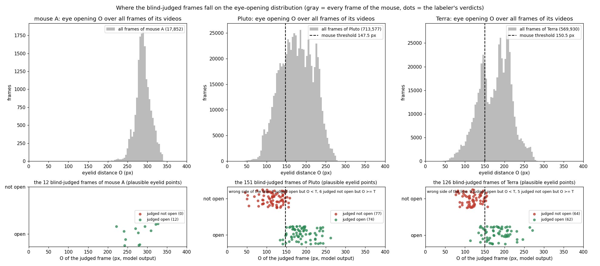
图 11-3：一列一只老鼠。
上排：这只老鼠所有视频全部帧的睁开高度直方图（灰），虚线是阈值。Terra 是双峰，阈值落在谷里；Pluto 是单峰，阈值切在左坡上。这就是图 11-1 里 Terra 的顶尖、Pluto 的顶平的原因。
Top row: histogram of the eye opening over every frame of all the mouse's videos (gray), dashed line = the threshold. Terra is bimodal and the threshold sits in the valley; Pluto is unimodal and the threshold cuts the left slope. This is why Terra's peak in Figure 11-1 is sharp and Pluto's flat.
Bottom row: the judged frames. Red = judged not open, green = judged open, x = the opening the model gives that frame. Almost all red dots lie left of the threshold, almost all green ones right of it. Misjudged frames: Pluto 9, all within 14 px of the threshold; Terra 14, 13 within 17 px and one 37 px away. Mouse A's 12 frames are all open, so no boundary can be drawn.
Check two: how far the model's eyelid distance is from the labeler's own labels (Figure 11-4). Data: the 50 test frames held out per video (never trained on, 949 frames over the 19 videos), the distance from the labeled eyelid points against the distance from the model's points on the same frame. Conclusion: median difference 2 px, no bias, only 2–4% of the test frames change side of the threshold, so most errors near the threshold are not the model's.
mouse A 差 6.8 px、偏大 5.5 px（模型只见过它一个视频的 60 帧标注），但它的眼全程睁大，不影响。
Figure 11-4:One dot per test frame. x = the distance between the labeler's two eyelid points, y = the distance between the model's two. Black diagonal = equal, dotted lines = ±10 px, dashed line = the mouse threshold.
The dots hug the diagonal: the model hardly errs on this quantity. Median difference Pluto 1.9 px (499 frames), Terra 2.2 px (400 frames), 90% of the frames within 6.3 px, no bias.
Frames moved to the other side of the threshold by the model's error: Pluto 12 (2.4%), Terra 14 (3.5%), all within 20 px of the threshold.
Mouse A differs by 6.8 px and reads 5.5 px large (its model saw only the 60 labels of its one video), but that eye is wide open throughout, so it does not matter.
老鼠Mouse
测试帧Test frames
|模型 − 标注| 中位Median |model − label|
90% 的帧不超过90th percentile
最大Max
系统偏差（中位）Bias (median)
阈值两侧不一致On different sides of the threshold
其中离线 20 px 以内Among frames within 20 px of the line
怎么核对：眼宽 W = 模型给的两个眼角距离在整段视频的中位数。把阈值按眼宽比例降低，相当于按 140 px 和 120 px 再算一次低于阈值的比例。
视频
日期
眼宽 W（px）
比 Pluto 10-27 之后的中位数 444 px
低于 147.5 px 的帧
低于 140 px
低于 120 px
Pluto 10
10-22
392
−12%
79.4%
72.6%
56.1%
Pluto 9
10-23
414
−7%
59.5%
53.6%
23.1%
Pluto 8
10-24
428
−3%
44.6%
36.8%
10.4%
Pluto 1–7
10-27 到 10-31
417–468
−6% 到 +5%
0.1–48.8%
0.1–36.1%
0–4.5%
Terra 11–18
10-08 到 10-17
417–465
–
0.2–72.2%（阈值 150.5 px）
0.1–55.4%
0–33.3%
这三天眼睛在画面里的位置也向右下偏了 45–60 px（用标注者自己标的眼角点复核过，是真的），但阈值只看上下眼睑两点的 y 差，整体平移不改变它，不用处理。Terra 眼宽最小的两天（视频 11、18）正是眯得最多的两天，和 Pluto 一样，说明眼宽变小更可能是眯眼本身。
Premise check: can a pixel threshold be used across days, i.e. is the eye the same size in the image every day.
Conclusion: yes. Apart from Pluto's three earliest days the eye width varies by less than 6% between days, and all videos use the same threshold.
One caveat: on Pluto's three earliest days (10-22, 10-23, 10-24; videos 10, 9, 8) the eye is 3–12% smaller in the image. The cause cannot be told apart: a slightly more distant camera, or a narrowed eye (narrowing shortens the corner distance too). Even if all of it is treated as camera distance and the threshold lowered by the same factor, more than half of the frames of those days stay below it. So "narrowed most of the time on those three days" stands; only the share is uncertain, between 56% and 79%.
How: eye width W = median over the video of the distance between the model's two eye corners. Lowering the threshold in proportion to W amounts to recounting the frames below 140 px and below 120 px.
Video
Date
Eye width W (px)
Against the median of Pluto from 10-27 on, 444 px
Frames below 147.5 px
Below 140 px
Below 120 px
Pluto 10
10-22
392
−12%
79.4%
72.6%
56.1%
Pluto 9
10-23
414
−7%
59.5%
53.6%
23.1%
Pluto 8
10-24
428
−3%
44.6%
36.8%
10.4%
Pluto 1–7
10-27 to 10-31
417–468
−6% to +5%
0.1–48.8%
0.1–36.1%
0–4.5%
Terra 11–18
10-08 to 10-17
417–465
–
0.2–72.2% (threshold 150.5 px)
0.1–55.4%
0–33.3%
On those three days the eye also sits 45–60 px to the lower right in the image (confirmed with the labeler's own corner labels), but the threshold only uses the difference in y between the two eyelid points, which a translation leaves unchanged, so nothing needs to be done. For Terra the two days with the smallest eye width (videos 11, 18) are also the two most narrowed days, as for Pluto, which points to narrowing itself as the cause of the smaller width.
Result per video. The table gives the per-frame result of the criterion over the whole videos: the share of frames below the mouse threshold, and the same share at 140 / 160 px.
视频Video
老鼠Mouse
日期Date
睁开高度中位数（px）Median opening (px)
该老鼠的阈值Mouse threshold
低于阈值的帧Frames below it
< 140 px
< 160 px
0
mouse A
5-min
289
–
–
0.3%
0.3%
1
Pluto
2025-10-31
180
148
9.1%
4.9%
24.1%
2
Pluto
2025-10-31
185
148
3.3%
1.3%
14.8%
3
Pluto
2025-10-31
148
148
48.8%
36.1%
66.2%
4
Pluto
2025-10-30
166
148
20.5%
10.8%
42.2%
5
Pluto
2025-10-29
229
148
0.1%
0.1%
0.2%
6
Pluto
2025-10-28
215
148
0.8%
0.6%
3.0%
7
Pluto
2025-10-27
203
148
0.3%
0.2%
0.4%
8
Pluto
2025-10-24
156
148
44.6%
36.8%
53.3%
9
Pluto
2025-10-23
136
148
59.5%
53.6%
69.2%
10
Pluto
2025-10-22
117
148
79.4%
72.6%
90.7%
11
Terra
2025-10-17
144
150
68.9%
39.6%
81.6%
12
Terra
2025-10-16
164
150
37.1%
18.1%
46.1%
13
Terra
2025-10-15
203
150
0.3%
0.3%
0.4%
14
Terra
2025-10-14
175
150
14.2%
8.0%
26.5%
15
Terra
2025-10-13
153
150
48.9%
41.6%
54.5%
16
Terra
2025-10-10
214
150
0.2%
0.1%
0.3%
17
Terra
2025-10-09
196
150
1.1%
0.8%
1.7%
18
Terra
2025-10-08
135
150
72.2%
55.4%
83.6%
Terra 按天的时间过程（图 11-5）。结论：视频 11、18 大半段在阈值之下，视频 13、16、17 几乎全程在阈值之上；非睁眼在这些录像里是一种持续状态，不是偶发事件。
Terra day by day over time (Figure 11-5). Conclusion: videos 11 and 18 are below the threshold most of the time, videos 13, 16 and 17 above it almost throughout; not-open is a sustained state in these recordings, not an occasional event.
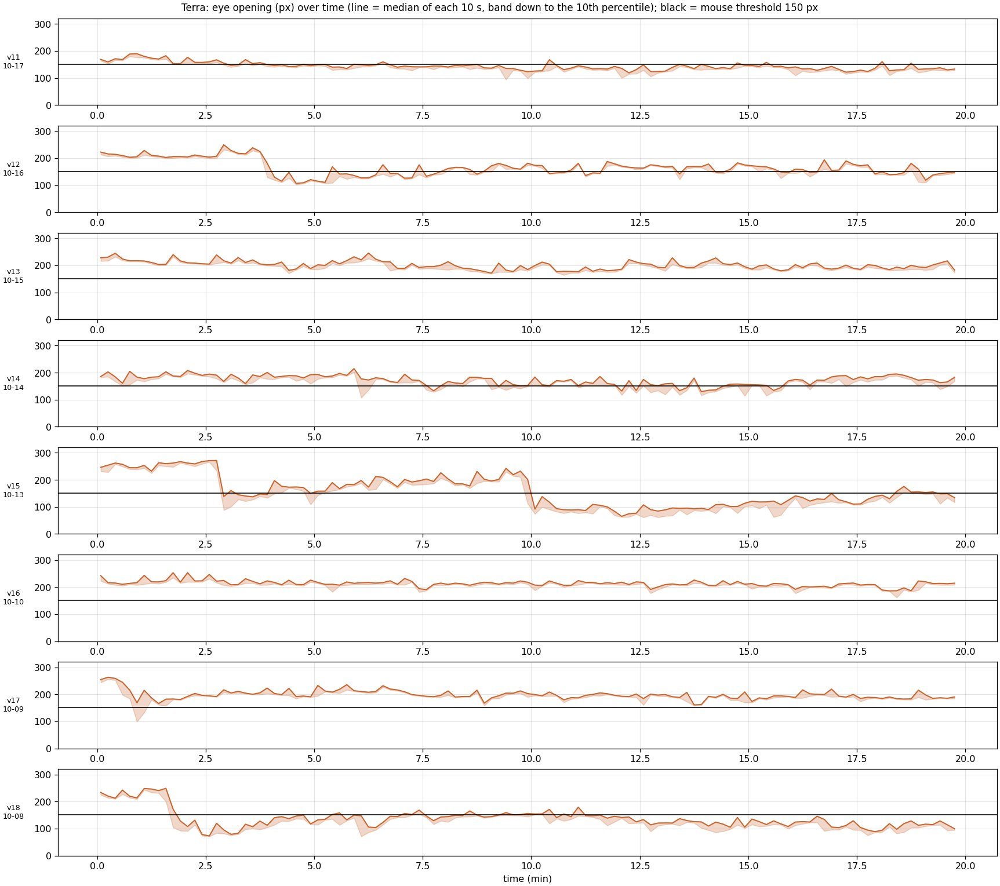
图 11-5：Terra 的 8 个视频各一行，横轴是时间（分钟），线是每 10 秒睁开高度的中位数，阴影向下到第 10 百分位，黑线是这只老鼠的阈值 150 px。线在黑线之上的时段眼睛睁着（13、16、17 几乎全程），在黑线之下的时段眼睛是眯着的（11、18 大半段）。不设阈值时，这条线本身就是睁开高度的连续量。Pluto 和 mouse A 的同样的图在结果文件夹里。Figure 11-5:One row per Terra video; x = time in minutes, the line is the median eye opening of each 10 s, the band reaches down to the 10th percentile, the black line is the mouse threshold 150 px. Where the line is above the black line the eye is open (13, 16, 17 almost throughout), where it is below the eye is narrowed (11 and 18 most of the time). Without any threshold, this line is the eye opening as a continuous variable. The same figures for Pluto and mouse A are in the results folder.
Conclusion:One pixel threshold per mouse, Pluto 147.5 px, Terra 150.5 px, almost the same for the two mice.
Basis: on the mouse's judged frames, the threshold with the highest recall − false-alarm rate (Figure 11-1). Accuracy Pluto 94.0%, Terra 88.9%.
Stability: leave-one-video-out ranges Pluto 147.5–160.5 px, Terra 143.5–154.5 px. Pluto's optimum is flat (92–94% accuracy from 147 to 160 px); Terra's is sharp because many frames of videos 11 and 18 have their opening right at the threshold.
Two checks: the judged frames separate on the distribution of all frames, the misjudged ones almost all within 20 px of the threshold (Figure 11-3); the model's eyelid distance is within a median 2 px of the labels and moves only 2–4% of the test frames across the threshold (Figure 11-4). So most errors near the threshold come from borderline frames being hard to judge, not from the model.
Day by day: videos 0, 5, 6, 7, 13, 16, 17 have at most 1.1% of their frames below the threshold; videos 1, 2, 14 have 3–14%; videos 3, 4, 8, 9, 10, 11, 12, 15, 18 have 20–79%, among them videos 9, 10, 11, 18 with 59–79%, a narrowed eye all day. Not-open is a sustained state in these recordings; blinks are only a subset of it.
Limits: one judge, repeatability not measured. The sample is stratified by opening, so the accuracies are those of the stratified sample, not per-frame accuracies of whole videos. The threshold is scored on the frames it was chosen on; leave-one-video-out is the only check of that. On Pluto's three earliest days the eye width is 3–12% smaller; the same threshold is used (see the premise check). All 17 judged frames of video 18 are not open, so Terra's threshold is driven mainly by the days narrowed all day. Mouse A cannot be set. 330 frames drawn, 3 not judged.
12整段视频的时序：每一帧的瞳孔面积、睁开高度和置信度随时间的变化Time series of the whole videos: pupil area, eye opening and confidence of every frame over time
基本信息Basic information
视频Videos
全部 19 个视频（视频 0–18；老鼠 A 1 个，Pluto 10 个，Terra 8 个）。视频 0 长 5 分钟，其余 19.9 分钟（71,748 帧，60 帧/秒）。All 19 videos (videos 0–18; 1 of mouse A, 10 of Pluto, 8 of Terra). Video 0 is 5 min long, the others 19.9 min (71,748 frames at 60 frames/s).
标注标准Label standard
2026 年 9 月 20 日明确的点位定义（第 4 步）。The keypoint definitions made explicit on 2026-09-20 (step 4).
模型Model
每个视频用它自己平台点的那个模型（第 5 步的表；视频 7 和 12 的平台点是 0 帧，用它们各自的 20 帧模型）。ResNet-50，batch 2，120 epochs，取最后一个快照；对整段视频每一帧做预测，不按置信度筛点，不做任何平滑或剔除。For each video the model at its own plateau point (table of step 5; videos 7 and 12, whose plateau is at 0 labels, use their 20-label models). ResNet-50, batch 2, 120 epochs, final snapshot; every frame of the whole video is predicted, with no confidence cut-off, no smoothing and no frame removed.
每帧的量Per-frame quantities
四点法面积 = π/4 × |x(瞳孔右) − x(瞳孔左)| × |y(瞳孔下) − y(瞳孔上)|（第 10 步的定义）；睁开高度 O = y(下眼睑) − y(上眼睑)（第 11 步的定义）；瞳孔点最低置信度 = 四个瞳孔点置信度的最小值；瞳孔中心 = (左右点 x 的平均, 上下点 y 的平均)，图上画它减去整段视频中位位置的差。Four-point area = π/4 × |x(pupil right) − x(pupil left)| × |y(pupil bottom) − y(pupil top)| (definition of step 10); eye opening O = y(eyelid bottom) − y(eyelid top) (definition of step 11); lowest pupil confidence = minimum of the four pupil points' confidence; pupil centre = (mean x of left and right, mean y of top and bottom), drawn minus its median position over the video.
脚本和结果Script and results
v2_new_pupil_top_video_scaling/scripts/area_timeseries.py；结果在 v2_new_pupil_top_video_scaling/results/area_timeseries/；每个视频的时序图是其中的 area_timeseries_videoNN.png，每个视频的帧数和面积中位数在 area_timeseries_all_videos.csv。v2_new_pupil_top_video_scaling/scripts/area_timeseries.py; results in v2_new_pupil_top_video_scaling/results/area_timeseries/; the time series of each video is area_timeseries_videoNN.png there, the frame count and median area of each video are in area_timeseries_all_videos.csv.
Scope:This section only plots the per-frame quantities against time and draws no conclusion. Closed frames are judged frame by frame by the rule of step 11 and are not marked here; the time course of blinks (start to end of a blink, duration, frequency) is a separate analysis.
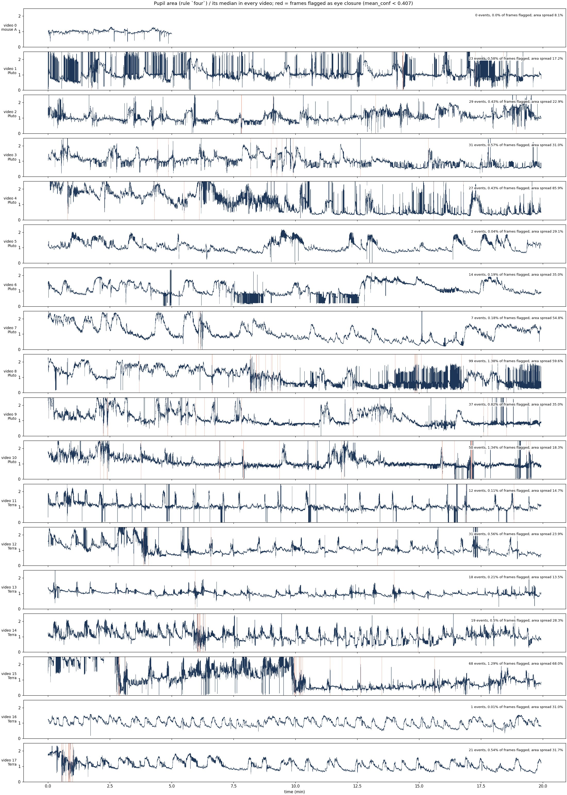
图 12-1：每一行是一个视频，纵轴是四点法面积除以该视频的面积中位数（1 = 中位数，范围 0–2），横轴是时间（秒）。Figure 12-1:One row per video; y = four-point area divided by the video's median area (1 = median, range 0–2), x = time (s).
{{TS_STRIP}}
图 12-2：每个视频各一张时序图，排成一行，可以左右拖动。每张图从上到下：四点法面积（px²）、睁开高度 O（px）、瞳孔点最低置信度、瞳孔中心相对中位位置的偏移（px，蓝 x、黄 y）；横轴是时间（秒）。Figure 12-2:One time-series figure per video in one row; scroll sideways. Top to bottom in each: four-point area (px²), eye opening O (px), lowest pupil confidence, pupil centre relative to its median position (px, blue x, yellow y); x = time (s).
Unreliable frames: finding and repairing wrong frames now has one pipeline (9.2, 9.3): two finders, fitting for jumps in time and the PCA for implausible shapes; all 23 wrong frames are found and 15 repaired. The check by eye on the whole videos: about six of seven repairs are right, about three of five still-flagged frames are real errors. Open are the remaining 8 (4 with several points thrown at once, 4 judged closed-eye), how to repair the errors the PCA adds, how to cut the two in five false alarms among the still-flagged frames, and the check by eye not yet repeated on the smallest-subset repair. Loop (9.4): whether the checked or the repaired frames should enter the training set cannot be decided on the 40 supplementary blind frames, and the direction changes with the video (on video 6 the repaired frames added to the training set misplace pupil_left on a few frames); experiment 1 was run on ten videos, the other nine not; experiment 3, which feeds both kinds of frames back together, has first-turn results only, and what the later turns change and where the loop stops is not known yet.
Videos 4, 5 and 8 have larger errors (video 8 above 25 px). The cause is a blurry image: the points are hard to place even by eye, so the labeler's own judgement is unstable. Whole-image sharpness and brightness do not differ from the other Pluto videos; the blur is local, at the pupil edge, and has not been quantified.
Area: the four-point rule is used; median error 5.4% on all test frames against 8.4% for the three-point rule. But on 4 of the 19 videos (videos 1, 2, 5, 7) the three-point rule is lower, and on videos 4 and 8 both rules are inaccurate (43.8%, 24.0%); neither is explained. Plateau points cluster at 20–40 labels (20 and 40 labels: 7 videos each; 0 labels: 2; 60 labels: 2; 80 labels: 1), but each point is a single training run on 50 test frames, so differences within ±20 labels cannot be resolved.
附A附录：每个视频每一批的选帧图Appendix: the selection sheet of every batch of every video
A record of the process; no new conclusion. One row per video, from batch 1 to the last batch; scroll sideways. Batch 1 has no model to use: 20 frames picked by clustering the appearance of all frames. From batch 2 on, the model predicts the whole video, the jump rule flags candidate frames and 20 of them are picked by appearance clustering. Algorithm and how to read a sheet: section 5.1 and Figure 5-1 of step 5. Batches after the plateau point are shown too (they were labeled but not carried into later videos).
{{APPENDIX_SELECTION}}
附 2：第 11 步的判断帧（睁开 / 非睁眼）：标注者的判断和原图A2: the judged frames of step 11 (open / not open): the labeler's verdicts on the original frames
The 239 judged frames of videos 0–13 of step 11 (240 drawn, at most 18 per video, drawn at random in five strata of the model's eye opening). The labeler saw only the single original frame, no values, and judged "open" or "not open (closed, or the lid covers part of the pupil)". Frame border and bottom band: green = open, red = not open; the r on the band (eye opening ÷ the video's median) was added afterwards. One row per video; scroll sideways.
Where things are: Code, documentation, result tables and figures are in the GitHub repository: steps 1–3 under v1_old_pupil_top/, step 4 under keypoint_definitions/, steps 5–11 under v2_new_pupil_top_video_scaling/ (one folder per video, cross-video results in results/). Every important state has a git tag, listed in CHANGELOG.md. Raw videos, labels, model weights and per-frame predictions are kept locally and on the backup drive only. The figures on this page are the original figures of the results/ folders.